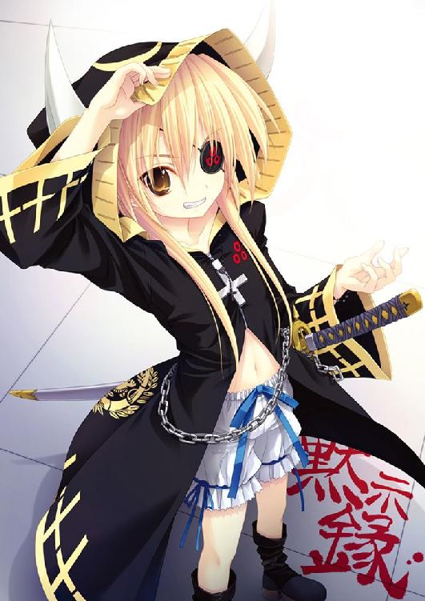
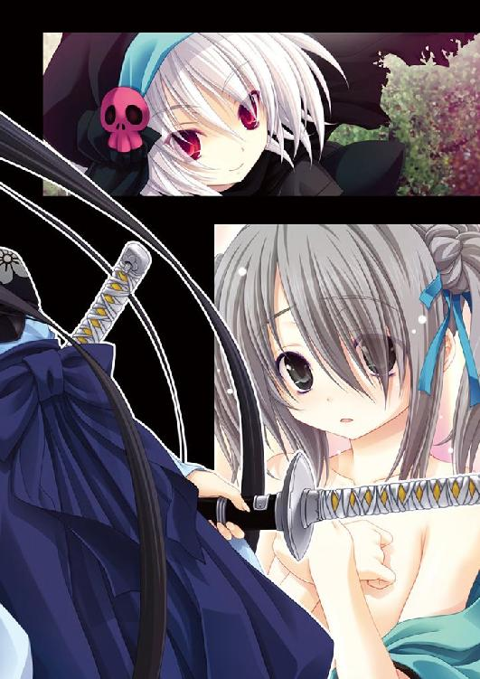
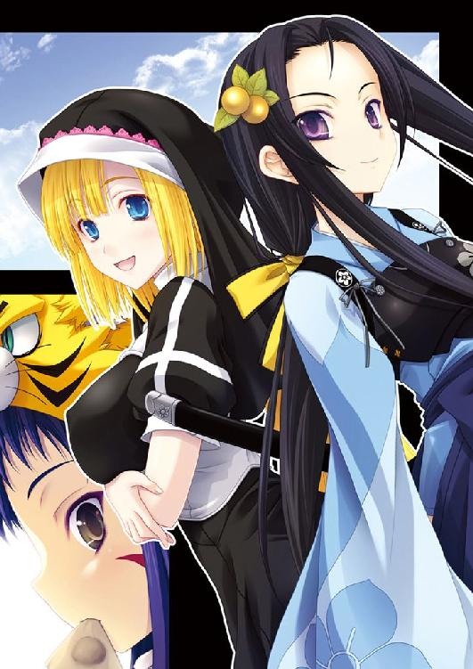
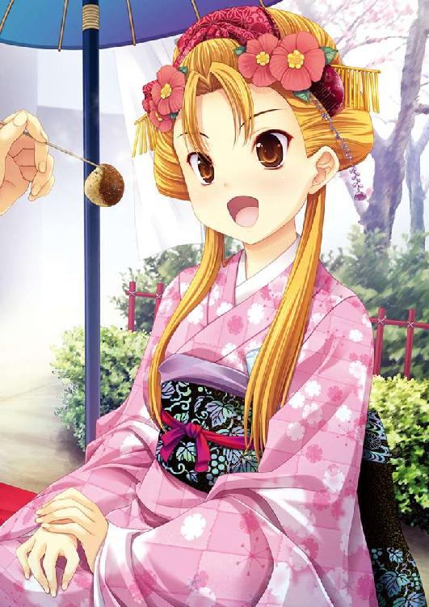
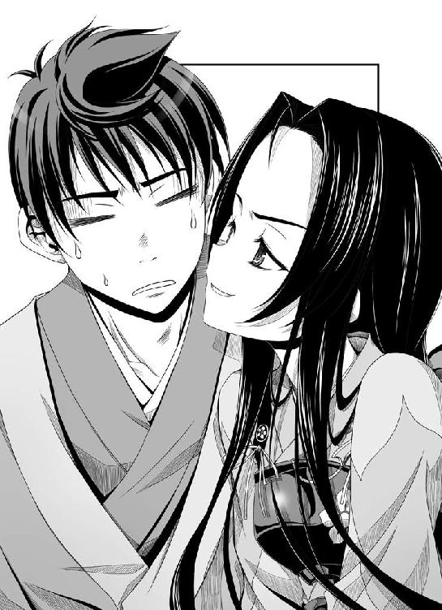
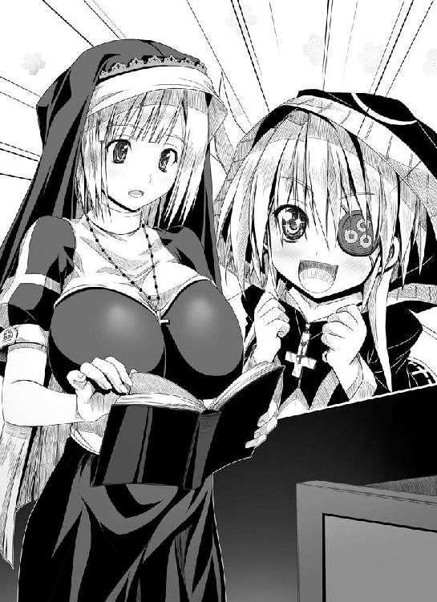
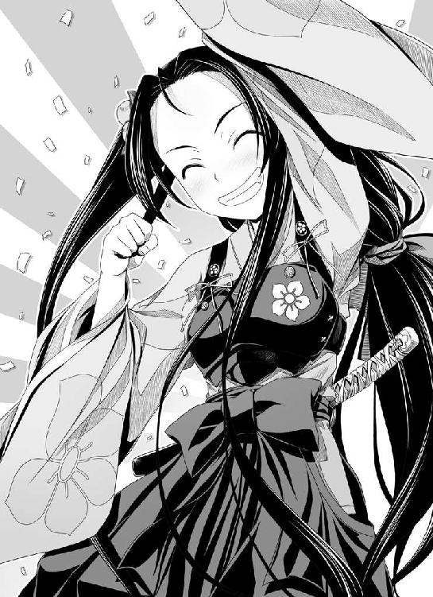
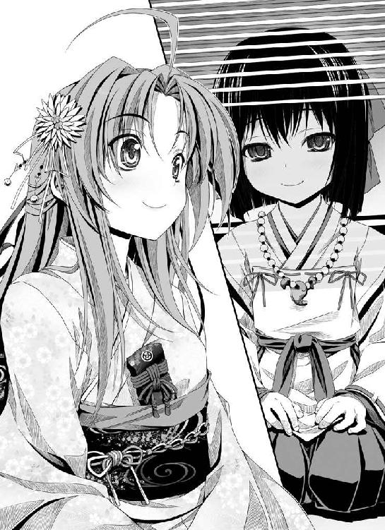
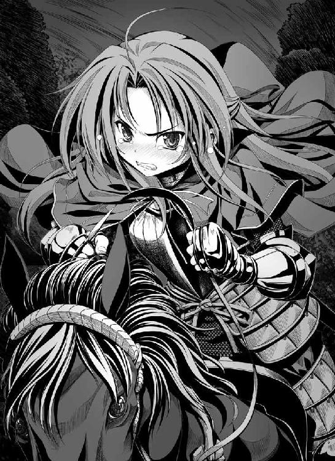
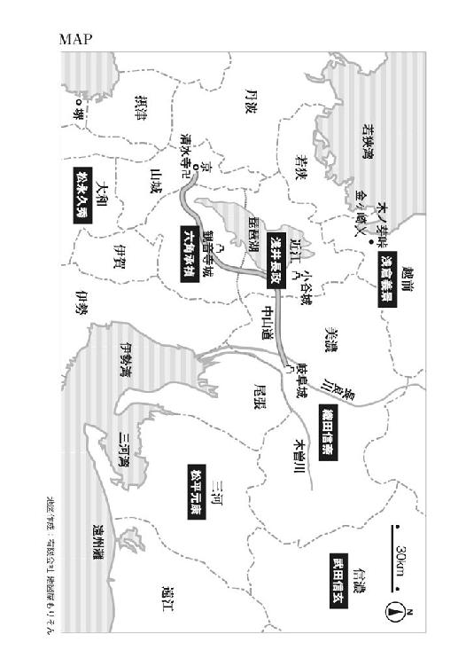

| 織田信奈の野望03 | |
| 春日みかげ | |
| SBクリエイティブ株式会社 (2010) | |




織田信奈の野望３
春日みかげ

本書に掲載されているコンテンツの著作権等の知的財産権およびその他すべての権利は、ソフトバンク クリエイティブ株式会社または正当な権利を有する第三者に帰属します。
本書の内容を権利者の許諾なく複製・複写・翻案・放送・出版・データ配信（送信可能化を含む）などすることはできません。
カバー・口絵 本文イラスト
みやま零
目次
「全軍、京へ！」
織田信奈が率いる上洛軍は、九月七日に岐阜から出発した。
京では、畿内（関西地方）の支配者・三好長慶亡きあと、遺された三好一党と長慶の側近だった松永弾正久秀が足利将軍家を攻め滅ぼし、将軍不在の状態となっていた。
最後の足利将軍・義輝は京を捨て、明国へ亡命したと言われる。
しかも、畿内の支配権を巡って三好一党と松永久秀が対立し、両者の抗争は日を追うごとに激化。戦のさなか、松永久秀の手で奈良東大寺の大仏殿が焼かれる始末。
そのため、今の京は政治的な空白地帯。
そして足利宗家が事実上絶えた今、将軍職を継ぐにもっとも相応しい血筋の武将といえば──信奈に降伏して蹴鞠三昧の日々を過ごしていた、あの今川義元。
流浪の少女武将・明智光秀が岐阜を訪れ、信奈にそう進言してきたのだ。
信奈は、今川義元を上洛させて将軍職に就かせるという大義名分を得たのである。
「ぐずぐずしている暇はないわ。速攻で京まで一直線よ！」
馬上の信奈は、いつもの茶筅髷のうつけ姿はさすがにやめて、南蛮兜に赤いビロードのマントを羽織った伊達姿。
それでも何かを持っていないと落ち着かないらしく、左腕には種子島。
右腕には、自慢の鷹をとめている。
信奈の後に続く武将たちは──。
「我が軍は実力はともかく、見た目の華美さは九十点です」
幼めの姫武将が多い中、数少ないお姉さん武将。
紅備えの軍兵を率いる信奈のお目付役・丹羽長秀。あだ名は万千代。
「あたしは、おなかすいたなあー」
青と白銀の鮮やかな鎧に身を包んだ柴田勝家。あだ名は六。
胸が大きいので特注の鎧をつけているが、この鎧のせいでますます胸がでかく見えてそれはもう最高だ──とは、侍大将から部将へ出世したばかりの新参者、相良良晴の談。
この二人が織田家の二大家老。信奈にとってはお姉さん役。
まあ、勝家は胸の大きさ以外はぜんぜん姉らしくないが......。
そしてその後ろに。
「......良晴。ちゃんと前を向く」
「うわ。うわうわうわ。こらっ暴れるなっ！」
馬上から振り落とされそうになっている男のほうが、われらが相良良晴。
愛称・サル。
現代日本の高校生だったが、気がつけば戦国真っ直中に。
戦国ゲーム知識と図太い神経だけで、ここまで生き延びてきた。
今や、足軽からとんとん拍子に部将へと、破格の出世街道まっしぐら。
その良晴をど派手な朱槍でつんつん突いているかぶき者の女の子が、前田犬千代。
信奈の小姓で、犬のように信奈になついている。
普段は無口でおとなしいが、怒ると怖い。
そして良晴と轡を並べて進んでいる女の子は。
「だ、大丈夫ですかっ、相良先輩!? サルも木から落ちる、弘法も筆の誤りという言葉もあります。お気を付け下さい」
長い髪と広いおでこ。
そして、その髪に揺れるきんかんの髪飾り。
まさしく彼女こそは涼やかな美少女、新参者のかわいい後輩、明智十兵衛光秀。
もとは斎藤道三の小姓を務めていたが、道三が美濃を追われた際に浪人になった。
その光秀、足利将軍家が滅んだのを見て「急ぎ上洛して今川義元を将軍職に祭り上げ、天下の実権を握る」という奇策を信奈に献じた功績を買われ、織田家に奉公することになったのだ。
「憧れの信奈さまに奉公できる日がくるとは夢のようです。これからよろしくお願いしますね、相良先輩！」
満面の笑みでぎゅーと握手されてしまい、良晴はめずらしくキョドった。
「お、おう。任せとけや」
「先輩が建てた墨俣一夜城にはじーんと感動しました！ ああ......私も早く、相良先輩のような素晴らしい大功をたてて信奈さまに褒められたいものですっ」
くうう......俺を尊敬の眼差しで見ているぜ十兵衛ちゃん。いや、この熱い眼差しはもしかして......尊敬を通り越して、これは、恋っ!? こここんな綺麗な子が俺にっ？ 超やべえ戦国時代に来てからの俺ってモテすぎてないっ？
良晴は、天にも昇る心地。
むー、と後ろで犬千代が不機嫌そうにうなっていることに気づいていない。
「おーほほほほ！ ついに、ついにわが念願の今川幕府を開く時が来たのですわ！ 元康さん、頼みましたわよ！」
輿の中から顔を覗かせている今川義元は豪華絢爛な十二単をまとい、カン高い笑い声を立てて琵琶湖の眺めを満喫している。
「このお方は、ご自分の立場をわきまえておられないのでは......」
「義元さまのお言葉は、せっせと聞き流してください～」
いぶかしがる織田家家臣団の視線から懸命に今川義元をフォローしているのが、たぬ耳と眼鏡が目印の松平元康、あだ名は竹千代。
信奈の幼なじみ。三河の大名の家に生まれるが最近まで今川義元の家来だった。
義元が信奈に降ったので、三河でちゃっかり独立。信奈と同盟を結び、晴れて妹分となった。
たぬきを始祖と崇める松平家だけに、なにやら腹黒い雰囲気がないではないが、信奈のことは「吉姉さま」と慕っている。
このほか、「美濃三人衆」の暑苦しい筋肉親父トリオに、舌足らずのちびっ子忍者・蜂須賀五右衛門が率いる荒くれロリコン男どもの川並衆、子馬に乗ってしずしずと進む「一ノ谷の兜」をかぶった幼き天才軍師・竹中半兵衛。
そして、高齢ゆえに駕籠に乗ってはいるが、天下盗りの夢を義娘の信奈に託した〝美濃の蝮〟こと斎藤道三。
そうそうたる人材が、一堂に会していた。
みゃあみゃあと名古屋弁で進軍する華麗な軍装の尾張兵。
新たに加わった無骨な美濃兵。
隣国三河から馳せ参じた、信奈の妹分・松平元康の援軍。
その総勢は四万もの大軍となっていた。
東海地方から上洛するルートは、二つ。
ひとつは、清洲から伊勢・南近江を通る東海道。
もうひとつが、岐阜から北近江を経て、南近江で東海道と合流する中山道。
信奈は中山道を進んだ。
途中、北近江で同盟軍である浅井長政の一万と合流するためである。
だが実は、婚姻同盟を強く望んだ長政に「信奈の妹」と称して送り込んだお市姫の正体は、信奈の弟、勘十郎信澄なのである。
柴田勝家は「もしもお市姫の正体が男だとバレてたら一大事。ここで長政と会うのは危険です」と信奈を止めたが、いざ黒と緑に塗り分けた当世具足に身を包んだ長政が街道に現れるとこれまでのいきさつはどこへやら、馬上から降りて信奈を「義姉上」と呼びながら頭を下げるその姿は実に恭しい。
その上、長政が誇る女とみまがうばかりの美貌にとって唯一の汚点となっていた眉間のケンも取れて、別人のように優しげな表情になっているではないか。
「義姉上、この長政とともに参りましょう──天下へ」
これには、信奈のほうが気味悪がった。
良晴を呼んでひそひそと耳打ち。
「ねえサル。もしかして長政って......男が好きなのかしら？」
「ま......まさか......」
「だって、いかにも夫婦円満って感じの顔してるわよ？」
「独身娘でモテないお前に、夫婦円満とかそーゆーのわかるのかよ？」
「う、うるさいわね」
「でも、確かにキャラが変わってる気がするな......まさか信澄と......ゴクリ」
「だから、長政が使ってるお香は伽羅じゃないってば......あーあー、気になってきちゃった。考えないことにしようっと」
「弟の貞操がいろんな意味で危機なんだぜ。考えてやれよ」
「やーだー」
※
実は浅井長政が人変わりしたのには、このような理由があった。
時間を遡り、お市御寮人が嫁いできた翌日の北近江。
浅井長政の居城、小谷城。
琵琶湖を睥睨できる山城で、標高は約五百メートル。かつ、南北の幅が一キロメートルという壮大な巨城であった。
この小谷城は、長政の祖父・浅井亮政が築城した。亮政は浅井氏を一代で北近江の戦国大名の地位にまでのし上げた、下克上の雄。
だが亮政の息子──二代目の久政は戦に弱く、南近江の六角承禎との合戦にたびたび敗れ、ついには六角家に従属することとなり、おのが妻と嫡子の猿夜叉丸（長政）を人質として六角承禎へと差し出すことになってしまった。
これも戦国の世の定めであろう。
だが、猿夜叉丸こと長政は父親の久政とは似ても似つかぬ勇敢な若武者で、戦上手だった。
しかも、女とみまがう美少年ぶり。
家臣たちからの人望も厚い。
人質となっていた長政はある夜、脱出を決断。密かに小谷城へ帰城し、自らに心を寄せる浅井家家臣団とともに惰弱な父・久政を強引に隠居させ、六角家からの独立を堂々と宣言した。
もちろん、浅井家に造反された六角承禎の怒りはただごとではなく、すぐに全軍で北近江へと進軍してきた。
しかし待ち構えていた長政は数で倍する六角軍を見事に打ち破り、「尾張の織田信奈、近江の浅井長政」と並び称される若き戦国大名として一躍名をはせることとなったのだ。
なお、父・久政は家督を長政に譲ったとはいえ、その後もあれこれと長政の政に口を挟んでいる。長政の親孝行は有名で、仲違いしているわけではない。家臣団は「何かと口うるさい大殿はこのまま琵琶湖に浮かぶ竹生島へ幽閉し続けていたほうがよろしいかと」と勧めたが、長政は「わが父であるぞ」と首を縦に振らず、いったん竹生島に流した父を独立後、すぐに小谷城へと迎えている。
その、浅井長政。
先刻、もう一人の新興勢力である織田信奈をおのが嫁として尾張を浅井家に組み入れれば天下統一も夢ではないとあれこれ策謀を図ったが、ついには織田信奈とその家臣団にその野望を阻まれた。
信奈が提案した「織田家の姫を長政が妻に迎えて両家の対等な婚姻同盟を結ぶ」という落としどころに、長政は渋々納得。
しかし、長政の胸中にあかあかと燃える野望の炎は、まだ消えてはいなかった。
織田信奈は自分と似た野心家だが、どこかお人好しで、人間に対して甘いところがある。冷徹峻厳な戦国大名を演じてはいるが、根はお姫さまなのだ。人質になった経験がないためかもしれない。
ならば──すでに独力で美濃を併呑して強大となった織田家に意地でも対抗するよりは、しばらく良き同盟相手を演じてみせ、いずれ自分を信頼し信奈が隙を見せた時にすかさず襲いかかる──。
裏切りは戦国の世の常。そのような奇策も、ないでもない。
もっとも、かような裏切りを実行すれば世間に対する信義というものを失う。
今、小谷城の山頂にこしらえた自分専用の湯船に浸かり夜の琵琶湖を眺めている浅井長政は、「いずれ信奈を裏切るか、赤心から忠実な弟分となるか」で心を揺らしていた。
考え事をする時、長政はいつもこの山頂の露天風呂に長湯する。
ここならば、誰からも見られない。
大がかりな普請を行い温泉の湯を山頂まで引き上げる仕組みを作らせるのに一苦労したが、六角家の人質時代から長政は常に孤独を好んだ。
父の久政は、越前・朝倉家との同盟にこだわっている。
祖父の亮政の代から、浅井家は朝倉家の支援をたびたび受けてきた。この旧恩に勝るものはなく、織田信奈などは田舎の出来星大名にすぎない。そもそも織田家などは越前の劔神社の神官にすぎなかった家ではないか。朝倉家とは格が違いすぎる。久政はそう言う。
だが若い長政にしてみれば、老大国の越前朝倉家はすでにその盛りを過ぎていて、いずれは若々しい新興勢力に滅ぼされる運命だとしか思えなかった。
故に、織田家との同盟にはどうしても「婚姻」が必要だった。それも、織田家から妻を（人質として）迎えるという浅井家有利の形でなければ、父の久政が納得しなかったのだ。
（しかし考えてみれば織田家には信奈どの以外、姫はいなかったはず。ならば、あのお市姫とは何者なのであろうか）
昨夜、織田家からこっそり輿入れしてきたお市姫。
確かに、高貴な育ちであることは一目でわかる。
高価な着物を着ているから、というだけではない。清楚で可憐な身のこなし、優雅な歩き方、すべてがいちいち洗練されていた。
しかも顔立ちも信奈にそっくりでまるで雛人形のように美しく、信奈の妹と言われれば確かにそうとも思えるのだが、ひとつ妙なことがあった。
しゃべらないのである。
新婚の初夜の儀式、その間じゅう、お市姫は部屋の隅に隠れてがたがたと震えるばかりで一言もしゃべらなかった。
どうやらおぼこい生娘なのであろう......と長政は気の毒に思い、「女たらしだのなんだのとあれこれ噂されていますが、私はゆえあって女人を断っています。織田家の姫君に対して無体なことはいたしませんのでご心配なく」と優しく声をかけておいた。
実は長政は、女を抱けない。
今まで、野望のためにたらしこんだ女たちを抱いたこともない。
抱いて下さいと迫られるよりは、怯えてもらっているほうが、都合がよかった。
だが、それにしてもまったく声を発しないのは異常である。
今日、父久政と家臣団の前にお市姫が初めて顔を見せた時にも、しゃべっているのは姫の隣に侍っている忍びの娘だけであった。
しかもこの忍び、かみかみで、何を言っているのか途中からさっぱりわからなくなった。
（あんなかみかみの忍びにしゃべらせねばならぬほど、お市どのは話が苦手なのであろうか）
妙に、お市姫のことが気にかかる。
女などは野望のための道具にすぎぬと思っていたが、なぜ──。
その時。
ぱちゃ......。
背後に、水に濡れた足音が。
この山頂にそびえる檜造りの露天風呂には、誰も入れてはならない。入った者は問答無用で斬り捨てると宣言してあった。実際、これまで二度、入浴中に「せなを流しまする」と入ってきた家臣を長政は斬った。実際に斬ることで、もはや家臣の誰もが決してこの場には近寄らなくなった。
だとすれば、この乱入者は家臣ではなく、敵方の暗殺者？
宿敵・六角承禎に雇われた甲賀の乱破か、それともまさかお市姫に従っていたあの女忍びなのか？
油断であった。
お市姫の無言が妙に気がかりで、心ここにあらずといったふぬけになっていた。
長政は素早く立ち上がり、湯船から身を翻すように跳んだ。
跳びながら手につかんだ刀を鞘から抜いて、暗殺者の影めがけて斬り下ろそうとした。
「うわあああ！ 待ってくれえ！ ぼくだ、お市御寮人だあ！」
長政は、斬り下げる寸前で刀を止めた。
蒼い月光の下に浮かび上がったその影の正体は、乱破ではなかった。
一糸まとわぬ姿で「やあ温泉がある」とのんびり入浴しに来た、新参者。
自称・お市御寮人。
が、その声は──いや、声以前に、その瘦せてはいるが筋肉質の堅そうな身体は。
「お......おとこ......っ!?」
思わず、裏返ったような高い声で叫んでいた。
「はっはっは。ばれてしまっては、仕方がない。実はお市姫なんて妹はいないんだ。ぼくの本名は津田勘十郎信澄。姉上の妹ではなく、弟！ いやぁ、昨夜は怖かった。なにしろぼくは呆れるほどに美しい。黙ってさえいれば、よもや男だとはわかるまい。興奮したきみに押し倒されたらどうしようかと......最悪の場合、〝戦国に衆道はつきもの。いっそ男でも構わぬ〟と言い出される恐れも」
腰に手を当て、脳天気にふんぞりかえってしゃべり続けていた勘十郎信澄、はたと気づいた。
目の前にいる、浅井長政。
あれ。
これは......。
この柔らかな肌、くびれた腰、そして膨らんだ乳房。これは、むくつけき野郎ではない。
「ややっ？ き、きみは......その身体は......お......お......おんなあああああっ......!? !? !?」
「み......見るなあっ!!」
斬るか、斬るまいか。
刀を、落とした。
長政は空いた手で自分の胸とへその下を隠すと、真っ赤に照れて再び湯船に飛び込んでいた。
そう。
猿夜叉丸こと、浅井長政。
その、自分の入浴姿を見た家臣を問答無用で斬り捨てねばならないほどの秘事とは。
「も、もはや隠し通せまい......そ、そう。わ、私は実は浅井家の姫なのだ！ 織田信奈め、我が秘事を見破ってまさか男に女装させて送り込むとは......」
「な、なんだって？」
「......負けた。織田信奈......とうてい私が勝てる相手ではなかった」
「あ～。いや、姉上はただ......」
「この浅井長政。今度こそ、信奈どのに心から降参つかまつる」
肌を殿方に見せることを恥じて湯船につかったままではあるが、長政は三つ指をついて信澄に頭を下げた。
「......だが勘十郎信澄、いつまでそのむさい身体を私に見せつけるつもりだ！ だ......だんだん形が変わってきているではないか!? 隠せ、隠さぬか！」
「やや、しまった。つい、長政どのの柔肌に興奮してしまい......」
「ききき貴様、斬られたいのかっ！」
「これでいいかな～？」
「ひっ？ どうして湯船に入ってくるのだっ？ 近づくな、近づくな。うわ、うわああっ！」
長政は頰を真っ赤に染めて叫ぶが、信澄は名うてのアホだった。湯に入る以外に己の（ある意味）たくましすぎる身体を隠す方法を思いつかなかったらしい。
「さささ触るな！ よらば斬る！」
長政がお湯鉄砲を構えて、ばしゃばしゃとお湯攻撃。
信澄はまだいろいろな意味で驚きっぱなしらしく、鼻血を流しはじめた。
「いや～、驚いた。ぼくとためをはる女顔の美少年だと思ってはいたが、まさかきみが女の子だったとは」
「いいい今すぐその嫌らしい鼻血を止めねば、斬るぞ！」
「長政どの。どうしてわざわざ男のふりをしているんだい？ 大名家の男子は生き延びるのが難しい乱世だ。女だてらに家督を継いだ姫大名などめずらしくもないだろうに......うちの姉上とか」
信澄が、真顔になった。
「姫と偽って輿入れしたとはいえ、すでにぼくらは夫婦。理由を、聞いておきたい」
長政も、答えねばならない、と覚悟を決めた。
「知っているだろう。私は幼き頃より、六角承禎の人質として観音寺城に住まわされていた」
「ああ。話だけは聞いているけど......竹千代こと松平元康くんと似た境遇だねえ。あの子も幼い頃は誘拐されて織田家に売られてきたり、今川の人質になったりといろいろ苦労を」
「......今川義元は姫大名ではないか。だが六角承禎は男で、しかも......その、年頃の娘のみならず年端もいかぬ幼い娘も大好物というゆがみきった好色漢だ」
「なんと」
「ゆえに、わが母はこの猿夜叉丸を守るために、私をあえて男子として育てたのだ。だが私が成長すると、六角承禎もわが正体を見破った。私は、奴に寝込みを何度か襲われそうになった。わが剣で承禎を斬るのは容易いが、母を巻き込んでしまう。操を守るために逃げるのがせいいっぱいだった」
なんて悪い男だ、と信澄がめずらしく眉をつりあげる。
「こんな美少女にそんな無体な真似を......成敗しなくちゃあ」
「び、美少女とか、言うなっ！」
「やあどうしてだい。美しいものは美しい、ぼくは自分に正直でねえ」
お湯鉄砲を浴びせて黙らせた。
「ともかく承禎の好色な陰謀に窮した私は自らを守るためにこの美貌を利用して六角家の女どもを次々とたらしこみ、観音寺城から脱出して小谷城へと舞い戻ったのだ」
長政が、薄い唇をかみながらつぶやいた。
「けほけほ。そして浅井家の家督を継いだのかい。でも、どうしてそのときに晴れて女だと名乗らなかったのかな？」
「......父に反対されたのだ。ゆえに、私は女を捨てた。女としての幸せを、諦めたのだ」
「久政どのに？」
「父はかたくなな方で、当世流行りの姫大名などは認めぬとおっしゃった。だが、父には私以外に子はいない。自分を隠居させて家督を奪うのであれば、このまま男として生きよと。女に戻りたいのであれば、私には浅井家は継がせぬ、朝倉家か六角家から養子を取ると......女と家督、どちらかを選べと迫られた」
それは絵に描いたようなバカ殿だなあ、と信澄があきれたように言った。
「長引く戦国の世でいつも人手不足の武家に、男も女もないじゃないか～」
「いにしえの昔は、武家の統領とは男が務める仕事であったと父は言うのだ」
「そうなのかい？ いったい、いつのいにしえだい？」
「おおかた、やまと御所の初代姫巫女さまが神の世を統治し、その弟君が剣をもって人の世を統べていたという遙かに遠き神話の時代であろう」
「古すぎるなあ......」
「ともあれ、あの忌々しい六角承禎のおかげで私はすっかり男嫌いになってしまったし......それに男を騙ることには利点もあった故、私は男として生きることに決めたのだ」
「利点？」
「幸い、私は男装すれば絶世の美男子に見える。女は皆、美男子に弱い。たいていの女の心は、奪える。観音寺城から脱出する際にも六角から独立する際にも、この美貌が役に立った」
それじゃあ、利用するだけ利用して女を捨てると噂が立っていたのは......と、信澄。
「この通り、私は女を抱けぬ。抱けぬ代わりにあれこれと生殺しのようにもてあそぶ無体な真似もしたくない。ゆえに、思いつめた女から『抱いて下さい』とかたくなに迫られた時には無言で立ち去る他なかったのだ」
「なあんだ。そうだったのか、ははははは」
脳天気に笑う信澄の横顔。
頼りないようにも見えるが、自分の苦しい身の上話をさらりとした笑顔でぜんぶ受け入れてしまうあたり、意外とこの男は大人物なのかもしれない、と長政は思った。
「男を演じる最大の利点は、同じく天下統一を目指す織田信奈との同盟が可能になるということだった。父は織田方から姫をとる婚姻同盟でなければ認めぬと言うし、織田家には姫はいないと聞いていたし。もっとも、信奈どのは騙せなかったが」
「ということは、男女が入れ替わっているとはいえぼくときみは男と女。しかも尾張と近江を代表する美男美女というわけだ。いやこれは実にお似合いの夫婦だねえ」
「か、肩を抱いてくるなっ！ き、き、斬るぞっ!!」
信澄は、あっさりと手を引っ込めた。
こやつ女の扱いがうまいのではないか......と思うと、なぜか長政はかっとなってくる。
「やあこれは失敬。しかし、猿夜叉丸くん」
「そ、その名前はやめろっ！ 男のふりをさせるために母がわざとつけた名前だ！ ぜんぜん、かわいくないっ」
信澄が、さわやかに微笑んだ。
「せっかくこれほど美しい姫君に生まれながら、ずっと男のふりをしているなんてあまりにももったいない話じゃないか。少なくとも、ぼくはいやだ」
「......仕方がないではないか。夢の、ためだ」
「夢？」
長政は、顔を伏せて、絞り出すような声でつぶやいた。
私は、二度と人質になど、なりたくない。
六角承禎の影に怯える夜など、もうご免だ。
父に浅井家を任せておけば、再び六角に臣従させられる。そうなれば──。
故に私には、家督が必要だった。
もっと、強くなりたい。
天下に、浅井家の家紋──〝三盛り亀甲〟の旗を、ひるがえしたい。
怯えて眠る夜など、二度と──。
「だから、そのためには......」
「捨てる必要はないさ」
「え？」
「今のはサルくんの口癖だがね、ははは」
「サルくん？」
信澄が、にこやかにうなずいた。
湿っぽいところなど、このちょっとゆるい貴公子にはまったくなかった。
「よし決めた。ぼくときみが二人きりでいる時は、女の子に戻りたまえ。ぼくはきみをお市姫と呼ぼう。ぼくのことは勘十郎でも信澄でも尾張の貴公子でも『ういろう大臣』でも、適当に呼んでくれたまえ」
長政を苦しめていた悪夢の影は、瞬時に吹き飛ばされていた。
こんな。
こんなことで、わが苦悩が消えるはずが。
私が、捨て去ってきたと思っていた、娘として生きる夢を、取り戻せるはずが。
こんな男一人の出現で。
ばかげている。
（女は美少年に弱い......）
長政は、やはり自分も女だったのだ、そう気づいて、唇をかんでみた。
が、敗北感などはなかった。
長政は、聡い。
そして、自分の気持ちを認めることに対しては、信奈よりもずっと素直だった。
この未知の感情の正体が淡い初恋なのだと気づくまで、時間はかからなかった。
が、上洛軍に参加した長政は敢えて、自分が人変わりするに至ったそのような子細を信奈たちには話さなかった。
──はずかしくて、とても話せなかったのだ。
※
浅井長政が、松平元康と同じく信頼のおける同盟者となったことは間違いない。
これで、上洛軍は五万を超える大軍にふくれあがった。
京への道を阻む勢力は、南近江の六角承禎ただ一人。
この六角家は、佐々木源氏の流れを汲む名門守護大名。
六角承禎は三好一党と軍事同盟を結んでおり、信奈に徹底抗戦する構えだった。
しかも新興の浅井家とは、三代にわたる因縁がある仇敵である。
浅井長政にさんざん打ち破られてその勢力は衰えたとはいえ、壮大な石造りの曲輪を山々に配置した難攻不落の観音寺城がある限りこれを討ち滅ぼすことは不可能。
観音寺城の手強さを知る長政は、軍議の席で献策した。
「義姉上。六角の兵はさして強くないですが、観音寺城はかの稲葉山城にも匹敵する難城。いったん野陣を構築し、支城をひとつずつ気長に落としていくのが上策かと思います」
だが、五万の兵力を擁した信奈の上洛軍は、電光石火。
それに、信奈の最大の武器は、「速度」である。
「長政！ 美濃に稲葉山城という名の城はもうないわ。岐阜城、よ！ 全軍、進めぇっ！」
長政があっけにとられる中、信奈の手勢がいっせいに進軍する。
観音寺城という要塞を頼みにする六角側の将兵たちは、よもや、いきなり織田勢が全軍で攻めかかってくるとは予想もしていなかった。
しかも五万の兵が数千ずつの単位に分かれ、それぞれの軍団が一糸乱れぬ統制ぶりを発揮して複数の支城を同時に攻略していくとは。
戦国の常識では、どこの大名家でも大将をいただく軍団は強いが、逆に大将不在の軍団は統率力を欠いて弱体化するものである。つまり、大将自らが全軍を率いての一点突破、が兵法の常識。
大将なき副軍団はせいぜい、別働隊としての役目を果たすくらいである。
だが、信奈にはそんな常識は通じない。
自軍を複数の軍団に分割し、同時多方面作戦を展開したのだ。
「長政。織田家には、わたしの代わりに大将を任せられる武将が少なくとも五人はいるわ。六（柴田勝家）。万千代（丹羽長秀）。今は伊勢にいるけど、左近（滝川一益）。新たに加わった十兵衛（明智光秀）。そして、他の四人にくらべるとぜんぜん格落ちするけれども、サルよ！」
信奈は、言い放った。
大将が五人いれば、支城の攻略速度も五倍。
六角が防備を固める前に、すべての支城を陥落させてしまえば勝ちよ。
「......目から、鱗が落ちるようです」
長政は（とてもこの私が及ぶところではない）と戦慄した。
そして、信奈は言葉通りにたった一日で、観音寺城の周辺を守る十八の城をことごとく落としてしまった。
もっとも水際だった活躍を見せたのは、新参者の明智十兵衛光秀。
光秀は土岐源氏の血を引く高貴な家柄ゆえか、誰もがはっとする端整な美貌の持ち主。
おでこが広いという一点を除けば、武将というよりも貴族の姫君にふさわしい。
だが、いざ鉄砲を構えると、正確無比な射撃の腕を見せる。
さらには新兵器の鉄砲隊五十名を駆使し、次々と支城を落としていった。
「ご注意ください。当たると死にますよ」
光秀に狙われた敵将は、「そんな遠くからこの城へ弾が届くはずが」「あんなお嬢様に、種子島が撃てるわけがない」と高笑いしているところを、一撃で肩を撃ち貫かれて倒れていく。
「今のは挨拶代わり。次は、お命を頂戴します」
この涼やかな一言で敵将もその兵も恐れをなし続々と開城していく。
古式ゆかしい京風の姫武将でありながら、いざ戦となれば南蛮の新兵器を見事に使いこなすその器の大きさに信奈はいよいよ「さすがは蝮の小姓だっただけのことはあるわね」とご満悦。
支城をことごとく陥落させた翌日、六角承禎がこもっていたはずの観音寺城は無人の状態と化していた。
六角承禎は信奈軍の勢いに恐れをなし、甲賀の忍びの里へと逐電してしまったのである。
源頼朝以来の名門・六角家は、事実上滅亡した。
浅井長政は、浅井家三代の宿敵にして自分の操まで散らそうと狙っていたあの憎き六角承禎がたった一夜で信奈の前に敗れ去ったことを知り、「時代は変わった」と鳥肌を立てて感動し、かつ明智光秀率いる鉄砲隊の火力と轟音のすさまじさを目の当たりにしてあっけにとられた。
※
信奈が率いる派手な軍勢は、ついに京の都へと入った。
岐阜を出発してから二十日あまりという、神速での上洛だった。
そのあまりの速さに、松永久秀は信奈に書状を出し降伏して京を明けわたし、信奈軍から逃げるように大和（奈良）へ退去。三好一党は「六角承禎が一日で滅ぼされた」と聞いて恐れをなして摂津（大阪）へと兵を退いている。
最初は、
「織田の姫さまは、えらい気が短いお人らしいわ」
「大丈夫かいな」
「木曾義仲みたいな乱暴者やったらどないしよ」
「蝮の道三まで連れてきはったで」
と信奈を恐れていた京の民は、しかし、かぶき者と数寄者とそして南蛮かぶれが集まった織田軍のど派手な軍装に、まず心を奪われた。
前田犬千代などは、頭に虎をかぶった上、三間半柄（約六・四メートル）の長大な朱槍を構えている。
しかも、武将のみならず足軽に至るまで、めいめいが自分なりのセンスで派手にかぶいていた。
ちなみに尾張兵はみんな弱いが、そろって派手好みであった。
だが、派手なのは軍装だけではない。
信奈が京の町じゅうに布告した政策の中身も、派手だった。
「わたしが来たからには、兵の乱暴狼藉は許さないわ！ 民に乱暴した兵はその場で打ち首！町に火を付けたものも打ち首！ 銭と米を民から取り立てることも厳禁よ！」
戦国のはじまり以来、この日ノ本に、これほど厳格で、これほど民の味方をしてくれる軍勢があったろうか。
実際、織田軍の兵たちは派手にかぶいてはいるが、いっさい乱暴を働かなかった。そんなことをしたら即座に信奈が種子島で自分を撃ってくると、みな骨身にしみて理解しているのだ。
信奈はんは、わいら民の味方や──。
これでやっと、この京にも平和が来る──。
応仁の乱以来、なんと百年にもわたってこの京の都に暮らす民は絶え間ない戦と略奪に苦しめられてきたのだ。
大歓声の中、信奈は南蛮兜にビロードの赤マントという日本人離れした最新モードの軍装で行軍し、陽気に手を振って応えた。
「なんちゅう愛らしい姫さまや」
「うち、ほれてもうた」
「織田家は美男美女ばかりいうのは、ほんまやったねえ」
浅井長政も松平元康も、「これは夢ではなかろうか」「京の地を踏めるなんて、たぬきに化かされているようです～」とお互いに顔を見合わせるばかりだった。
駕籠の中で揺られる道三ですら、馬上の信奈を歓呼の声で迎える京の町衆の姿を覗きながら「まことであろうか」とおのが眼を疑った。京の人間はみな、長い戦乱と陰謀に巻き込まれてきたために、そうたやすくは他国の武将などを信じないはずなのだ。だが、彼らはみな、この戦乱の魔都・京をものともせずに颯爽と現れた織田信奈を京の、いや日ノ本の救世主のごとく伏し拝み、あるいは涙を流して迎えていた。
天下布武。
天下を、武によって平定する。
美濃を盗った信奈の宣言を、たれもが「口だけだ」「たかが二国を治めるにすぎない織田家に上洛など不可能」「行けば、四方から袋だたきにされるだけ」と笑っていた。
だが、今、信奈は己の保身も損得も考えることなく、しゃにむに全軍を率いて京へと入り、そしていつ果てるともない戦乱が続いていた京に平和をもたらしたのだ。
これは歴史通りの現実なんだ、夢なんかじゃねえ、と胸を張って信奈の晴れ姿を見つめている武将は、相良良晴ただ一人であった。
京の都をパレードした信奈は、九条の東寺に入った。
日ノ本の神事を司る由緒正しい「やまと御所」から今川義元への将軍宣下を取り付けるには、日数を要する。
なにぶん、つい先日までは名ばかりとはいえ足利将軍が幕府を開いていたのだ。
上座に座った信奈は、「この時代の京ってどんな町なんだ」と首をひねっている良晴に最低限の常識を講釈してくれた。
「やまと御所には、神代よりみゃくみゃくと続く姫巫女さまがおわすのよ。姫巫女さまは御所にて神事を司り、実際に武家と折衝するのは姫巫女さまに仕える貴族たち、つまり公家の面々なの」
「へえ。やまと御所ねえ......俺が知ってる歴史の設定と、微妙に違うな......」
「平安王朝の昔は公家が現世の政治を司っていたけど、その後、公家が使役していた武士が台頭して実権を握ったの」
「アウトソーシングのしすぎだな」
「わたしは、公家が苦手なのよね。あいつらは昔から武士を利用し、自分たちは血の一滴も流さずに権威を保持してきた連中よ。だいいちあのお歯黒を見るだけで虫酸が走っちゃう」
上座に座った信奈は、「そういうこと。わかった、サル？」と言い終えると、足をだらしなく畳の上に投げ出した。
「やまと御所の姫巫女......邪馬台国の卑弥呼......似ている。関係あるのかな......」
「なにブツブツ言ってるの？」
そこに、京一番の料理人が最高級の料理を献上してきた。
だが......。もぐもぐ、と一口食べてみて、
「京料理ってまずいわね。味が薄くて、何を食べてるのかわかんない」
と、顔をしかめる信奈。
「もっとみそを使いなさいよ、みそを！」
と料理人を叱りつけ、「これだから尾張の田舎者は......」と聞こえよがしの陰口をつぶやかれてしまった。
だが織田家家臣団一同も、「薄味はまずい......」「公家じゃあるまいし。みそで塩分をとらないと体力が持ちません。三十点」「八丁みそこそは日ノ本一の調味料でござる！」といっせいに信奈に同調。
その点、「久々にみそ味以外の飯が食えるぜ！ やっぱ食は関西にあり！」と良晴だけは大喜び。
そこに、道三が腰の痛みも忘れて駆け込んできた。
信奈の義父、斎藤道三は、人生最大の窮地に追い込まれていた。
かつては京の油売りだった身から美濃一国の主にまで下克上を果たした〝美濃の蝮〟。
その道三が扇子をぱちぱちと開いたり閉じたりしながらひいひいぜえぜえと息を切らし、「助けてくれ、信奈どの」と情けない声をあげている。
「どうしたの、蝮？」
道三の背後から、いっせいに数え切れない人数の老婆たちが押しかけてきて道三を囲い込む。
「お久しぶりですのう、庄九郎どの！」
「庄九郎さま！ あな、うらめしや～！」
「庄九郎～！ ここで会ったが百年目ぢゃ～！」
「ひぃいい」
「「「庄九郎？」」」
悪鬼の形相で道三を責める老婆たちが、口々に信奈へ訴えた。
「この人は今は斎藤道三などといばっておりますがのう」
「今までにも西村勘九郎、長井新九郎などと次々お名前を改めておられますがのう」
「こやつが京で商いを営んでおりました時代の本名は、松波庄九郎！」
「その当時はこのような皺だらけの狒々ジジイではなく、水もしたたる美男子でしたわいな」
おおおお、と道三が扇子で顔を覆って悲鳴をあげた。
「たたた頼む。むむむ娘の前で、そそそそれ以上は言わんでくれ！」
が、修羅と化した老婆軍団の陳情は止まらない。
「あの頃、わしらはまだまだ甘い娘っ子でしたわ」
「『この庄九郎、いずれ美濃から京に上ってそなたを迎えに来るから、三千貫文ほど貸してくれい』、などとわしらを口説いてまんまと軍資金を調達し──」
「そのまま二度と京へ戻ってこなかった庄九郎どのの悪党っぷり、わしらのようなおなごの及ぶところではございませんわ」
「これこの通り、こやつに騙された女商人の数は、片手ではとても足りぬわい」
「返せ～、金を返せ～」
「若さを返せ～」
「ひいいいいい！ 南無阿弥陀仏、南無阿弥陀仏！」
蝮あんた......と頰を膨らませる信奈。
「じゅ、十兵衛。これ。そちはワシの小姓ではないか。助けてたもれ」
なんと道三さまがかようなお方だったとは。わが旧主とはいえ女人に対してあまりに不実。斬りましょう、とそっけない光秀。
「ぬおおおお。許してくれえええ！ この通りじゃ！」
若き日の斎藤道三の黒歴史が、今。
「ほうっておきましょう、十兵衛」
「そうですね信奈さま」
「うおおおおお～！ どなたか、助けてたもれ～！ おお、相良どの！ 人たらしの小僧！ そなたならワシの苦境に同情してくれるじゃろう!?」
だが、信奈たち女の子軍団がじろり、といっせいに良晴をにらんできた。特に信奈。あんたも蝮と同じ穴のむじななのっ？ と鋭い視線で詰問してくる。
おそろしくなった良晴は「すまねえ、爺さん」と一声つぶやくと、震えながら顔を伏せた。
裏切りものおお～と道三が悲鳴をあげながら、金貸しババア軍団の波に呑まれていく......。
「いやはやモテすぎるのも考えものだな。この俺も最近モテてモテて仕方がない。こりゃ少し用心しねえと......そうだな、ここはひとつ女の子に恨まれない綺麗な別れ方を勉強すっか！」
何をバカなことを言ってるのかしら、と信奈があきれ顔で良晴を眺めていた。
※
翌日から、各武将は三好の残党が居残っている畿内を平定するべく四方八方に散った。
京の中心部に位置する「やまと御所」の警備役を仰せつかった良晴も、ゆっくり信奈とケンカしている暇などない。
やまと御所の公家には武力こそないが、伝統と格式そして何よりも御所にこの国の神事を統べる姫巫女さまを擁しているという一事をもって、いまだに武家に対して官位役職を与えるという権威を持っていた。
足利将軍家も、やまと御所から「征夷大将軍」の位を授かることではじめて幕府（世俗の世界を司る政府）を開くことができたのだ。
とはいえ、「応仁の乱」以来繰り返される戦乱によって京の都は荒れ果て、由緒あるやまと御所も今は壁が無残に崩れ落ち、京童が庭の中を物珍しげに覗き見しにやってくるという有様だった。
京を荒らしていた松永弾正はあっさり大和へと帰国したが、もう一方の三好一党はいまだ摂津に拠点を構えて信奈に抵抗している。
このような不安定な情勢なので、御所の警備は重大な職務といえた。
「俺も勝家と一緒に摂津へ攻め込みたかったぜ......それにしても遅いなあ」
いっぱしの当世具足を着込んで御所のお堀の周囲を巡回しながら、良晴が思わずこぼした。
何が遅いって、今川義元への将軍宣下である。
本国である尾張美濃を留守にしたまま、あまりのんびりしていられない。
御所との交渉を任された明智光秀が、なかなか本丸──関白との面会に辿り着けないという。
かんじんの関白が、京にいないのだそうだ。
「とはいえ、十兵衛ちゃん以外に公家衆とつきあえる教養人は織田家にはいないしな。のんびり待つか」
新参者の光秀は、これまでずっと「新入り」の立場だった良晴にとってもなかなか愛らしい後輩。
育ちのいい光秀は清楚で生真面目で凛々しくて、信奈のような乱暴なところもない。
ちょっとばかり、おでこが広いところが気になるくらいか。
だがそれも、お利口な女の子らしく見えて、美点といえば美点だ。
相良先輩、と慕ってこられるたびに、ふらり、と心の中の何かが揺れる。
（いかんいかん。俺には信奈が......って、お、俺はいったい何を言っているんだあっ？ ののの信奈なんてぜんぜんほんとにどうでもいい上に、俺の主君じゃねーかよっ！ 主君と家臣が結ばれるなんてのはこの戦国の世では御法度......！ いやっあいつがたとえ俺の同僚でも絶対に信奈とだけはそんな関係にはなりっこねーけどなっ！）
ぶんぶんぶん。
陣笠をかぶった頭を激しく振っているうちに、ぐらり、とよろめいた。
石畳の道の上に、へたりこんでしまう。
「あれが尾張のおサルさんやぁ」
「自分で暴れて自分で倒れとる」
「しゃあないわ。サルやもんね」
御所を覗きに来ていた京童たちが、いっせいに囃し立ててくる。
「こらこら。ここには超やんごとなきお方がおられるんだ。覗くな覗くな」
「サルがなんか言うとるわ」
「おお、俺はサルだ！ 悪ガキはこの爪でひっかいちまうぞ、うっきー！」
京童たちがいっせいに「わっ」と散る。
だが、一人だけ、ぽつん......と良晴の隣に立っている幼い女の子がいた。
髪は禿。
白と赤が対照的な巫女装束。
まつげが長い。瞳が大きくて人形のような綺麗な顔立ちをしているが、表情は乏しかった。
「......」
「うん？ なんだい、お嬢ちゃん？」
くいくい。
袖を引かれた。
「......」
女の子は、崩れた御所の壁の隙間をじっと見ている。
「御所のお庭を見物したいのか？ すっかり落魄しちまってるが、ここにはとーってもえらい、やんごとなきお方が暮らしているんだ。見つかったら怒られちまうぞ」
「......」
「うっ。なんとなく、中を見せてあげないといけない気がするぜ......俺って子供に弱いよなあ」
美濃に戻ったら、妹のねねに京みやげをたくさんやらなきゃ。上林のお茶はねねにはまだ苦いだろうから、やっぱ、ここは定番の八つ橋か？ でも八つ橋って堅いのと軟らかい生タイプの二種類があるけど、どっちが本家の八つ橋なんだろう？
そういえばこの子も、ねねと同じくらいの年だなあ。
妹の顔を思い出した良晴は、女の子の手を引いて「わかった。別に俺の庭じゃないんだけど、特別にちょっとだけ見せてやるよ」とうなずいて立ち上がる。
「......」
壁の前に連れてきてあげたが、少し高い位置に開いている壁の裂け目までは視線が届かない。
「......」
言葉はないが......。
良晴は、なんとなく「高い高いして」と言われた気になった。
「わかったわかった。ちょっと待ってろ」
女の子を抱き上げて、壁の裂け目から御所の庭を見せてあげた。
「......あ......」
「ん？ なんだ？」
「......」
「俺の顔に何かついてる？ いいから、庭を見ろよ」
こっくり。
女の子が、うなずいた。
さして広くもない庭の中に、一本の巨大な杉の木が屹立していた。
太い幹に注連縄が施されている。
見上げると、とんでもなく高い。
（待てよ。御所にご神木なんてあったか？ ご神木ってのは神社にあるもんじゃないのか？ やっぱり、俺の世界の御所とはちょっとばかり設定が違うのかな......）
そして、枝葉に白い凧がひとつ、引っかかっていた。
「......」
「ああ......もしかして、あれを取ろうとしていたのか？」
「......」
そう、と言われた気がした。
「よし、俺が取ってやろう。でも、勝手に御所に入ってもいいのかな......え、問題ない？」
なぜか、アイコンタクトによる意思疎通が成立している。
「......」
「わ、わかったよ。こんなところを信奈にでも見つかったら大目玉だ、今度だけだぜ？」
「......」
はげしく喜んでいる......ような気がする。
無表情は変わらないのに、なぜ？
「うーむ不思議だ。なぜこの子の考えていることがわかるような気がするのだろうか。はっ？もしかして、この子はわが相良家の遠いご先祖さまなのではなかろうか？ いやでも相良家って確か九州の大名だったよな？」
「......」
ぜんぜん違う、と言われた気がする。
「よし。こう見えてもサルと呼ばれるだけあって、木登りは得意だ。待ってろ」
「......」
女の子はうなずかないが、良晴は「おしゃべりなねねとは正反対だが、無口な幼女ってのもアリだな」と少しばかりほっこりした気持ちになって、女の子の体を庭の芝生の上へそっと置いてあげた。
身軽になった良晴は、自分も御所の庭へ入り、するすると大木を登っていく。
「ひぃひぃ、ぜぇぜぇ。け、けっこう高いじゃねーか......やべえ、下を見たら目眩に襲われそうだ」
やっと頂上まで登り着いて、凧を手につかんだ。
その時......。
ふわり。
突風が、吹いた。
「あっ......あれ────っ!?」
良晴の体は、凧をつかんだまま、宙を舞っていた。
「ちょ。高い。落ちたら。やべえ。ちょっとおおおっ!?」
こんなところでいきなり人生終了──？
ああ......「サルも木から落ちる」ということわざは、この俺自身の運命を予言していたのか......!?
ずどん。
走馬燈が浮かぶ暇もなく、良晴は尻から庭へと落ちていた。
どうにか後頭部に片手を回して受け身を取ろうとしたが、凧を手放すまいと片手を塞いだままだったので渾身の受け身作戦も不完全。
「いだああああああ！ あちこちの骨がぼきぼきに折れたああああああ!!」
槍や矢なら避けられるが、大地は避けられなかった。
悶えて転がっている良晴のもとに。
ととと......。
さっきの女の子が、駆け寄ってきた。
そして、小さな掌を良晴の傷口へとかざす。
首筋......おなか......むね......手に、太股に......。
すると......。
「......あ、あれ？ 痛いのが、消えた？ 骨も......つながってる？」
「......」
「え？ もう治った、って......？ ど、どういうことだよ？」
「......」
こくり、と良晴へ向けてうなずいてみせると同時に。
ちょろっ......。
女の子は、凧を受け取ると、庭の奥のほうへとどんどん走っていく。
「ああっ？ こらちょっと待って!?」
慌てて良晴も立ち上がって追いかけようとしたが、ふと「げっ。ここは御所の敷地内じゃねーか」と気づく。
建物の奥から「何者じゃ」と騒ぎ立てる声がした。
「やべー、とりあえず逃げるぜっ！」
しかし飛び込んだ壁の裂け目が、具足を着込んだ良晴にはちと狭かった。壁の裂け目に胴体が挟まり、そのまま身動きが取れなくなってしまった。
「ひええ。出られねえっ!?」
戻ってきた京童たちがわいわい騒ぎ立てはじめた。
「やっぱりサルや」
「自分で隙間に入って、つっかえて出られへんのや」
「柿でも盗もうとしとったんちゃう？」
くっ。こんな屈辱的な姿を信奈に見られたら、たっぷり一カ月は笑いのネタにされちまうぜ......！
「そうはさせるかあ！ ぬおおおお！」
気合いと根性で、ぼむっ！ とおのが体を壁の裂け目から引っ張り出した良晴。
だが。
気合いを入れすぎて、崩れかけていた壁をさらに崩してしまった。
がらがらがら。
現代で言えば、東京のど真ん中にある皇居の壁を思いっきり破壊とか、そんな感じ。
「ぎゃ─────!? 俺はなんてことを────っ!?」
その上。
勢い余って前へつんのめり、牛車から降りてきたばかりのやんごとなき公家の顔面へとヘッドバットを炸裂させてしまうというおまけつき。
「ひいい。今日の俺は厄日かっ？ 13日の金曜日かっ？」
「痛いでおじゃる！ そのほうっ！ 麻呂を御所のおん前で襲うとは、いったい何者でおじゃるかっ！」
のっぺりとした白い顔を鼻血で染めながら、良晴に倒された不運な公家がお歯黒を塗った歯をむき出して手足を振り回した。
公家男は三十歳くらい。平安貴族風の服装といいお歯黒といい白塗りの顔に眉を描いている化粧といい、どこから見ても公家。しかもかなり身分が高い男らしかった。
「麻呂を、藤原家の氏の長者にして関白、近衛前久と知っての狼藉でおじゃるかっ！」
麻呂こと近衛前久はカン高い声で叫びながら、お付きの者たちに命じて良晴を取り押さえさせる。
「蛆の蝶蛇？ なんだよそれ？ 鵺の親戚か」
「そち、多分まちごうておる！ 麻呂は尊き公家衆の中でもいちばん偉いのでおじゃる！ すなわち、日ノ本一の名家、藤原家の嫡流たる五摂家の頂点に立つ者を、藤原家の氏の長者と呼ぶのでおじゃる！」
ふうん、と良晴。取り押さえられてはいるが、前久ごときにびびる神経の持ち主ではない。
「しかも麻呂は関白ぞ、関白！」
「へええ。なんか知らんけど偉そうだな」
「むほー！ もっと恐れおののくでおじゃる！」
「関白とか言われても、藤吉郎秀吉のおっさんしか思いうかばねえしなあ」
「トウキチなどという下品な名前の公家はおらぬでおじゃるわ！」
「藤吉郎のおっさんは公家出身じゃねーよ。足軽百姓のせがれだ」
「だまらっしゃい！ 百姓が関白になぞ、なれるわけがないでおじゃる！ ええい面憎きそちにはこの麻呂じきじきに罰を喰らわせてやろうぞ！」
何をするつもりなんだろう......とのんびり見物していたら、近衛前久、鞠を取り出してきていきなり「とりゃあでおじゃる！」と華麗なるオーバーヘッドキックを敢行。
良晴の顔面めがけて激しい勢いで鞠をぶちあててきた。
ごぼんっ！！！
凄まじい衝撃波が、良晴の顔面をへこませた！
ぶはっ、と鼻血が飛び散った。
この麻呂は......この素早い身のこなし、この鞠を蹴る足の速さと切れ......ただ者じゃねえ！
「いってええええっ!? 何しやがるこの麻呂野郎！ 麻呂のくせに必殺技とか使うなよ！」
「おーほほほほ。近衛家秘伝の大回転蹴鞠の大技、とくと味わったでおじゃるか？ まだまだ攻撃ははじまったばかりでおじゃる」
「この麻呂......公家のくせに、やたらに好戦的だな......」
近衛前久、関白。
一見ひ弱そうな白塗りお歯黒の麻呂ではあるが、実は脱いだら凄い瘦せマッチョ。
公家なのに趣味は乗馬に鷹狩りに種子島の鉄砲撃ちと、やたらと活動的かつ好戦的だった。
その最終目的は言うまでもなく、落ちぶれはてた「やまと御所」の公家衆、いやもっとはっきり言えば藤原家を再興し、大名武将たちを操って自ら権力を握ることである。
「尾張のうつけごときに負けた今川なんぞの幕府など認めぬでおじゃる！ 考えてもみよ。足利幕府があれほど堕落しきっておったがゆえに、京の都は戦火に包まれ、麻呂の荘園は悪党どもに奪われ、御所はこのように荒れ果てたでおじゃる！ もはや乱暴な武家どもに日ノ本の統治は任せぬでおじゃる、この関白たる麻呂自らが姫巫女さまのもとで新たな政治をはじめるでおじゃる！」
厄介なのが出てきたなあ......と良晴は思った。
「というわけで、不埒な賊に麻呂が誇る蹴鞠の技をさらに堪能させてやるでおじゃる！」
「待て待て！ 俺は織田家の部将だぜ！ 信奈に命じられて御所の警備に当たっているだけだ！」
「だまりゃ！ 噓を言うなでおじゃるーっ！ なんでそのような者が御所の壁を壊すでおじゃるかーっ！」
「〝墨俣一夜城の相良良晴〟と名乗れば、あんたでもわかるんじゃないかっ？」
ほほほぅ。
前久が、奇怪な笑い声を立てた。
「ほ、ほ、ほ。ならばそちがあの有名な〝サル〟なのじゃな。尾張のうつけめ、このようなどこのサルの骨とも知れぬ身分卑しき者を畏れ多くもかしこくも御所によこすとは、しょせんは田舎者じゃの。サルの大将はしょせんサルじゃ。その穢らわしき姿を見せるでない、御所が汚れるであろう！」
良晴の素性を知った前久は、さらに居丈高にいばり散らしてくる。
平成生まれの良晴、これにはかちんと来た。
「いくら戦国時代の公家とはいえ、いばりすぎだぜ！ つーか、信奈までサル扱いするんじゃねーよ！ 誰が荒れた御所を復旧させようとしてると思ってんだ！」
「そのような仕事は公家に仕える武家として当然の務め、感謝する必要などないでおじゃる」
「こ、この寄生虫め......！」
一発殴ってやるぜこの麻呂野郎！ と歯ぎしりしながら拳を固めた。
「おお、その汚い手で麻呂に触るでない。穢れを、穢れを移されるでおじゃる」
「て......てんめえええええ～！」
「ほほう。麻呂に手をあげるでおじゃるか？ そのようなことをすれば、織田家はたちまち朝敵でおじゃる」
「......うっ!?」
「ほれ、ほれ。どうした、振りあげた拳で高貴な麻呂を殴ってみぃ。そちと麻呂とでは天と地ほど身分が違うと気づいたでおじゃるか？ ほうれほうれ這いつくばって許しを乞うでおじゃる。身の程を知らぬサルが、ほ、ほ、ほ」
素浪人ならともかく、今の良晴は信奈の部将。
畏れ多くも関白を殴れるはずがなかった。
「ち、ちきしょう......！」
ここは、腸が煮え返るほど悔しいが頭を下げておくしかねえ......！
良晴は屈辱に耐え、前久に「申し訳ねえ」と頭を下げた。
「ほ、ほ、ほ。その反抗的な目つき、そのサルじみた雅から程遠い口調。ちっとも反省していないようでおじゃる。やはり麻呂のきついお仕置きが必要でおじゃるな」
迫り来た！
麻呂の繰り出す大回転シュート、二発目が！
「この身の穢れになるが仕方なし。今度は、麻呂の靴で直接蹴るでおじゃる！ そのこざかしげな歯を粉々に折ってやるでおじゃるわ！」
なんだって!?
だが、逆らえば信奈の立場が......！
良晴は歯を食いしばって、覚悟を決めた。
「ほーほほっほっ！ 己の卑しき身分と立場、思い知るでおじゃる！」
「ち、ちくしょう......！」
その時だった。
「そのサルはわたしの飼いザルよ、勝手なことしてくれちゃ困るわね！」
颯爽と、馬で駆けてきた。
信奈だった。
南蛮兜を頭にかぶり、背中からは紅いビロードのマントをはためかせていた。
信奈は明智光秀と身近な小姓衆だけを連れて、今川義元を乗せた輿を連れながら御所の周囲をパレードしていたのだ。
「そちが織田信奈でおじゃるか！ この行軍は、さっさと今川義元に将軍宣下せねば御所を襲うという恫喝でおじゃるな！」
「サル、何なのこの麻呂は？ 御所を襲うだのなんだの、いったい何を言っているのかしら」
「この麻呂、やたらと戦闘的なんだ。しかしこれでも関白・近衛前久らしい」
「ああそう。関白。じゃ、実際に武家へ官位を出しているのは、こいつじゃないの」
しれっとした目つきで、信奈が馬上から近衛前久を見下ろす。
「ぬぬぬ。麻呂を捕まえて〝こいつ〟とは何でおじゃるか。下郎！ 馬から下りるでおじゃる！」
前久が騒ぐが、信奈は激怒しているようだった。
「近衛！ 真にこの国の戦乱を憂うのであれば、わたしに協力するのが筋でしょう。さっさと今川義元を将軍になさい！」
「な、なんたる雑言、許せぬでおじゃる！」
「それを、姫巫女さまの権威をかさにきてわたしの家来をいじめるだなんて......聞けば、南蛮の宣教師どもを京から追放したというし。それで京の町ってこんなに古くさいのね。公家のやり方は昔から変わらないわね」
だまりゃああ！ と蹴鞠攻撃をしかけようとした前久の顔に、ばっ！ と信奈の馬が砂をかけた。
「あら、ごめんあそばせ。尾張の馬って品がないの。ほほほ」
「げほげほげほ！ お、お、織田信奈！ この高貴な麻呂を侮辱した罪、許さぬでおじゃる！絶対に、今川幕府など認めぬでおじゃるっ！」
良晴が「もうそれくらいに」と信奈を止めるが、良晴の鼻から血が一筋たれているのを目にした信奈は「飼いザルに対する無礼は、わたしへの無礼だわ！ このお歯黒を誅しないとわたしの気がすまないのっ」とますますヒートアップ。
最後は明智光秀が「これ以上御所の御前で騒がれますと......」と近衛前久と信奈の間に入り、一触即発となっていた両者を分けた。
※
「信じられないわ。岐阜を出立する際に、御所から内諾を得ていたはずなのに。近衛前久のせいで将軍宣下の議が中断されちゃったじゃない！」
その夜、九条の東寺に戻った信奈は、京最高の料理人に命じてむりやりに作らせたコテコテのみそ料理を頰張りながら愚痴をこぼした。
ちなみに料理人は料理を出す際、「なんやこのみそ臭い食い物は......最高級の食材がことごとくみそ漬けに......わての腕が......誇りが......」と男泣きに泣いていた。
信奈の傍らには竹中半兵衛。晴明神社で護符を作り置きする仕事を終えて戻ってきた。
そして、動物代表の良晴。
さらに、偉そうに高笑いしている今川義元。
「わたくしも待ちかねましたわ。信奈さん？ いつになったらわたくし将軍になれますの？」
「うっさいわね。あんたは清水寺の舞台の上で寝てろって言ったでしょ。なんでここにいるのよ？」
「あんな高いところでは眠れませんわ！ 落ちたら確実に往生してしまうではないですの！」
「ああそう。で、何か妙案はないの？ 自分のことでしょ？」
「そういうのは、家来が考えることですわ。元康さん、元康さーん？」
「竹千代ならいないわよ。あんた少しは自分で考えなさいよ」
「あいたたた......わたくし、難しいことを考えると頭が......現実のまつりごとについて頭を悩ませるなんて、風流ではありませんわ」
あんた長生きするわね、と焼きみそをご飯に載せてぱくぱく食べながら信奈。
「......うまい！ この焼きみそ飯は最高だわ！ 料理人に、褒美をあげなくちゃ」
きぃまたしてもみそ三昧の日々に戻ってる、と良晴が箸を投げた。
「結局、名古屋めししか喰ってないじゃないか。俺はイヤだ！ せっかく京まで来てるんだから、讃岐うどんくらい喰わせろ！」
「バカねサル。讃岐は京じゃないでしょ」
「みそ煮込みうどんじゃなくて、普通のだしのうどんが食べたいんだよ、俺は！」
「だし......って何よ？」
「だしも知らないのか？ これだから名古屋人は」
「とにかく、だしはどうでもいいの。問題は煮ても焼いても食えない近衛前久よ。義元の将軍宣下以外にも、わたしは畿内にいるうちにいろいろとやらないといけないことがあるのに。あの武田信玄がいつまでも黙っているわけないもの、これは時間との戦いなの。だいいち──」
信奈が唇をとがらせながら、言った。
京の都は、なんだかわたし苦手だわ。
「どことなく気持ちが悪いっていうか......うまく言えないんだけど、力を吸い取られていくような感覚っていうか......この町には、何か怖いものが潜んでいるような気がするわ」
「お前らしくないな。なんて非合理な言いぐさだ」
「仕方ないじゃない、南蛮流の合理主義者であるわたしだってカンくらい働くのよ」
「信奈さまは、武家の頭領ですから。古来、この京の都に本拠を置いた武家は様々な災いを受けてきているんです。京で公家風のまつりごとを行った平家はあえなく滅びましたし、その平家を京から追い滅ぼした木曾義仲と源義経は共倒れに。ご存じの通り、関東から動かなかった源頼朝が最後の勝者となり鎌倉に幕府を開きました......後に京の室町に幕府を開いた足利家も、三代将軍義満公の急死によってがたがたになり、今年ついに滅びました」
小食なのだろう。ちんまりと正座してもふもふと生八つ橋をかじっていた竹中半兵衛が、おずおずと口を開いた。
「京に入った武家に、災いが降りかかる？ それこそ不合理ね」
半兵衛の本職は、陰陽師。
半兵衛は茶の湯や公家文化、寺社などに詳しい光秀とはまったく別の方面で、京の案内役を務められる──おおっぴらには語られぬ、京の裏の姿について。
「この平安京は、もともと怨霊から御所を守るために建造された、怨霊封じの都です──京は巨大な竜脈に連なり、さらに申し分のない四神相応の地となっている上、さまざまな怨霊封じの技法を凝らして御所を霊的に守護しています。特に、鬼門となる丑寅の方角にあたる比叡山には天台密教の本山・延暦寺があります。この延暦寺が、京を怨霊から守り続けていたと言ってもいいです。でも......」
「でも、なにかしら半兵衛？」
「ご存じの通り、今からちょうど四百年の昔──姫巫女の座を退位させられて出家された崇徳上巫女さまが〝保元の乱〟なる政争に敗れて讃岐へ流された際、『我願わくば日本国の大魔王とならん』と誓われ、この日ノ本の国とやまと御所とに呪いをかけられました。怨念のあまり天狗と化した崇徳さまは自らの舌をかみ切った血で呪詛の言葉を書かれたといいます」
おそろしい話ですわ......と義元ががくがく震えて涙を目に浮かべた。
思わず横にいた良晴の腕にすがりつこうとして、信奈にパチキを入れられる。
「その呪詛の言葉というのが、『皇を取って民となし、民を皇となさん』というもので、自分を讃岐へ流したやまと御所の貴族たちから権力を奪い、民を王にしてやるという宣言でした。実際に崇徳さま亡きあと、御所も藤原家も急激に没落して武士である平家に政権を奪われてしまいます」
「偶然じゃないの？」
「ところが、厄介な平家を追い落とそうとして御所が源氏を担ぎ上げた結果、今度は平家を倒した源氏が鎌倉に幕府を開いてしまいます。この国で初めて、貴族出身でない武家が政治を司ることになっちゃったんです。御所側は慌てて鎌倉幕府に反撃しますが、〝承久の乱〟に敗れてついに姫巫女さまが島流しにされてしまうという最悪の結末を迎えました。これで御所の権威は完全に失墜し、人々は崇徳さまの怨霊の祟りだと恐れたわけです。
その後も、崇徳さま没後およそ百年ごとに京には大乱が起きています。
没後約百年目に、元寇──元の大船団が日ノ本を征服しようと押し寄せてきました。
没後約二百年目には、御所が二つに割れてしまった南北朝の争乱。
没後約三百年目──今からちょうど百年前に、戦国の世の幕開けとなってしまった応仁の乱。
そして今年は、崇徳さま没後四百年という最悪に不吉な年にあたるわけです。
御所が京の治安を回復なされた信奈さまに怯えているのは、崇徳さまの祟りを為しに来たのではないか......と多くの公家衆が恐れているからです」
「ふん。ずいぶん迷信深い連中ね。だいいち今年はまだ何も起きていないじゃない。足利幕府は滅ぼされちゃったけど、御所にとってはむしろおめでたい話でしょ？」
あーあーてばさきが食べたいわねとぐちりながらみそ汁をすする信奈に、半兵衛が笑顔で応えた。
「はい。わたしも、そう思います。おそらく信奈さまがそこの義元さまと行われた〝桶狭間の戦い〟が、この国にかけられた呪いを解く最初の一撃になったのではないかと思います」
ぱっ、と笑顔になった義元が、おーほほほほとふんぞり返って高笑い。
「あらあらまあまあ。わたくしがこの身を犠牲にして崇徳さまの呪いを解いたと、そう仰るのね半兵衛さん？」
「い、いえ違います......この国の戦乱が終わらないのは、崇徳さまの時代から人々の価値観がまったく変わらぬためです。とくにいにしえからの都の京では、新しき文化や考えを取り入れません。自分たち京の住人は四百年もの間、崇徳さまに呪われている......戦乱が続くのも呪いのせいで、人間の力ではどうしようもない......かたくなにそう信じています」
「なるほどね」と信奈。
「この半兵衛思うに、まずそのような人々の心を変えていかなければ、この戦乱の世は治まりません。武家が京に足を踏み入れるたびに乱が広がり誰も天下に平安をもたらせないのは、京の人々の心ゆえです。武家の統領といえど、この京に住んでしまえば崇徳さまの呪いという〝空気〟に感染してしまう。そこに、信奈さまがあらわれました。強大かつ伝統を誇る今川家を、新興の織田家の姫さまが奇跡的に倒した──信奈さまこそはもしかしたら、京と日ノ本から崇徳さまの呪いを取り去ってくれるお方かもしれない。人々が信奈さまに熱狂しているのはそのような新しい変革の時代が来たことを予感しているからでしょう」
長々と語った半兵衛は「ふぅ、疲れました～」と息をついて、茶を口にした。
信奈は真剣な表情で半兵衛の話に聞き入っていたが、何か気がかりなことに思い当たったらしく、眉をひそめていた。
「なるほどね。呪いなんて非合理なものをわたしはぜんぜん信じてないけれど、みんなが呪いを信じている限り、その呪いはほんとうに〝ある〟のと同じ──木曾義仲。源義経。足利尊氏。最近では、三好長慶。天下平定を望んで上洛した武家衆が誰も志を全うできず、かえって戦乱を広げてしまう理由も、それで説明できそうね。崇徳さまの呪いとやらによれば、武家とは結局〝京に祟るための存在〟ということになってしまうのだから」
「御意」
サルあんたはどう思う？ と信奈が不意に良晴に問いかけてきた。
「あんたは未来人なんでしょ。京の人心を一新し、崇徳さま四百年の呪いとやらを吹き飛ばす妙案があるんじゃない？」
そんなの平成生まれの俺にわかるわけねーよ！ と良晴は思った。
「さ、さあ......今はともあれ、義元の将軍宣下だ。まずは十兵衛ちゃんが前久をうまく懐柔してくれることを祈ろうぜ」
我ながら、力不足な言葉だな、とは思う。
「何が、十兵衛ちゃん、よ。ほんっとに女好きなんだから」
信奈は少しだけ不満げに、頰を膨らませていた。
まもなく、続々と任務を終えた武将たちが報告に舞い戻ってきた。
「摂津は平定いたしましたっ！ 落とした諸城はとりあえず美濃三人衆に任せております。三好一党は海路で四国へ敗走！ 当分、畿内には出てこられませんよっ」
わずか数日で摂津を平定だなんて、あたしってば凄い！ と得意満面の柴田勝家。
ああ、麗しの姫さまからどんなお褒めの言葉をいただけるか......とワクテカしている。
「六。あんた、なんで三好の連中に逃げられてんのよ。四国くんだりまで追いかけていけないでしょ？ 畿内にいる間に捕まえなきゃダメじゃない。これからは、ただ戦で勝てばいいってものじゃないのよ。はい。割れ茶碗をあげるわ」
「ひ、姫さまぁああぁっ!? うあああっ!?」
続いて、丹羽長秀。
「まずは傷んだやまと御所の修復にかかっています。先の足利義輝将軍がおられた二条御所は完全に焼け落ちてしまっており、再建には多少の日数を要するかと」
「デアルカ。万千代、ご苦労」
長秀らしい、地味だが着実な仕事ぶりだった。
「荒れていた大通りの整備は、数日のうちに。さすがはいにしえの古都、唐国様式を取り入れた碁盤の目のように整然と敷かれた道は美しいものです──あれだけ道幅が広ければ、軍団や物資の往来も容易です」
「いずれ岐阜から京へ連なる街道も整備しなくちゃいけないわね。関所もとっぱらわなきゃ」
「御意」
お次は、犬千代と五右衛門。ただし五右衛門は部屋のどこかに隠れている。
「......泥棒は全員ひっとらえた。盗賊稼業に詳しい五右衛門のおかげ」
「偉いわね犬千代。ういろうをあげるわ」
「......はむ、はむ」
「舌足らずの乱破はどこなの。出てきなさいよ」
「──拙者、天井裏にて十分でござる。にん、にん。よいでちゅか。ちのびとは、やみにまぢれてやみにぷちょるもにょ──」
「こっちが十分じゃないのよ！ っていうか何を言ってるのかわかんない！ まあいいわ、次！」
げそっとやつれた浅井長政が、「道三どのに騙されたと訴え出てきた女人全員に、利子を付けて金子を返しました......しかし、なぜこの私が自腹で支払いまで」と息も絶え絶えに報告。
「デアルカ。蝮がどうやって一介の油売りから国持ち大名にまで出世できたのか、謎の一端が解けてすっきりしたわ。京の金貸し女たちから口八丁手八丁で資金を巻き上げただなんて。あんな狒々ジジイのくせして、若い頃はいったいどれだけ美形だったのかしら」
金子を使い果たした長政が青い顔で呻いた。
「義姉上。な、なぜ私が道三どのの身代わりに。ああ......朝から夜まで金を返せと迫る歳老いた鬼女の群れに囲まれて、おぞましい、おぞましい」
すげぇやつれぶりだ。地獄を見てきたようだな......と良晴。
「ふふっ。持って生まれた美貌を駆使し、女を利用してのし上がる。蝮はあんたが手本にしていた師匠でしょ？ 師匠の不始末は弟子が清算しなきゃ」
「いえ。この猿夜叉丸も今や愛する妻を持つ身。これまでの不埒な生き方を深く反省し、女たらしの世渡りなどはきっぱり捨てましたゆえ、このお役目だけはなにとぞひらにご容赦......」
愛する妻、だって。やっぱり長政って勘十郎に惚れてめろめろなのかしら、なんだか胸がわくわくするわねえと信奈が頰を紅潮させながら良晴に耳打ちした。
なんでわくわくするんだよ？ 俺は尻がむずがゆくなって背筋がぞっとするぜと良晴。
信澄をお市姫に仕立て上げることを勧めた半兵衛だけは、浅井長政が女だとはじめから見破っていたらしく、くすくすと笑いをかみ殺している。が、長政が隠す秘事、敢えて暴き立てようとは思わない。
「ま、勘十郎も女装好きだったし、収まるところに収まったんじゃない？ さて、肝心の十兵衛だけど......」
そう。
今川義元への将軍宣下を御所から取り付ける──。
さすれば義元を擁する信奈が、「天下人」として御所から認められるということになる。将軍を擁すれば、逆らう大名は切り取り放題だ。信奈の天下布武の野望に大義名分が与えられるのだ。
その最大の仕事を任されたのが、新入りの明智光秀。
揃いも揃って田舎者の織田家家臣団にあって、光秀は京の公家衆や堺の商人衆に顔がきく、唯一の「都会派」。
ところが、頭のきんかん飾りをふるふると震わせながら戻ってきた光秀は「申し訳ありません」と信奈の前に平伏して青ざめていた。
「関白近衛前久どののお怒りはいまだ冷めず、将軍宣下に厳しい条件を突きつけられました」
「あのお歯黒が？ マジうざいわね。サル、あんたのせいよ」
「なんで俺のせいなんだよっ？」
「あんたがお歯黒とケンカするからでしょっ」
「お前が火に油を注いだんだろうが」
いえすべては私の責任です、と光秀。
「将軍宣下の権利を持つ公家衆が、今川傀儡将軍を担いで自ら実権を握ろうとする姫を邪魔するのは道理です。二十五点。して光秀どの、将軍宣下のための条件とはいかに」
いつも温厚な長秀がそつなくフォロー。
光秀が、近衛の出してきた条件を述べた。
「今月のうちに、銭十二万貫文を御所に納めよ、と──まさしく、無理難題かと」
「たっ、たいへんだあああっ！ って、どのあたりが無理なんだい？ なんちゃって......」
勝家がしょーもない冗談で場を和ませようとしたが大滑り。信奈にじろりと睨まれて再び涙目に。
「......いや、あたし、ほんとにぜんぜんわかんないんですけど......誰か説明を......うあ、うあうあ......」
「とほうもない大金を要求されたということです、勝家どの」
「なるほど。待てよ？ あたしの俸禄が月百貫文だから、一年で千二百貫文。ということは、あたしの俸禄を十年タダにすれば調達できるよなっ!? やった、解決したあっ！」
違います十二万貫文とは勝家どのの俸禄百年分です、と光秀がさらりと答えた。
現代で言えば、一流企業の取締役が稼ぐ報酬の百年分といったところ。
「ひゃ......百年分っ!? そっそんな金、織田家の蔵にあるわけないよっ!? そうだ、あたしたち家臣全員が十年タダ働きをすればなんとか......とにかく十年に分けて分割で支払って......」
「ですから今月のうちに耳を揃えて支払え、さもなくば将軍宣下は永遠にない、と前久どのは仰せです」と光秀。
一同が「今月って、あと一週間しかないよっ」「とんでもない話です」「......厚かましい」と大騒ぎになった。
「そう簡単には天下布武の事業をはじめられないってわけね......わたしの父上が昔、御所に四千貫文を奉じて戦国の大名たちを驚かせたことがあったけど。いくらなんでも十二万貫文なんて法外だわ」
「〝貴人、恩を知らず〟って言うしなあ」
信奈と良晴が顔を見合わせているところへ──。
さらに、一同を驚かせる使者が。
昔の女たちに迫られ、泡を食って美濃へ舞い戻っていた道三からの早馬だった。
「川中島でにらみ合っていた上杉謙信と武田信玄が、電撃的に和睦いたしました！ 両雄が相争う間隙を突いた織田軍の上洛強行を見て、これ以上互いに争っている場合ではないと......犬猿の仲である両者の意見がめずらしく一致したようです！」
早すぎるわ、と信奈が小声で漏らした。
「三カ月はにらみ合っていると思っていたのに。おかしいわね......以前から上洛したがっていた信玄はともかく、信濃を侵略し続けている信玄の悪行を許さじと目の敵にしている、あの上杉謙信が......」
計算が狂ってきたわ、と信奈。
「情勢は十三点というところです。いかがいたしましょう、姫」
「いくら蝮が留守番をしてくれていると言っても、兵力が足りないわ。恐るべきは、信玄が手足のごとく動かす赤備えの武田騎馬軍団。織田・松平・浅井の全軍で当たっても、勝つのは難しいわね。信玄が上洛の色気を出す前に美濃の守りを固めないと」
たたたたいへんです～信玄さんが上洛するとなれば、うちの三河は思いっきり騎馬軍団の通り道です～と松平元康がたぬ耳を震わせる。
「これ以上本国を空にはしておけないわね。三好掃討が一段落した京は十兵衛に任せるわ」
慧眼なれどさすがに光秀どのお一人だけではちと人手が足りません、と長秀。
光秀は新参者でもとは一介の浪人、五十人の鉄砲隊こそ引き連れているが、まだ自分の家臣団と言える部下を持っていないのだ。
「そうね。十兵衛の下に、犬千代をつけておく。サルの軍団も全員京へ残す。わたしたちは全軍で岐阜城へと帰還しましょう。竹千代と長政も、急ぎそれぞれの居城へ」
「「「御意！！！」」」
即断即決。信奈は、決断も早ければ行動も早い。
信玄が次の手を打つよりも先に、京から織田勢を引き上げることとした。
いっせいに家臣団がそれぞれの陣へと散っていく。
「あ、あの信玄さんが上洛......？ わ、わたくしも逃げますわ！」と慌てる今川義元の十二単を踏んづけて、「あんたは将軍候補でしょ、清水寺に居残りなさい！」と信奈が一喝。
「あ～れ～。わたくし、将軍職よりも命が大事ですわ～！ あの信玄さんにへっぽこ尾張兵なんかが勝てるわけありませんわ～！ 気高く高貴なこのわたくしですら、武田騎馬軍団の強さはどうしようもないので同盟を結んで信玄さんの顔色をひたすらうかがい続けていたというのに～！」
前から疑問だったんだけど、義元っていったいどのあたりが海道一の弓取りなんだよ、と良晴が突っ込んだ。
東国の二大英傑、武田・北条との「三国同盟」が義元さんの力の源でしたから......と半兵衛。
「なるほどな。だがまだ武田と開戦すると決まったわけじゃねえ。俺のゲーム知識が正しければ武田信玄は用心深い性格だ、今すぐ全軍で引き返して防備を固めれば動かねえはず！」
「あ。ちょっと待ちなさい」
良晴だけが、信奈に呼び止められた。
「サル。近衛が突きつけた将軍宣下の条件、諦めたわけじゃないわ。あんたは堺へ行くのよ」
「俺が？ 京の警護はどうすんだ？」
「わたしも一緒に行くわ」
堺の町は、摂津国と和泉国、河内国のちょうど境目に位置するために「堺」と呼ばれる。
堺の支配者は、武家ではなく、「会合衆」と呼ばれる豪商たちだった。
十年前に畿内を初めて訪れた宣教師フランシスコ・ザビエルも堺の豪商日比屋の邸宅に宿泊したし、後に堺を訪れたある宣教師は「海水に満たされた堀に覆われた堺は、かのヴェネツィアの如き自由貿易都市である」と書簡に残している。
武家同士が相争う戦国乱世において、堺は貴重な中立地帯だったのだ。
その堺の平和と自治権を実現している「力」とは、そう、経済力──銭の力である。
海上交易で栄えている堺こそは、マルコ・ポーロが描いた通りの「黄金の都市」だった。
すでに世界は、大航海時代を迎えていた。
堺は、日明貿易、琉球貿易、シャムやジャカルタとの東南アジア貿易、ポルトガルやイスパニアを相手にした南蛮貿易の畿内における一大拠点となっていた。
さらに、堺では鉄砲鍛冶集団による新兵器・種子島の量産にも成功している。日本に鉄砲が持ち込まれてからまだ歳月がさほど経っていないことを考えれば、この国の職人たちの能力の高さは宣教師たちにとっても信じがたいほどであった。
とにかく、堺には、日ノ本中──いや、世界中から集まった銭がある！
「というわけで、堺で十二万貫文を稼ごうと思うの！ 一攫千金よ！」
「そこで、お忍びで堺に乗り込んだってわけか？ 危ないだろうが、信奈」
「あら、わたしは信奈じゃないわ。わたしの名前は〝吉〟よ。尾張のういろう問屋の一人娘。そしてあんたは、丁稚のサル」
そう。
家臣団を引き連れて京から美濃へと引き返した信奈は、実は影武者。
近衛が課した無理難題、その刻限までにはあと一週間ある。
義元への将軍宣下がなされなければ、上洛した意味はなくなる。それどころか全国の戦国大名に妬まれ反感を買っただけに終わってしまう。
信奈は将軍宣下をまだあきらめてはいなかった。
だから今、信奈は鮮やかな振り袖を着て尾張から堺見物に来た町娘〝吉〟の姿に変装し、無刀で堺の町を歩いていた。
お供は、「あんたは京でも戦でも役に立たないでしょ」という理由で連れてこられた良晴一人。
しかも、五右衛門も半兵衛も犬千代も、京に留守番役として止めてきた。
無用心だなーと良晴はあきれていた。
日頃の姫大名の顔を忘れ、町娘になりきっている信奈の無垢なはしゃぎぶりを眺めていると「こういうのも、たまにはいいもんだな」なんて思ってしまって心がほんのりぽかぽかしてくるのがどうにも納得できない。
しかも堺の大通りは人でごったがえしていて、手を繫いでいないとはぐれてしまいそうだった。
だから、堺に入ってから良晴はあっちへふらふら、こっちへふらふらしている信奈の手をぎゅっと握りっぱなし。
（くっ、信奈のくせになんて柔らかくて温かい手なんだ......じゃなくって！ 仮にも天下人にリーチをかけているご身分で堺見物なんて、いいのかよ？ 正体がバレたらやばくねえか？）
冷や汗と脂汗を交互に流す良晴を尻目に、信奈は露店の前に立ち止まって歓声を上げた。
「サル、見て！ この丸いお菓子は何かしら？ 十年前に来た時には、見なかったわ」
「あれは、たこ焼きだ。お菓子じゃない。むしろ大阪人の主食だ。関西に来た以上、たこ焼きとお好み焼きは避けて通れない食い物だぜ」
「ふうん。たこを焼いてるの？ たこってあんなに丸かったっけ？ でもたこ焼きに塗っている黒い汁の正体はわかるわ。八丁みそを塗っているのね！」
「あれはソースだよ！ どんだけみそ好きなんだよ！」
「総酢？ すっぱそうね」
「っていうか、この時代にソースなんてあったのか......さすがは国際都市・堺」
「わたし、たこ焼き食べたいわ！」
「はいはい。ちょっと待ってろ」
なんで俺がおごらなきゃならねーんだと不平を言いながら、良晴はたこ焼き六個入りを二人分買った。
道ばたのお座敷に並んで座って、茶をすすりながら信奈と二人、あつあつのたこ焼きを仲良く食す。
勝家が見たら泣いて激怒しそうな光景である。
「はふはふ。熱いわね、たこ焼きって。食べられないわ」
「さすがは姫だ。ふーふー吹いて冷ましてから口に入れればいいだろ」
「なんでわたしがそんな面倒なことしなきゃならないのよ。あんまりふーふーしたらめまいがするじゃない。あんたがふーふーしなさいよ」
「俺はたこ焼きを食い慣れてる庶民だから、ふーふーしなくても食えるんだ」
「バカね。わたしのたこ焼きをふーふーしろって言ってるのよ！」
「ええっ......なんで俺が？」
「あんた、わたしの丁稚でしょ。飼いザルでしょ」
肩を寄せてきて、上目遣いで微笑まれてしまった。
町娘の吉になりきっているせいか、周囲に家臣たちの目が光っていないせいか、信奈がいつもよりうんとなれなれしい。
なんというか、ストレートに、かわいかった。
くらっ......。
（いかんいかん。信奈相手に何を俺はどぎまぎと戸惑っているんだ）
そんな緊張しきっている良晴をからかうように、信奈はへへへーと笑ってますます上機嫌に。
「ほら。早くふーふーしなさいよ」
「お、おう......ぶー、ぶー！」
「って、わたしのたこ焼きにつばをかけないでよ！ なにやってんのよ！」
「しまった、なぜか信奈......いや、吉お嬢様ごときに妙に緊張して......きぃ悔しい」
「もったいないわね。尾張のういろう問屋ってあまり稼ぎがないのよ。あむっ」
「って、食べるのかよっ!?」
「もぐもぐ......うん。なかなかいけるじゃない。甘辛くて、不思議な味ね」
なんか、信奈の様子がいつもと違うな......と良晴は思った。
茶筅髷と虎皮でかぶいていないから、というだけではない。
ぴりぴりしていないというか、安心しきっているというか、顔つきまでが柔らかい。
（もしかしたら、今の年相応の女の子らしい信奈こそが、織田家の姫大名という肩書きを降ろした、ほんとうの信奈の素顔なのかもしれないな）
だとしたら、ちくしょう、ほんのちょっぴりだけども、もしかしたら素の信奈ってめちゃめちゃかわいいじゃねーか......と感じてしまう自分が恥ずかしい。
「ん？ なに？」
「い、いや別に......しかし吉お嬢様、これからどうするんだよ。堺にツテがあるのか？」
「十年前に父上に連れられて一度来たことがあるの。でも、あの時とは町の様子が変わっちゃってるわね。賭場に入ってチンチロリンで勝負、ってのはどう？」
「無計画だなあ。ああいうのはイカサマなんだぜ。勝てるわけねーだろ......うっかりボロ勝ちしちまったら、それこそ海に沈められちまう」
「じゃあ、コイコイとか！」
「同じだ。ってか、お姫様がなんでバクチに詳しいんだよ......」
「あっ、サル！ 見て見て、あれは何？」
笑顔ではしゃぐ信奈が指さした先には、往来の真ん中を占拠してのっし、のっしと進む一頭の巨大な動物が。その姿形に、良晴は見覚えがあった。
「ぱおん！」
「あれは象じゃねーか！ やけに小さいからインド象かな......？」
「象？」
「ほら、背中にエリマキをつけた南蛮商人が乗ってるだろ。南蛮船で連れてきたんだろうな」
「ふうん。南蛮の動物なのね。どうしてあんなにおちんちんが長いのかしら？」
ぶはっ！
良晴は思わず飲みかけのお茶を噴いて、信奈の顔にかけてしまった。
「あああああれは鼻だ！ おち......じゃねえっ！」
「何すんのよ、ばっちいわね！ 動物の話でしょっ、なに興奮してるの変態じゃないの？」
「おおおお年頃のお嬢様が口にする言葉じゃねえだろ、ですよ！ だいたい、顔の真ん中からそんなもんが伸びてる動物なんていねえよ！ あ、こら、俺の上着の袖で顔を拭くなっ」
「だーって。鼻があんなに長い動物なんてありえない。仮にあれが鼻だとして、何のために鼻を伸ばしてるのよ？ なんとなく？ 気分で？ かっこいいと思ったからぁ？」
わたしって合理主義者なの。鼻があんなに長くても意味ないわよ、でもおちんちんが長いといろいろ便利そうでしょ、たとえば厠に行きたいときとか......としたり顔の信奈。
「野生の動物は厠に行かないだろ！ あの鼻で遠くにある餌を採って口に運ぶんだよ。他にも水浴びに使ったり、いろいろと便利なんだ」
「へえ、なるほどね。あんたさすがにサルの国の王子だけあって、異国の動物に詳しいわね」
俺はやっと王子に昇格されたのか、それともサルから人間にクラスチェンジできる日がまた遠ざかっただけなのか？ と良晴は思った。
「あ、あっちの動物はなに？」
「あれは、ラクダだな。砂漠の生き物だ」
「背中にこぶがあるわね。かわいそうに、病気なのかしら......」
「違う。砂漠の動物であるラクダは、あのこぶの中に栄養をためてるんだ。アジア大陸の大砂漠ってのは鳥取砂丘の何百倍もの広さを誇るとんでもない代物なんだが、ラクダは飲まず食わずでもそんな大砂漠を何日も歩くことができる」
「へえ。あんた、ほんとに動物に詳しいのね。ちょっと感心しちゃうわ」
「いや別に。俺の時代では、世界中の動物が動物園に勢揃いしていたからな」
「動物は動物を知る、ってところね」
この女いつか見てろ、と思いつつも、（信奈と二人きりで町をそぞろ歩くなんて、もしかして初めてなんじゃねーか......）と気づくとなぜか良晴の頰が赤らんでくる。
なにしろ、桶狭間から美濃盗り、そして上洛まで、互いに忙しく、めまぐるしすぎた。
天下太平の世が実現したら、こうして二人でゆっくりできる時間も増えるだろうか......。
身分の違い故に、結婚することは絶対に許されない、とはいえ......。
ああ、ちくしょう、そうだとも。
これくらいは、認めてやってもいい。
やっぱり......信奈はかわいい......！
い、い、今は、ういろう問屋の吉お嬢様なんだし......！
か、か、肩ぐらい抱いたって......！
「ん。なに？ わたしの顔に、何かついてる？」
「おうっ!? えーと......あ、あ、青のりが、ほっぺたに」
「ほんと？ どこ？ このへん？」
「違う。左じゃない。右の頰」
「自分じゃ見えないもの。取ってよサル」
「俺が？」
「ほら。さっさとするの」
「あ、ああ......」
良晴は震えながら、信奈の頰に指で触れた。
ぷに。
......柔らかくて、すべすべだった。
「サル。青のり、取れた？」
「あ、ああ......」
「他についてない？ お嬢様が青のりを顔につけてちゃみっともないでしょ、ちゃんと確認しなさいよ」
「お、おう......」
思わず、「吉お嬢様ああっ！」と目を怒らせながらがばっと抱きしめ、そのまま茶屋の奥へと二人で隠れてしまいたくなる衝動がむらむらと。
（今は勝家も長秀さんもいないし......誰にもとがめられることは......いや信奈本人が怒るだろうけど、〝刺客から身を隠すためです〟とか適当な理由をつければ......）
やばい！
（って、俺は何を考えているんだ！ 相手は信奈だぜ！ くっ、女日照りが続くせいだ！ どこかに俺の眼鏡にかなう美少女は......）
いた！
長い黒髪を後ろで束ねた目元涼やかな美少女剣士がひとり、長刀を腰に差した姿でつかつかとこちらへ向かってまっしぐらにやってくるではないか。
「おお。まさか、俺に一目惚れ......？」
「何をしているのです信奈さま、相良先輩。勝手にお忍びの旅に出られては困ります！」
明智光秀だった。
髪留めのきんかんを見れば気がつきそうなものを......と良晴はちょっと肩を落としたが、しかし自分を「先輩」と慕ってくれるかわいい後輩、かつ清楚で凛としたサムライの美少女であることは間違いない。
「よう、十兵衛ちゃん！ 俺たちはこの堺で十二万貫文を稼ぐために潜入してるんだ。一緒にひと仕事するか？」
「なるほど、そうでしたか。そういうことでしたら私も参加しましょう」
「ちなみにこの青のりを頰にくっつけてるわがままな姫は、尾張のういろう問屋の一人娘・吉。俺は丁稚のサルって設定な」
「わかりました。では、私は用心棒の剣豪・十兵衛ということにいたしましょう」
ちょっと十兵衛、あんたは京の留守居役でしょう、と信奈がいかにもつまらなそうに口をとがらせた。
「せっかくサルと二人きり......」
「はて。何か仰せられましたか、信奈さま」
「えっ......い、いやいやいや、なんでもないのっ！ きんかん。そこまで言うのならあんたにもひと仕事してもらうわ！」
何なりと、と露店前のお座敷に正座していちいち生真面目にうなずく光秀。
「十兵衛にいい考えはない？ この黄金の町・堺でなら、一攫千金の機会もあると思うの」
「それでしたら吉お嬢様、この堺の黄金を簡単に手に入れる方法がございます」
こほんと咳払いしてから、光秀が切り出した。
「なによ」
「京に残したわが手勢だけで十分。堺の町を包囲し、火をかけましょう。堺には金で雇われた傭兵どもがおりますが、火を見ればびっくりして蜘蛛の子を散らすように逃げ去ります。で、焼けた堺を軍事占領してそのまま直轄領として支配してしまえば、堺の富はすべて吉お嬢様のものに」
大真面目な顔して、十兵衛ちゃんって意外とえぐいな......と良晴は震えた。
「ダメよ。何を言い出すのよ十兵衛、燃やしちゃったら意味ないでしょ？」
「しかし将軍宣下の刻限まで日数がありません」
「ダメって言ってるでしょ。見なさい、この町の空気を。堺は世界の港へとつながる、黄金の町なのよ！ 戦乱続きで暗くよどんでいる京とは、雰囲気がぜんぜん違うじゃない」
信奈が思いきり手を広げて、四方を見渡す。
南蛮人だけではない。その往来は、かぶき者を含めて完全に多国籍。いや、ほとんど無国籍と言ってもいい。
その上、南蛮貿易がもたらす巨利を誰もが享受しており、中立地帯ゆえにこの堺の堀の内側では長らく戦もなく、まさに空前の好景気。
種子島を担いだ傭兵たちの姿もあるが、商家に銭で雇われた彼らも「この堺に攻めてくる勢力はおるまい」と安心しきっている。
徳川幕府の鎖国政策によって日本が世界から孤立してしまうことで歴史から消滅してしまった、自由な開かれた国際交易都市の姿だった。
「京が、よどんでいる？ そ、そうでしょうか......？」
伝統を重んじる光秀が、首をかしげる。
「わかんないの？ ちゃんと見なさいよ。道行く人たちはみんな南蛮風に着飾って今を謳歌しているし、港には南蛮船や琉球船がたくさん停泊しているじゃない。この町を炎で包んだりしたら遠路はるばるやってきた象やラクダが困るし、南蛮商人たちだって黄金の町を焼いたわたしのことを悪く書くわ。それじゃ、世界に打って出る時に損でしょ？ それにね、この堺はわたしにとって、大切な思い出の町なの！」
「思い出、ですか」
「──そう。わたしが初恋の人と一緒に歩いた、思い出の町......」
げほげほげほっ！
良晴が、たこ焼きを喉につまらせて、うめいた。
「吉お嬢様。相良先輩が著しく驚かれているようですが」
「くくく。どうしたの、サル？ 何をそんなに慌ててるのかしらね～」
「げほ、ごほげほがほげほっ!?」
信奈の......初恋......？
こいつの初恋の相手は、俺じゃなかったのかっ？
い、いや、別に信奈が誰に惚れようがぜんぜんほんとにどうでもいいんだけど、そうか、それで今日はあんなに機嫌が良くてかわいかったのか......ときめいて損したぜ！
きぃい、どうしてこんなにもショックなんだ、俺としたことが──？
暴れる良晴の脇で、光秀と信奈がひそひそ話。
「その初恋のお方とは、どのようななれそめで」
「十年前に堺に来たときに父上と三人で堺見物をした思い出だってことはサルには内緒よ」
「十年前？ その時にはまだ、信奈さまは六つか七つでは」
「まあね。初恋っていうよりは、憧れのお兄さんって感じかしら。でも、その人ももう死んじゃったけどね......」
「そうでしたか......何やら驚いて暴れている先輩にも教えてさしあげたほうが」
「ほっときましょう。最近、サルってばちょっとくらい手柄を立てたからって増長してるのよ。わたしの縁談を潰したりぃ♪ 良いからかいの種が出来たわ、くくく」
「はあ。そうおっしゃるのでしたら、私も先輩をからかいますが。こう見えてもこの光秀、〝人をおちょくる七十二の方法〟を心得ております。その手のことは得意でして」
「ふうん......あんたってほんとに何でもできるのね、十兵衛。いいわ！ サルは最近、増長してるもの。思う存分からかってちょうだい」
「御意」
光秀の口元がニヤリと邪悪にゆがんだことに、妙に上機嫌な信奈は気づかない。
「なんだよ、何を二人でこそこそ話してるんだよっ？ お、お、俺はただ、たこ焼きが喉に詰まって呻いていただけなんだからなっ！」
「ふふっ。なんでもないの。ちょっと手でも洗ってこようかしら」
信奈がにこにこと笑いながら、席を外した。
すかさず、光秀が「ニヤリニヤリ」と黒い笑みを浮かべながら、良晴の隣に座り直す。
良晴も、光秀の豹変に気づいていない。
てっきり、「二人きりですね先輩！」などと笑顔で話しかけて腕でもつかんでくれるんじゃないか......などとエロ妄想に浸っている。
ああ......耳元に、十兵衛ちゃんが唇を寄せてきてくれた！
「ななななんだい十兵衛ちゃん？ もしかして、さんざん信奈にいじめられている俺を慰めてくれるのかい？ どきどきどき」

「......だまれです。サル人間」
ぼそり。
......
空耳、だよな？
今の黒い言葉......まさか、あの生真面目で素直で純朴な十兵衛ちゃんが......まさか、な。
「信奈さまから、サル人間をさんざんからかえ、と命令されました。というわけで、今日からは相良先輩あらため、サル人間と呼ばせていただきます。ちなみにサル人間とはいえ一応は先輩なので、丁寧な口調でからかわせていただきます」
ええええええええっ？
「ちょ。十兵衛ちゃんっ？ いいんだよ、生真面目にあいつのバカ命令に従わなくても」
「うるさいですねサル人間。私に気安く触らないでください」
ぺしっ。
思わず手をつかもうとして、思い切りはたきおとされてしまった。
「私は土岐源氏の血をひく高貴な生まれ。世が世なれば私が道三さまの後を継いで美濃の国主になっていてもちっとも不思議ではなかったのです。京や堺で顔が利くのもこの高貴な土岐源氏の血筋ゆえです。お前のような未来からやってきたとぬかす謎のサル人間に親しい口をきかれる覚えはないです」
ええ......ええええええっ？
じゅ......十兵衛ちゃんのイメージが、イメージがああああ......!?
女の子って......女の子って、こんなにも怖い生き物だったのかあっ？
「ちょ。まさか......まさか、十兵衛ちゃんって裏表のある性格っ？」
「いーえ。目上の人間には礼儀正しく、サル人間には礼儀を尽くす必要がないというだけのことです。だいいち、お前は邪魔者」
「じゃ、邪魔者っ？」
「わかってないのですか？」
ぺちっ、と容赦ないデコピン攻撃を喰らった。
「いてえな。何がだよっ」
「サル人間。お前がしゃしゃりでてこなければ、信奈さまのおそばにいつも侍るのはこの十兵衛光秀だったはず。正徳寺ではじめて信奈さまにお会いして以来、私はあのお方のためにわが生涯を捧げると心に決めたのです！ それゆえ、私は尾張から動けぬ信奈さまにかわって見聞を広めるべく京や越前や堺などを旅してまわりました。その隙に、わけ知り顔のサル人間、お前がお前が」
「痛い痛い！ 俺だって信奈のためにがんばってきたじゃねーか、何がいけねーんだよっ？」
「織田家に来てわかりました。お前ばかり信奈さまにひいきされてると！ だいいち、お前があの今川義元を助命したと聞いてますっ！」
「あ、ああ。そうだけど、なにか」
「信奈さまに桶狭間で負けて歴史的使命を終えた今川義元など、さっさと首を取っておけばよかったんです！ あんな無駄飯食いを手元に残したばかりに、こんな面倒なことに！ だいいち源氏の血を引く将軍候補なんて、他にもたくさんいます！ 別にこの十兵衛でもよかったわけです！」
「いや。よくねーだろ、いろいろと......」
「私は足利義輝公の妹君、義昭さまを将軍に擁立するつもりだったのです！ あのお方は義元と似たようなわがまま姫ですがまだまだ年端のいかぬお子さま、操り人形にするには最適だったのに」
「......意外と考えることがえぐいな、十兵衛ちゃん......」
「何を悠長なことを。信奈さまの夢、天下布武を実現するという崇高なる目的のためなら、多少の犠牲はやむを得ないです。天下を盗った暁には豪華なお寺を日本各地に建てていっぱい供養すればいいのですぅ」
「まあ、生真面目っちゃ生真面目なんだろうが......なにか、間違ってるような......」
「三千万人くらいの犠牲は、この光秀すでに覚悟しているです」
「もはや〝多少〟じゃねえよっ！」
「うるさいですねサル人間。お前が義元などを助命したばかりにあれこれと計算が狂ったため、私は『わらわは京に残って将軍になるのじゃー』とだだをこねる義昭さまを無理矢理明行きの船に押し込めるのに一苦労させられ......その上、いまだに将軍宣下を得られぬこの状況に！」
まあ確かに、義元が死ななかったせいで歴史がだいぶ狂ったみたいだけど......と良晴。仮に今川義元と足利義昭が京で遭遇すれば、どちらが将軍になるかで大揉めに揉める。しかも、義昭までもが義元そっくりのわがままな性格とくれば......下手をすれば京を灰燼に帰した「応仁の乱」の二の舞。
そう考えると良晴、だんだん立場がなくなってきた。
「その上、関白近衛前久どのまで怒らせて。いったいどうしてくれるですか！」
「あれは、名門を鼻にかけて人をバカにするあいつが悪いんだろうが。俺は悪くねえぞ！」
「ふんっ。人さまのことをバカにするのはいけませんが、サル人間ならバカにしてもいいんですぅ～」
つーん、と光秀がそっぽを向いた。
高貴、端正、ノーブル。
そんな言葉を人間の美少女に変換したらまさにこんな感じかな......と思わされる光秀の美しすぎる横顔。
身分だの格式だの出自だのをいっさい気にしない現代っ子の良晴でも、思わず「お、おぜうさま」とひれ伏したくなってしまう。
それだけに良晴は腹立たしい。
特に、賢そうな広いおでこ。
パチキだ。パチキを入れてくださいです、と俺を誘っている！
きぃい！ と光秀の広いおでこにパチキを入れようと良晴が襲いかかるが、さらりとかわされてしまった。
「ああそうそう。私がお前をサル人間と呼んでることを信奈さまに告げ口したら、お前に押し倒されて胸をいっぱい触られたと言い立ててやりますから」
「うわあ黒いぜ、黒すぎるぜその発言は！」
「この十兵衛が習得した〝人をおちょくる七十二の方法〟その十七。〝痴漢えん罪でおちょくるの法〟です」
「それは、おちょくってるんじゃねえ。罪もない男を破滅させる悪魔のわざだ！」
「お前がもし破滅したら、悪気はなかったですぅ、と泣いてあげます」
「寺を建ててごまかす気かっ!?」
「はぁ？ サル人間ごときに寺なんてもったいないです。腐った卒塔婆で十分です」
「ぐっ......ショックだ......こんなに裏表がある女の子を目の当たりにすると、ショックだ......」
こっちの世界に来てから俺ってモテモテだよなと調子に乗っていたせいか、すっかり涙目の良晴。
もしかして裏しかなくて表がない、ある意味正直者の信奈って、とってもいい子？
「ん？ 何してるの？ ケンカ？」
何も知らない町娘姿の信奈が、今度はいか焼きを手に持って戻ってきた。
「これも美味しそうよ。はむっ......はい。食べかけでよければ、サルにも一口あげる」
「......そんな気分になれねえ......しくしくしく」
「うあああああん！」
「何よ、どうしたのよ？ 二人とも、なんで泣いてるの？」
「そうだそうだ。俺はともかく十兵衛、お前がなぜ泣くっ？」
「うあああああん！ お嬢様ぁ！ お嬢様がいないすきに、相良先輩に押し倒されて胸をいっぱい触られてしまいましたぁ！」
「げえーっ!? 俺はまだ何も告げ口してねえのにい！」
どっかーん!!
信奈の頭から火山が噴火した......ように、良晴の目には映った。
ざまあみろです......これが〝人をおちょくる七十二の方法〟、その三十五〝約束を守るふりして守らないの法〟です、と信奈の背後で光秀がニヤリと笑っている。
「さささサルっ......！ あんた、もしかしてほんとうにサルだったのっ？ な、なによ、なんなのよ、どうしてわたしに隠れて十兵衛の胸なんか揉んでるのよっ!? むきいいいっ！」
信奈、大激怒。
町娘に扮していなければ、即座に日本刀で良晴の首を落としていたに違いない。
だが、残念ながら、今の信奈は丸腰。
とりあえず良晴の体を蹴り飛ばして、側頭部を容赦なくがんがんと踏みつける。
「信じられない、先輩に従順な十兵衛につけこんでそんないやらしいことをするなんて！ この、女好き！ 変態！ 浮気者っ！」
「い、いや俺はだな......ああ、言っても信じてもらえないに違いない！ しかも十兵衛の言い分は信頼性ありだ、日頃の俺の言動に鑑みて！ ちくしょう日頃の信用って大事だったんだなあ！」
「というわけで十兵衛。いか焼きはあんたにあげる」
「御意です！ ......信奈さまと間接接吻......ニヤリ」
「さーて。これからこのエロザルに、どんなお仕置きをしようかしらね」
「相良先輩は乙女の敵だったです！ 無条件で斬り捨てましょう！」
「待て！ 信奈、十兵衛は噓をついている！ こいつはお前の前と俺の前でぜんぜん性格が変わる二重人格！ 俺は十兵衛の胸なんか揉んでねえ！ どうせ命を賭けて揉みに行くのなら、勝家ぐらいでかくないとダメだっ」
「なんですってえ！」
さらに頭を蹴りまくられてしまった。
「ああっ、口が滑ったあ！ でも本当なんだ、俺を信じてくれえ！」
「信じられないです......よくもこんな噓を......相良先輩は鬼畜です、うあああああん」
「んー......でも十兵衛を疑うわけじゃないけど、命を賭すくらいなら六の牛みたいなおっぱいを狙うというサルの血の叫びにも、なんともいえず得体の知れない信憑性があるわね......」
信奈は、思案顔。
「信奈、聞いてくれ、これは痴漢えん罪というやつだ！ 俺の世界のサラリーマン親父たちが、どれだけギャルやＯＬどもに痴漢えん罪をかぶせられて人生破滅してるか......つまり、この事件には証拠がねえ！ お前は証拠もなしに人を裁くような非合理な奴だったのかっ？」
「うあああん。あんな辱めを受けたあげく、噓つき呼ばわりされるなんてぇ。十兵衛はもう、織田家に奉公するのが怖いですぅ。相良先輩とは同じ職場にいられないですぅ」
信奈は、さらに思案顔。
「......そうね。証拠がない以上、どこまで行っても真相は藪の中......かといって、わたしの〝サルが憎い！〟という個人的な感情で十兵衛に与するのは、主君としては不公平」
結論を思いついたらしい。
「世が世なれば、一騎打ちで勝ったほうが正しいって決めちゃう手もあるんだけどぉ。それじゃサルが絶対負ける上に確実に死んじゃうわけだし。ここは、平等を期して仕事で勝負させることにしたわ」
「「仕事で、勝負？」」
ああもう。この町には信奈の初恋の人がいるかもしれないし、十兵衛ちゃんはドス黒い正体を現したし、しかも信奈は俺が後輩にいやらしい真似をする変態だと思い込んでいる。
俺、実はぜんぜんモテてなかったのか......。もう現代に帰りてえ。
良晴は泣いた。
そんな三人の前に、ゆらり、と大柄な町人風の男が姿を現した。
「ふうむ、どこかで見覚えがある、ええ笑顔や。もしやあんた、織田信秀どののおひぃさまとちゃいますかな？」
年の頃は、働き盛りの壮年というところ。
髪は半ば白いものが交じっているが、衰えを知らぬ屈強な肉体の持ち主だった。
岩のような大きな顔は、頑固一徹という言葉がぴったりの苦み走った男のもの。
南蛮渡来の片眼鏡をかけている。
背は高く、肩幅は広く、決して肥満なわけではないがたっぷりと厚みもあった。
（日本人つーより、ドイツ人の将軍みたいだな）
と良晴は思った。
「ええ、そうよ。おじさん、誰だったかしら？」
信奈に見つめられた商人が、破顔一笑。
「おひぃさまが覚えておられぬのも無理はありゃしまへん。十年前、信秀どのが堺に来られた時にはまだそれがし、三十をいくらか過ぎたばかりのぺえぺえの若造でしたわ。それがし、堺会合衆の一人、今井宗久という者」
「今井宗久？ ああ、いつもわたしが種子島を買ってる納屋の主人ね！」
「ああっ、思い出した！ 『織田信長公の野望』の隠れたレギュラーキャラ！ 季節の変わり目になると大名のもとに茶器を売りに来るおっさんだ！」
「ちょ。なんであんたが思い出すのよ、サルっ？」
今井宗久が、豪快に笑った。
「ふははは！ このあんさんは、おもろいお方でんな」
「おわっ。笑い声がでけえおっさんだな」
「確かにそれがし、あきんどであると同時に茶人でもおます。ま、それがしの茶の湯は商売のためにたしなんどる程度ですがな」
今井宗久どの。以前茶会でお見かけしたことがあります、と光秀が律儀に頭を下げた。
光秀は、堺の会合衆が顔を出す茶会にも何度か参加しているらしい。
「どうでっしゃろ。おひぃさまがこないな往来にいつまでもおるのは物騒ですわ。堺に逗留される間、それがしの屋敷にお泊まりいただくわけには？」
十兵衛も来ちゃったし、まあいいかしら......と信奈がうなずいた。
「わたしたちは重大な仕事で来ているの。宗久、乗ってくれるかしら」
「ほう。今や、今川公方を擁立しようとしとる天下人のおひぃさまや。でかい話でっしゃろな」
「ええ。今月中に十二万貫文を稼がなきゃいけないの」
「それは、桁が違いますな」
「ただし、今回のわたしは尾張のういろう問屋の一人娘・吉として堺を見物しているだけよ。この仕事、サルと十兵衛に競わせるわ。そして負けたほうは、岐阜城の厨房係に左遷！」
な......なんですとー、と良晴と十兵衛が顔を見合わせた。
「そう。どちらの言い分が正しいか、この勝負で白黒つけるってわけ。これこそが平等公正な神権裁判ってやつよ。ふふふっ」
※
今井宗久の屋敷を仮の宿と決めた信奈一行は、さっそく客人用の部屋を借りた。
「ようお越し下さった、おひぃさま」
「デアルカ。松永弾正はわたしに降参して大和へ引っ込んだわ。三好一党は四国へ逃走。宗久、あんたもわたしの味方につく？」
「それはもう。織田家はお父上の代から今井の鉄砲をごひいきにしていただいとる上得意様」
「そう言いながら、織田家以外にも種子島を売りさばいているそうじゃない、宗久。まったく食えないおっさんね」
「商いちゅうのは、そういうもんですわ。高う売れるのでしたら、どこにでも売りますがな」
信奈はふんと不敵に笑って庭園を眺めながら、宗久が点てた茶を一服。
「どうでっしゃろ。粗茶にございますが」
「デアルカ」
「というわけで、どうぞ、納屋名物のたこ焼きをおひとつ」
納屋とは、今井宗久が開いている店の屋号である。
いまや浪速名物となったたこ焼きは、わが納屋の独占物でございますわ、と宗久。
「ほんとに美味しいわね。サル、十兵衛、あんたたちもどう？」
だが、負けたら厨房係などと言われた良晴と光秀は、それどころではない。
「信奈さま。厨房係左遷の話は、なにとぞ......勝敗ははじめから見えております。いくらこの十兵衛の胸を揉んだ変態とはいえ、さらし者にされて恥をかくサル人間、いえ、相良先輩がおかわいそうです」
「なあ信奈。この噓つきデコ娘がどうなろうが俺は知ったこっちゃないが、お前こんな無体な人事ばかりやってるとそのうち謀反されるぜ？」
「だめだめ。織田家は実力主義。身分は問わないけど、そのぶん出世競争が激しいの。どっちもがんばりなさいね」
いちいち家臣を追い詰めたがるのは、信奈の悪い癖である。
良晴は「信奈の初恋の人が、この堺に......いったいどんな男なんだ、きぃい」とテンパってるし、その上、光秀との手柄争いまで課せられてしまって焦り顔。
その光秀も、
（この十兵衛光秀ともあろうものがサル人間と競わねばならないとは心外です。だが、この勝負に勝てばサル人間は左遷。信奈さまの寵愛を独占できます！）
と早くも切れ長の目を血走らせている。
今井宗久は、しかし、こんな空気の中でも泰然自若としている。
「そうそう。本日は、客人がきとります。お引きあわせいたしましょうか」
「誰なの？」
「天王寺屋の、津田宗及。この納屋の今井宗久と並ぶ豪商ですわ」
「名前も似てるな、おっさん」
「まことに。商売敵ですわ」
天王寺屋の当主、津田宗及。
豪快な今井宗久とは対照的な、線が細い青白い男だった。
「手前が津田宗及にございます。明智さまとはかねてより昵懇にさせていただいております」
「デアルカ」
信奈は、上品ぶった津田宗及とはどことなく馬が合わないらしい。
良晴も（商人って感じがしねえなあ......）と胸騒ぎを覚えている。
津田宗及と知己の光秀だけが、「お久しぶりです」と上機嫌で、急ぎ十二万貫文が必要な件、自分と良晴が手柄を競い合っていて負けたほうが厨房係に左遷される件を、ぺらぺらと話してしまった。
おいおい全部しゃべっちゃっていいのかよ......と良晴は冷や汗もの。
「なるほど......ご事情のほど、了解いたしました」
「津田どの、妙案はありますか？」
「堺は三十六人の会合衆が治めている町。それぞれから三千三百三十四貫文を矢銭として納めさせれば、十二万貫文になりましょう」
信奈が、口を開いた。
「あんたたち堺の商人が、そんな大金をタダであっさり払うわけないでしょ？」
「御意。そこで、十二万貫文の値打ちのあるものをわれらに売っていただきます」
「なるほどね。でも、何を売ればいいのかしら？」
「新たな名物です」
「名物っていうと、茶器？ そんな高価な茶器は持っていないわよ」
「いえ、料理です。納屋さんの〝たこ焼き〟に匹敵する堺の名物料理を開発していただき、会合衆のみなさまに売り込んでいただくのです。納屋さんの〝たこ焼き〟とは異なり、どの店でも売れる名物料理──これぞ納屋さんのたこ焼き商売に押されている会合衆のみなさまがほしがっている商品です」
三日後に会合衆の集まりがあります。その時に、お二人が開発した名物を売り込めばよろしいでしょう、と津田宗及が淡々と述べた。
「ただし......納屋さんにご承知いただければ、の話ですが。なにしろ、堺の名物料理といえば納屋のたこ焼きが独占状態。巨額の利を得られております」
「それがしは異存おまへんで。名物料理も、自由な競争があってこそ栄えるちゅうもんや」
今井宗久が、さらりと受け流す。
「名案だけど......十兵衛とサルに、そんな料理の心得なんてあるかしら......」
「ただし、名物は新たに二つも要りますまい。三十六人の投票で過半数をとったほうだけを買い取らせていただきます」
「厳しいわね」
津田宗及は、「それで織田家のお二方の決着もつきましょう」と涼しい顔。
「なお、いずれも買うに値する名物でなければ、白票を投じてもよしとします。どちらも過半数に達せねば、このお話はそれまでです──この条件ならば、売れそうもない商品を摑まされる恐れは無し。銭を惜しむ会合衆の面々も納得するでしょう」
商人は儲からんものには銭を出しませんからな、と今井宗久がうなずいた。
信奈たちにとっては少々厳しい条件だが、今は津田宗及の提案に乗るしかない。
「承知したわ。十兵衛！ サル！ 聞いたでしょう、今すぐ名物料理を考案するのよ！」
「御意です。サル人間......いえいえ相良先輩には負けません。この十兵衛、浪々の身であったゆえに自炊料理も得意なのです」
「ちょっと待ってくれ！ 俺は料理なんてぜんぜんできねえぜ！ 別の勝負にしてくれ！」
「ダメよサル。もう決まったことなの」
「ちょっとおおおおおっ!?」
津田宗及は帰り際に「おなつかしや明智さま、今宵からは我が邸宅にぜひ」と光秀を誘った。
光秀は「でもサル人間が信奈さまにいやらしい真似をしないよう見張らないと......」とためらいながらも、宗及の好意を断り切れない。「夜には戻ります」と言い残して津田宗及についていった。
光秀が津田宗及の邸宅へ出かけた後、信奈と良晴はにらみ合った。
今井宗久は、相変わらずたこ焼きを満喫している。
「ふふっ。どうするの、サルぅ～？ 十兵衛はなんでもできる切れ者なんだから。このままじゃあんた、ボロ負けして厨房係送りよ」
「戦ならともかく料理勝負なんて、女の子の十兵衛が有利に決まってるじゃねえか。どうあっても俺を厨房係に追いやるつもりだな！」
「ふーんだ。堺に来てからあんたは急に悶えたりしてるし、十兵衛も京の警護を放り出したりと様子が妙だし、はっぱをかけてあげてるだけよ。だいいちあんたって、ぎりぎりまで追い詰められないとがんばらない男じゃない？ いいかげん、わたしの性格に慣れなさいよ」
「俺はともかく、十兵衛みたいな生真面目な奴にそーゆー追い込みは逆効果だぜ......思い詰めて何をしでかすか」
「そうかしら？」
「そ、それに、俺が悶えてるのはそもそもお前のせいだ」
「なんでよ？」
「いや、だから、えっと......」
しまった。
この堺に初恋の人がいるかも......信奈の前にいきなり現れたらどうしよう......長政との結婚を嫌がっていたのも、実はその男のためで、俺に気があるわけじゃなかったなんて......そんなことをつらつら考えてしまうと、良晴の胸は張り裂けそうになってしまう。
だが、そんな恥ずかしい事実を認めるわけにはいかないし、まして信奈本人に知られたくない。知られれば、それをネタにどれだけバカにされるか。
「な、なんでもねえよ......」
そんなふうに戸惑う良晴を見ているうちに、信奈はいよいよ調子に乗ってくる。
「ああそう。ま、どうでもいいけど。あーあー、わたしの初恋のあの人とばったり出くわさないかなー」
「きぃい！ 誰なんだよ、その初恋の男って！ そもそも人間なのかっ？ 鵺とか狒々じゃねえのかっ？」
「人間に決まってるじゃない、失敬ね！ あんたとは月とすっぽん、天と地くらい差がある美形なんだから！」
「俺の世界で言うところの、イケメンか......きぃ、しょせん信奈も男の顔に弱いのか！ たかが顔の皮一枚のことで......むかつく！」
「ちょっと、ほんとに失敬よ。わたしが男の顔だけに夢中になるわけ、ないじゃない！ あの人は見た目もかっこよかったけど、ほんとうにすばらしいのは中身よ、中身。高邁な理想......使命のためなら死をもいとわぬ勇気......人々の身分など眼中になく、誰に対しても平等に溢れる慈愛......まさしく、理想の殿方だったわ」
信奈は、もうしばらく良晴を嫉妬させておきたいらしい。
かれこれ十年前、わたしがようじょだった頃の思い出だけど、とは言ってあげない。
「ふん。顔がよければ、中身も美しく見えてしまうものなのさ。あーあー、さっさと京に帰って半兵衛ちゃんとお茶すっかなー」
「むっ。何よ、半兵衛ちゃんって」
「半兵衛ちゃんは誰かさんと違って罵詈雑言なんか浴びせてこないし、誰にでも優しいからな」
「むきい！ なによそれ。だいたいあんた、ねねをどうして連れてこなかったのよ？ 京に来たら思いきり女遊びするつもりだったんでしょっ」
「はあ？ ねねを置いてきたのは、戦に巻き込むと危ないからだよ！ こんなにあっさり京に入れるとは思ってなかったんだ」
「ああそう。つまりは、わたしの大戦略を信じてなかったってわけね。きっと上洛に失敗するに違いないと......ふーん」
「そんなこと言ってねーだろ！」
「ふんっ！ どうかしら！ いい？ 十兵衛との勝負に負けたら、あんたみたいな〝妖怪乳揉みザル〟なんてほんとに厨房係に左遷しちゃうんだから！」
「おう、左遷しやがれ！ 俺が勝ったらその時は覚えてろ！」
部屋の隅で茶を一服していた宗久が、ぼそりとつぶやいた。
「夫婦ゲンカは猫も喰わぬと申します。お二人さん仲がよろしおまんな」
すぅー、はぁー。
良晴と信奈が同時に息を吸って、そして、
「「夫婦じゃないっ！」」
※
この時。
津田宗及の屋敷では、光秀が「実は一つ、さるお方から依頼されている秘密の仕事を請け負ってほしいのです。この仕事を片付けてくださったら、会合衆に手を回して相良さまとの名物勝負に勝たせてさしあげましょう」ともちかけられ、とある裏の仕事の依頼を受けていた。
「ふふん。持つべきものは友ですね。おまかせあれ！」
絶対にサル人間に負けられないと焦っている光秀、何も考えずにこくりとうなずいている。
利口者だが、ひとたび主命を受けると他のことは何も見えなくなるらしく、津田宗及がいかに黒い話を提案しているかまでは気づけない。
「なに、簡単な仕事ですよ。だが手前が直接手をつけると、何かと面倒。あなたさまが独断でなさったことにしてください」
「わかりました。明日、ただちに仕事を済ませて参ります」
翌日。
「五右衛門たちは京で留守番だし、十兵衛ちゃんは裏表ある性格だった上にいまや厨房係をかけたライバルだし......正直言って、戦国時代の町に一人きりはさすがに心細いぜ」
ねねを連れてくればよかったなーとぼやきながら、丁稚姿の良晴は堺の町を歩いていた。
信奈と今井屋敷で顔をつきあわせているとひたすらケンカばかりだし、愛らしい乙女のような表情で「初恋の人」の話をされると腹がむかむかしてくるし、腹いせに信奈の部屋に夜這いをかけようとすると信奈の隣の布団で寝ている十兵衛に種子島を突きつけられるし。
ここは堺の町を散歩しながら、作戦を練るとするか。
（十兵衛との名物勝負か......「究極のメニューvs.至高のメニュー」って奴だな。とはいえ、俺は自炊経験すらないし......）
イチかバチか、堺をうろついて新メニューのネタを探すか。
そう決めて今井屋敷を飛び出したまではよかったが、なにぶん戦国時代にはケータイやスマートフォンがあるわけではない。一人では、右も左もわからない。
でたらめに歩くうちに、戦国日本の建物とは思えない石造りの教会の前まで辿り着いていた。
建物の最上部には、十字架が飾られている。
「これは......南蛮寺ってやつか」
ものめずらしさに、つい扉を開いて中を覗き込んでいた。
「おお、これは！」
まさに、教会。
祭壇があり、十字架があり、キリスト像にマリア像。
十数名の信者や見学者がめいめい西洋風の椅子に座って、祭壇に立つ修道女の説話に耳を傾けていた。
その聖書を朗読している若い修道女は、流暢な日本語を話してはいたが、着ている衣服は良晴がＲＰＧでよく見慣れていたシスターの服装そのものだったし、しかも、
「西洋人のシスターだ！」
金色に光る髪に、真っ白い肌、そして碧い目。
透き通るような柔らかな声、少女の幼さを残しつつもまぶしいばかりの美貌。
あまつさえ、これほど清楚で可憐な少女の細い身体には、良晴が思わず目を疑うような巨乳が──人智を超えた超乳が与えられているではないか！
（おおおおおおおっ？ に、日本人の女の子では絶対に有り得ない奇跡のプロポーションっ！この愛らしい童顔に、この破壊的バスト！ まるで......まるでポリゴンで作られた３Ｄゲームキャラのようだ！）
この美しい女の子は......エルフだ！
エルフが、戦国時代の日本に実在した！
ふらふら～。
かわいい女の子を見ると、良晴はつい近寄っていってしまう。
「きっ......貴様、誰だ？ 我らの集会所に、勝手に入ってくるな！ 危険だ！」
信者なのか見学者なのかはわからないが、片眼に眼帯をした幼い女の子が良晴の前を通せんぼ。髪の毛はどういうわけか金髪。全身は、黒ずくめ。漆黒の南蛮合羽を身にまとい、首からロザリオと銀色の十字架を下げているが、なぜかその十字架が逆さまになっている。腰には鎖をじゃらじゃら付け、足には革ブーツ。とんでもない南蛮かぶれの子供だが、ちんまりとした刀を腰に下げているところを見ると、これでも武家の娘らしい。
「こら。入ってくるな。我らは今、〝黙示録のびぃすと〟について教わっているところ......」
ぎりぎりと歯ぎしりしながら、眼帯娘が良晴の目の前に手をかざし、
〝えろいむえっさいむ、えろいむえっさいむ〟
と、あやしげな悪魔召還の呪文を唱えてくる。
聖なる教会でエロイムエッサイムもねえだろう、と良晴は思った。
「いや、俺は......君の敵とかじゃなくて......えーと、困ったな」
「......こっ......これ以上、我が結界に踏み込むでない！ 死にたいか！」
「聞けよチビガキ。俺は尾張から来た織田家の部将、相良良晴。久々に西洋人を見たのでつい入ってきただけで、別に他意はない」
「せ......聖妖陣？ なんだそれは、いかなる悪魔を召還する〝ぺんたぐらむ〟か？」
この眼帯した子、いったい何を言っているのかさっぱりわからない......と良晴は首を傾げた。
「ククク......面白い。どうしても我と決着をつけたくば、この梵天丸の必殺奥義を味わっていくがよい！ 喰らえ、〝十二使徒再臨魔界全殺〟!! !!」
「おいこらチビガキ、刀を抜くんじゃねえ！」
「ふふ。梵天丸ちゃん。イエスさまのお話を聞きに来てくださったお方を、そのように拒んではいけませんよ。それに、ここは教会です。抜刀しては、いけません」
エルフとみまがう美少女修道女が、聖母のような笑顔を浮かべて眼帯娘──梵天丸の動きをやんわりと封じた。
「フッ。フロイスがそう言うのなら、この梵天丸も子供ではない。決着をつけるのは後日としよう」
「子供だろーが、お前。俺のへそまでしか背が届いてないぞ」
良晴が突っ込む。
「子供ではない！ 我こそはこの日ノ本の転覆をはかる破壊の大魔王、〝黙示録のびぃすと〟こと梵天丸なるぞ！」
「はあ、日ノ本転覆だあ？ ずいぶん悪いガキだな。お尻ぺんぺんだな」
「こらー、我を抱きかかえるでない！ 放せ放さぬか！」
他の信者たちが、くすくすと笑いをこらえて二人を見守っている。
「梵天丸ちゃんは、イエスさまの教えよりもその......〝よはねの黙示録〟という恐ろしい物語がお気に入りのようで、黙示録のびぃすとに夢中なんですよ」
祭壇から降りてきた若き修道女、フロイス。
一歩歩くごとに、修道服に覆われた胸が、ゆやゆやん、と揺れて良晴の視線を釘付けにする。
（こ、これは......いったい何カップあるんだ......じ......ＧとかＩとか、決してそんなちゃちなバストじゃねえぜ！ こんな幼い顔の子に、どうしてこんな神のバストが......くそっ、俺の心眼をもってしてもサイズは計測不能だ！）
「ええと、ヨシハルさん？ わたしはこの堺南蛮寺の司祭を務めさせていただいています、ドミヌス会宣教師のルイズ・フロイスと申します。先年、ポルトガルから参りました。よろしくお願いします」
「あ、ああ！ よろしく！」
「くくく......注意しろフロイス。この男はフロイスの乳ばかりを見ている。きっと悪魔に魂を乗っ取られているに違いない」
良晴に抱きかかえられた梵天丸が、ニタリと白い歯を見せて微笑んだ。
きぃい、なんてかわいくねえガキだ！ と良晴は思った。
「まあ。そ、それはその......ええと、む、胸が不自然に大きくてすみません......」
そうなんです。ジパングに来てからというもの、皆さんから「まるで牛みたいだ」「牛の神様を信じてるのかね」「乳が溜まっておるのかな、どれわしがしぼってやろう」と奇異の目で見られ続けて、くすんくすん、とフロイスが涙ぐむ。
「わあわあ。違うんだ、フロイスちゃん！ これは男の本能みたいなもので......くそっ黙ってろチビガキ！ 尻叩きだ！」
ぱちんぱちん。
「痛い痛い！ くっ、我を辱めるな！ だ......だめだ......封印していたびぃすとが......覚醒してしまうっ......！ やめろおおお！」
「どういう設定なんだよ、いったい......」
フロイスが涙を拭いて、立ち直った。
「ともあれ、ヨシハルさんは何か悩み事がありそうなご様子。〝迷える子羊さんよ、求めよ、さらば与えられん〟と申します。ここで出会ったのも、主のお導きでしょう」
「確かに、そうかもしれねえ」
「わたしでよければ、お悩みをうかがいましょう」
「聞いてくれるか？ ありがてえ」
「えー。〝よはねの黙示録〟を朗読してからじゃなきゃ、我はイヤだー！」
「はいはい。それでは、先に黙示録を読みますね、梵天丸ちゃん」
戦国時代の南蛮寺で「ヨハネの黙示録」ってのも妙な取り合わせだな......と良晴は思った。
とりあえず空いていた椅子に座り、膝の上に梵天丸を拘束したままフロイスの朗読に耳を傾ける。
《ヨハネの黙示録、第十三章──わたしはまた、一匹の獣が海から上って来るのを見た。それには角が十本、頭が七つあり、それらの角には十の冠があって、頭には神を汚す名がついていた......》
おおこわ。おっかねえことやなあ、と信者たちが震え上がる。
フロイスちゃんの天使のような美声と文章の内容がぜんぜん合ってねえ......と良晴。
「きたー！ びぃすと、きた──！ くくく、いつ聞いても〝獣〟が登場するこの場面は我の脳髄をしびれさせる......！」

梵天丸ただ一人が、良晴の膝の上でじたばたと暴れてはしゃいでいる。
フロイスは「あはは......子供はこういうの、好きですから」と苦笑いを浮かべながら、朗読を続けた。
《わたしはまた、ほかの獣が地から上って来るのを見た。それには小羊のような角が二つあって、龍のように物を言った。
そして、先の獣の持つすべての権力をその前で働かせた。また、地と地に住む人々に、致命的な傷がいやされた先の獣を拝ませた。
また、大いなるしるしを行って、人々の前で火を天から地に降らせることさえした。
さらに、先の獣の前で行うのを許されたしるしで、地に住む人々を惑わし、かつ、つるぎの傷を受けてもなお生きている先の獣の像を造ることを、地に住む人々に命じた。
それから、その獣の像に息を吹き込んで、その獣の像が物を言うことさえできるようにし、また、その獣の像を拝まない者をみな殺させた》
「二匹目、きた─────！ やれ、やってしまえー！ いいぞ、びぃすと！ 天から来たりし炎ですべてを焼き尽くせ、燃やし尽くせ！ この悪徳に満ちた日ノ本を滅亡させてしまうのだー！」
「おいおいチビガキ。お前、そうとう心を病んでるぞ」
「特別に教えてやろう、我が好敵手の相良よ。最初に登場する〝獣〟とは、我のことだククク。次に出てくる二匹目は、我の家来、小十郎のことを予言しておるのだ！」
「誰だよ小十郎って！ 聖書に出てくる予言者が、そんな日本ローカルな予言するかよ！」
「おお、いつ聞いてもぞくぞくするな。口を開いてしゃべる我が銅像を小十郎に作らせ、我を拝まぬ領民はいずれ皆殺しよ。く、く、く」
「ふふ。あと少しですから、ヨシハルさん」
《また、小さき者にも、大いなる者にも、富める者にも、貧しき者にも、自由人にも、奴隷にも、すべての人々に、その右の手あるいは額に刻印を押させ、この刻印のない者はみな、物を買うことも売ることもできないようにした》
「刻印きた────！ 我を拝め、我にひれ伏せ！」
「おいおい......おや？ このくだり......俺もどこかで、聞いたことがあるな......」
《この刻印は、その獣の名、または、その名の数字のことである。
ここに、知恵が必要である。思慮のある者は、獣の数字を解くがよい。その数字とは、人間をさすものである。そして、その数字は六百六十六である》
「六・六・六、きた─────────！！！！！！」
「俺の膝の上で暴れるんじゃねえ！ 痛い痛い、どこを蹴ってるんだこのチビガキ！」
「くうう、しびれるううう～！ わかるか、相良。我こそがこの獣、びぃすとよ」
「なんでだよ？ 頭に六六六の紋章でもあるのか？」
「我が眼帯を、みよ」
梵天丸が指さす先を、覗き込んでみた。
片眼につけた眼帯に、よく見ると、６・６・６と刻印してあった。
「お前は、アホだ」
ぽかっ。
「こらっ、殴るな！ 我を殴るでない！ 衝撃で我の中に眠るびぃすとが目覚めたらどうするのだ！ びぃすとが恐ろしくないのか、うぬは！」
「くすくす。今日はここまでにしておきましょうね、梵天丸ちゃん」
フロイスが聖書を閉じ、信者たちが「いやぁ、『あぽかりぷす』はいつ聞いてもおっかないでぇ」「坊主寺の地獄巡りより南蛮寺の黙示録のほうが迫力あるわぁ」「堪能した、堪能した」とうなずきながら帰って行く。
帰り際、皆が米や野菜などを置いていくのは、日本を訪れたフロイスが無給で奉仕しているためなのだろう。
「それでは皆さん、また明日よろしくお願いします」
残ったのは、フロイスと良晴、そして梵天丸。
「お前も帰れよ！ いつまで俺の膝の上に乗ってるんだ！」
「断る！ フロイスとうぬを二人きりにすれば、フロイスの乳が危ないからな！ 我が隻眼は人の心の真実を見抜く力を宿しておる。そのいやらしい目を見ればうぬの魂胆など簡単にわかるのだ、ククク」
「いや、だから、それは男としての本能であって......不可抗力つーか......困ったなぁ～」
「あのう、ヨシハルさん？ ご相談とは、梵天丸ちゃんに聞かせると困ることでしょうか？」
「いや。別に構わないけどな。たぶん」
良晴は、ここでフロイスに正式に自己紹介。
「俺は相良良晴。尾張の織田家に仕える部将だ。現実離れした話だけど、ヨーロッパから来たフロイスちゃんになら理解してもらえるかもしれねえ。実は俺、未来の日本から来たんだ」
「まあ、未来から、ですか」
「ああ。この時代から約四百年先の未来だ」
おおかわいそうに。相良はいい歳をして御伽草子の読み過ぎだククク。と膝の上で梵天丸がバカにしたような笑い声を立てたので、とりあえずお尻を叩いておいた。
「叩くな！ 叩くなあ！」
「〝黙示録の獣〟を名乗るよりはマシだろーが！ だいいち俺の話は事実だ」
「ヨシハルさんは未来から、どのようにしてこの戦国のジパングへ？」
「それが、自分でもよくわからないんだ。気がついたら飛ばされていた」
「それはさぞかしご苦労なさっていることでしょう。きっと、ヨシハルさんは神さまに選ばれたのだと思います。何らかの重大な使命があるのではないでしょうか」
一応自分ではそういう設定にしてるけど、ほんとのところは「神隠し」にでも遭っただけかもなあ......と自信なさげに良晴がうなずいた。
だが、純真無垢なフロイスちゃんに笑顔でそう言われると、そうかもしれねえ！ と元気がわいてくる。
「フロイスちゃんはポルトガルの生まれなんだよな。どうして日本へ？」
「ヨシハルさんは、ポルトガルをご存じですか？」
「悪い。実は、イスパニアと区別がつかない......ヨーロッパ大陸の一番西にある国だろ？ 闘牛が流行ってて......あと、とにかくイスパニアと並んで大航海時代の主役だよな！ 蒸気船もないこの時代にこの日本まではるばる海を越えてくるなんて、すげーぜ！」
ジョウキセンはわかりませんが、闘牛は流行っています。ヨシハルさんはポルトガルにお詳しいのですね、とフロイスが微笑んだ。
「わたしはご覧の通り、ドミヌス会の修道女です。ドミヌス会は、伝統あるカトリックの修道会組織です。無償無給で、海を越えて世界中の人々に主の教えを広めるために活動しています」
フロイスが日ノ本に来たのはこの我──〝黙示録のびぃすと〟を探すためなのだククク、と梵天丸。
「ジパングはマルコ・ポーロが書き残して下さったとおり、世界でいちばん美しい国です。わたしがジパングでの活動を志したのは、わが師フランシスコ・ザビエルさまから〝ヤオヨロズの神々の国〟ジパングが誇る自然の美しさ、そしてヨーロッパの騎士よりもはるかに騎士的だという〝サムライ〟について手紙で聞かされてきたからです」
嬉しそうに瞳を輝かせながら、フロイスは語る。
「しかし日本での布教活動は大変だろう。寺社勢力が強いからな......特に由緒ある京の都は」
「はい。先日ようやく先のショーグンさま、アシカガ公より京での布教活動を許可していただいたのですが、そのショーグンさまはミヨシ・マツナガさまの軍勢によってジパングを追われてしまいました。その後、わたしはカンパクさまの命により京での活動を禁じられたため、今はこの堺におります」
「苦労してるなあ」
「いえ。なにごとも、神のご意志です。わたしはとりわけ罪深い人間なので......」
「フロイスちゃんのどこが罪深いんだよ？」
フロイスはかあっと頰を赤らめて、良晴から視線をそらすようにうつむいた。
「その......胸のあたりが......大きな罪だと、よく言われます。男を惑わせると......ヨーロッパでは、胸の大きな女性は悪魔の使いだとされています」
「なんてこった！ 許せねえ！ おっぱいがでかくて、なにがいかんのですか！」
「......で、でも。じ、ジパングの仏の教えでも、似たような扱いなんです。僧侶の皆さんは、わたしの胸を見ると目をつぶって〝いかん、心を乱される〟〝天魔じゃ。天魔の使いじゃ〟と恐れるのです」
フロイスちゃんも生まれてくる時代を間違ったのだな......と良晴は思った。
むくむくと芽生える、仲間意識。
「君は罪人じゃない！ むしろ勝ち組！ 俺が暮らしていた未来の世界では、巨乳こそ正義だった！ 中には貧乳マニアもいたけれど、日本人男性の８割は巨乳大好きだったぜ！」
「......そ、そうなのですか？」
「ああ間違いない、断言する！ この時代の人間の美意識のほうが間違ってるんだ！ 豊かなおっぱいこそは母性の象徴にして女の子の最大の武器じゃねーか！ 大きな胸がエロすぎてなにがいかんのですか！ おっぱいと七つの海は、男のロマン！ 俺なんかフロイスちゃんの胸が揺れるさまを見ただけで天国に昇る気分だぜ！ だから気にするな！ むしろいばれ！」
「い、いばるんですか？」
「そうとも！ 堂々と、文字通り胸を張っていればいいんだ！」
そんなことを言われたのは生まれて初めてです......とフロイスが戸惑いながら良晴の顔を上目遣いにちらりと見つめてきた。
「ヨシハルさんってほんとうに変わった人ですね。ふふ」
「なるほど、梵天丸は覚えた。『我は未来から来た』と言ってしまえば、どんな俺様設定でもアリになるわけか。ククク」
「うるせーぞチビガキ。俺のは、設定じゃねえ！」
そこから、人生相談となった。
「未来から過去に来られたヨシハルさんには悩みが多いと思いますが」
「いや。過去に来たことはぜんぜん悩んでねー。むしろ戦国ゲームマニアだったから、超ラッキー、みたいな？」
「げぇむまにあ？ らっきぃ？ 難しい単語がまだまだジパングにはありますね」
「イギリス語だ」
「そうでしたか！ でも、ほんとうに悩まないのですか？」
「フロイスちゃんも言ったろ。たぶん俺がこの時代に来たことには何か意味があるんだ。っていうか、俺自身が自分でそう決めた。だから、その件に関しては悩まない」
アホだな、と梵天丸が一言もらし、フロイスは「ヨシハルさんは立派な方です」と感心したように声をあげた。
「元の未来の世界へ帰りたくはなりませんか？」
「まあ、帰りたくなることもあるけど、帰る方法がわからないからな。考えてもしょうがねえ。それより、今は信奈に天下を盗らせることに夢中だ」
「オダさま、ですね。尾張より美濃、美濃より京へ──オダさまの急激な勢力膨張には、京や堺のひとびとも驚いています。少し前までは、イマガワさまの上洛軍に踏みつぶされて終わりだろう、と誰もがささやいていましたから」
もしかしてヨシハルさんのお力があったからでしょうか、とフロイス。
そう言われるとおなかがくすぐったくなって、謙遜したくなる。
「いや......ここまで来られたのは、信奈自身の力だ。まあ、すぐに暴走して第六天魔王フラグを立てようとする信奈を止める役にはなってるかな......」
「時として過激になりがちな権力者の暴走を止める。家臣として、正しいことです」
相良お前ぜんぜん悩んでないじゃないか、と梵天丸。
「こいつはフロイスと二人きりでいちゃいちゃしゃべりたいだけだぞ。女たらしだ。心眼を開いている我にはわかる」
「うるせえ！ その言葉は半分当たってるが、半分は外れている！ 悩みは、ある！」
「ヨシハルさんの悩みとは？」
はずかしいし屈辱的だが、素直じゃない良晴もフロイスの柔らかな天使の微笑を前にすると正直になってしまう。
「......なんというか......その。堺に来てから、ちょっと気になることが......」
「なんでしょう。他言いたしませんから、お話し下さい」
「ええと。そ、その、俺は別にその女のことなんてぜんぜんどうでもいいんだけどさ。一緒に堺見物に来た女の子が、〝この町はわたしと初恋の人の思い出の地〟って言いだして......それから、妙に気になっていらいらするんだ。あいつ、俺のこと痴漢扱いするしさ......とにかくいちいち初恋初恋ってうるせーんで、ついケンカしちまって」
はいはいごちそうさま。さっさとカエレ！ と梵天丸。
「嫉妬ですね。主の教えには、人間が背負っている七つの大罪というものがあります。傲慢。嫉妬。憤怒。怠惰。強欲。暴食。色欲。この七つです。嫉妬の感情は、苦しいものです」
「しししし嫉妬じゃねーよ！ ただその、もしかしてあいつ俺のこと好きなんじゃねーか、なんて勘違いしていたものだから、自分のバカさかげんがイヤになっちまうっていうか、自己嫌悪っていうか、ああー！」
「く、く、く......〝七つの大罪〟......かっこいい......かっこいい響きの言葉ではないか！ やはりでうすの教えはいまいちばん熱い、おしゃれの最先端」
嫉妬に苦しんでいる時は、ひとりぼっちであれこれ妄想することをせずに、相手とよく話し合ってみることが大切ですよ、とフロイスが優しく諭した。
「嫉妬という感情が心の中にいちど生まれると、勝手にどんどん増幅されていきますよね。それが大きな罪を犯す危険につながるんです。そもそもその初恋の相手とは誰なのでしょう。象さんかもしれませんよ？」
「いや。イケメンに違いない、そう言っていたし。いったい堺でどんなことをしていたのか......二人の関係はどこまで進んで......きぃ！」
「いけめんというのはどなたか存じませんが、そのお方の初恋とはいつの頃の話なのでしょうか。最近ですか、それともずっと昔の話でしょうか？」
「......」
フロイスに優しく励まされているうちに、良晴はふと気づいた。
「──しまったちくしょう！ そういえば、あいつは堺に来たのは十年ぶりだって言っていた！ ってことは、初恋の人とデートしたのも十年前！ 信奈がまだこの梵天丸みたいなチビガキだった時代の話じゃねーか！」
「ふふ。ヨシハルさんはノブナさまに担がれたんですね」
「あっしまった、〝信奈〟って言っちまった！ やべえ、今のあいつは尾張のういろう問屋の娘・吉──」
「大丈夫ですよ。迷える子羊の懺悔や相談事は、決して他言しません」
「相良お前、家来のくせに自分の主君に惚れてるのか。ククク、まさに神をも恐れぬだいそれた所行だな。これぞ究極の下克上！」
「ほ、惚れてなんかねーよっ！」
この梵天丸があちこちでしゃべり散らさないだろうな......と良晴は少し心配になった。
が、信奈が自分をからかっていたことだけはわかった。さも現在進行形の恋みたいに話していたが、幼い頃の淡い初恋の思い出ではないか。
「あの女......俺をさんざんおちょくりやがって！ いちど、白黒はっきりつけてやらねーとな」
「怒ってはいけませんよ。たぶん、ヨシハルさんにヤキモチをやいてもらいたかったのではないでしょうか」
「あいつはそんなかわいい女じゃねーんだよ。フロイスちゃんとは正反対」
「でも、あなたはノブナさまに忠節を尽くしておられるのでしょう？」
「それはさ。織田信長、いや織田信奈といえばこの乱れに乱れた戦国乱世を平定する、そんな大きな使命を持って生まれてきたよーな奴だからさ。あいつは自分でもそう信じているしな。だからひいてはこの国の民のためさ、うん......べべべ別に信奈に惚れてるわけじゃねーんだからな！ むしろフロイスちゃんのような優しくて胸が大きい子が俺の理想像だ！」
わわわたしは神と結婚した身ですから......とフロイスが照れて目をそらす。
「そもそもわたしは異国人です。髪の色も瞳の色も、ジパングの人とは違いますし......ジパングの女性はみな美しいですし......特に、薄い胸のあたり。ですから、この国の殿方がわたしなんかに恋するはずが......」
ああ、なんてことだ。これほど美しい容姿と大きな胸を持った奇跡の少女が、極東の島国まで来ていながらさんざん自分を卑下して「神と結婚」などと。
神なんかと結婚されたら、永遠にそのふくよかな胸に触れないではないか。
もったいない！
かわいい女の子すべての味方を自任する良晴は許せなかった。
「フロイスちゃん、バカを言うんじゃないっ！」
「ひぃ？」
「未来の日本人はなあ、みんなゲームやアニメで金髪美少女に慣れてるんだよっ！ むしろ憧れっ！ なにしろ『◎ードス◎戦記』の昔から、地球上でいちばん美しい種族は金髪のエルフと定められているんだ！」
「......す、すみません。言葉が難しくて......あにめ......？」
「俺の同級生だったコギャル女連中なんか、ばんばん茶髪や金髪に染めちまって、目にはカラーコンタクト入れて瞳の色まで変えちまってるんだぜ。純和風の黒髪黒瞳も捨てがたい美しさを誇ってるんだから、あれはあれでちと残念だけどな。まあ、髪や目の色なんて別になんでもいいってこった！ 自分が気に入ってりゃー、それでいいんだよ！」
「未来では女の子が、自分の髪や瞳の色を自分で変えてしまうのですか？」
「そうだとも！ むしろ胸が小さいことを悩む女の子がいっぱいいて、豊胸手術をしてわざわざ胸をでかくする子もいるぜ！」
「ホーキョーシュジュツ......それは、いかなる魔法なのでしょうか？」
「フロイス。妄想だ妄想」
「うるせーチビガキ、妄想じゃねえ！ 事実だ！」
「ヨシハルさんの未来の話は、驚かされることばかりです」
でも、おかげでわたしも少し自信が持てそうです......とフロイスが微笑んだ。
ああやっぱり天使の微笑だ......と良晴はゴー・トゥー・ヘブン気分。
「未来にはハーフの子も多いしな。モデルやアイドルの業界じゃ、ひっぱりだこ」
「ヨシハルさん。はーふとは、何でしょう？」
「日本人と外国人の両親から生まれてきた子のことさ。国際結婚ってやつだな。未来の日本には大勢いる」
「待て相良。お前のその話はほんとうなのか？」
膝の上の梵天丸が、めずらしく「きりり」と表情をこわばらせて良晴をじっと睨んできた。
「なんだよ、チビガキ」
「噓ならば叩き斬る」
「俺は噓はつかねえよ。なに、むっとしてんだよ」
フロイスが、緊張している梵天丸の頭をそっと撫でた。
「......この梵天丸は、父上の実の子ではない。母者が、南蛮の商人と密通した際にできた子だ。この黄金色の髪を見ればたれもがわかる公然の秘密。ゆえに母者は密通の証しである我を忌み嫌い、父上との間でもうけた子である弟ばかりをかわいがっておる」
「......そうか」
このチビガキも、いろいろ苦労してるんだな......と良晴は気づいた。
「しかしなチビガキ。戦国の世では、母と子のいさかいなんてよくある話だぜ。お前だけじゃねえ」
「よくあるだと？ 勝手なことを言うな」
「聞け。ここだけの話、他言無用だぜ──信奈だって、母親に愛されていない。信奈の母親は、弟の勘十郎に跡目を継がせたがっていた。勘十郎が何度か信奈に謀反を企んだのも、たぶん、母親の後押しがあったからだと思う」
「......む。それは、我の家とまるきり同じではないか。しかしなぜだ？」
「信奈が先進的すぎて、何を言っているのかわからないからだろうな。うつけと呼ばれていたのも、信奈がバカだからじゃない。考え方が新しすぎて、周囲が理解できないだけなんだ。しかし未来から来た俺にはどっちが正しいかどっちが新しいかなんて簡単にわかる。この戦国の世は、あいつがいなければ変わらない。変えられない。信奈は保守的な人間のそぶりをして母に愛されることよりも、天下のために、民のためにうつけと笑われながらも戦う道を選択したんだ。あいつの目的は日本の平定じゃねえ。この国を、南蛮諸国と対等につきあえる国際的な貿易大国にすることだ。百年先、三百年先までを考えているんだ」
そんな大きな理想をお持ちなんですね、ノブナさまは、とフロイスが感嘆した。
「ヨーロッパにも、そのような高邁な理想を掲げた君主はなかなかいません。わたしも、ぜひノブナさまにお会いしたいです」
梵天丸が、「織田信奈は強い奴だ。梵天丸も、かくありたい」とつぶやいた。
「相良。我のようなものも、未来では人気者か」
「おう。保証するぜ。お前は眼帯してる上に南蛮好き、しかも黒魔術かぶれ。無駄にキャラが立ってるからな。〝邪気眼〟っつーか」
梵天丸の隻眼が、きらり、と輝いた。
ぶるっ......と小さな身体を震わせる。
「......邪気眼......!? いかなる意味の言葉だ、相良」
「俺も言葉の意味はよくわからないけど、確か、眼帯しているほうの目におそろしい魔力が宿っていると言い張っている奴が語源だったかな......とにかくお前みたいに妙な〝俺様設定〟をいろいろ作ってる奴のことを未来のアキバではそう呼ぶ」
「邪気眼......ククク、それはもしかしたら我のことかもしれぬ！」
「また始まったぜ」
「いやこれは間違いない！ なぜなら、我も魔眼の持ち主だからだ！」
「マジかよ？」
「ゆえに魔眼であるほうの左目を常にこの眼帯で封印しておるのだ、これを取ると恐ろしいことが起こるからな......ククク」
と梵天丸ちゃんが言い張っているだけで、ほんとうは魔眼なんかじゃないんですよ、とフロイスが注釈。
「眼帯を取って見せてあげましょう、梵天丸ちゃん」
「だ、だが、取ると恐ろしいことが......相良が怖がる。この梵天丸を、恐れるようになる......」
「大丈夫。ヨシハルさんは、怖がらないですよ。未来から来た人ですから」
「いいから見せろよ。６・６・６の眼帯の下はどうなってんだ？」
「あっ、こら」
良晴が梵天丸の眼帯を外してみると。
眼帯をしていない右目の瞳は茶色。
そして眼帯をしていた左目は──見た目にも機能的にも別状はなかった。
ただし、瞳の色がワインレッド──赤かった。
「う、う。見るな！ 呪われた魔眼だぞ！」
恥と屈辱に震える梵天丸。
しかし、良晴は「おおおーこれはみごとなオッド・アイだ！」と歓声を上げた。
「お......おっどあい？」
「瞳の色が左右で違うキャラ設定のことを、オッド・アイと言うんだ。コンタクト入れずにこうなってる本物のオッド・アイは希少価値なんだぜ！ 俺もはじめて見た！ 感動した！」
「そ、そうか？」
「梵天丸お前、ほんとに完璧だな。完璧な邪気眼キャラだぜ！」
「......気持ち悪くないのか、相良」
「なんで？」
「この瞳を見ると、母親が南蛮人などと密通したから子が祟られたのだ......とみなが囁くのだ。我の味方をしてくれるのは、お供の小十郎だけだ」
もとはといえば、この瞳を隠すために梵天丸ちゃんはいろいろと自分にまつわるお話を作らなければいけなかったんです......とフロイス。
「呆れるくらい迷信深い連中だな。これは遺伝的なもので、祟りなんかじゃねーよ」
「ほんとうか？」
「当たり前だ！ つーか、むしろいばれ！ お前は武士なんだから、それを武器にしろ！ そのオッド・アイで戦場に立てば、迷信深い敵さんは勝手にびびって逃げ散るぜ！」
「おお！ それだ、相良！」
梵天丸が、ぽん、と小さな手を叩いた。
「その手は使えるぞ！ ククク、我が魔眼......いや、我が邪気眼の力で、いずれ奥州の覇者となってみせる！」
「まあ。梵天丸ちゃんのこんな嬉しそうな笑顔は、初めてです......ヨシハルさんはほんとうに変わったお方です......」
いつも不機嫌そうだった梵天丸の表情が突如として晴れやかになっていくのを見て感動したフロイスが涙ぐみながら、「この眼帯の封印を解く時が来たようだ......」とニヒルにつぶやく梵天丸の頭をわさわさと撫でた。
が、良晴は、何かがひっかかっていた。
ん？
「待てよ。おいチビガキ。〝奥州の覇者〟って......お前、このあたりの侍じゃないのか？」
「違う。奥州から遊学に来ているのだ。そして梵天丸とは幼少時にいただいたあだ名。我が真名は──伊達政宗！」
「げえっ!?」
そういえば、伊達政宗の父親がポルトガル人だったとか、実は隻眼じゃなくてオッド・アイだったという珍説を聞いたことがある。いわゆる「トンデモ学説」にすぎないと思っていたが......そうだった！ 政宗に侍っているお供の名前は、片倉小十郎！
「いずれ〝独眼竜政宗〟という通り名を名乗る予定だったが、相良のおかげでもっといい通り名を閃いたのだ！」
「いや。ちょっと待て」
「我こそは奥州の覇者、〝邪気眼竜政宗〟────!!」
「おいおいおいおい！」
「フ......フハハハハ！ この邪気眼を武器に、奥州を撫で切りにしてくれるわっ！ そして我は〝黙示録のびぃすと〟と化して南蛮船団を味方に付け、この国に滅びを──」
「って、そこに戻ってるじゃねえか、話が！ お前は今まで何を聞いていたんだっ？」
「フハハハハ！ そうと決まれば今すぐ奥州に戻って家督を継がねばなるまい！ そして、天下を──!!」
大変だ......！
とんでもない野心家、日本史上に燦然と輝く元祖中二病、晩年にはマジで南蛮の国と同盟して江戸幕府を滅ぼそうと画策していたというあの伊達政宗──！
（俺は、俺はそんな面倒くさい伊達政宗に、妙な自信と妄想を与えてしまったのかっ？ オッド・アイで奥州制覇だと？ マジで効き目がありそうで、歴史が大きく狂いそうだ！ っていうか、ちょっとばかり生まれてくるのが早くねえか？）
良晴が思わず頭を抱えているすきに、膝の上から飛び降りた梵天丸は、黒合羽を翻らせて南蛮寺から走り去っていった。
「この国を変えるのはどちらの魔王か！ 第六天魔王の織田信奈が先か、あるいは〝黙示録のびぃすと〟たるこの邪気眼竜政宗が先か！ フロイス、相良、次に会う時は我は天下人ぞ！」
そんな物騒な捨て台詞とともに。
「......俺って、もしかしたら大変な真似をしでかしたのかも......はぁ」
「いえ。ヨシハルさんは、とても良いことをなされました。わたしも、もう大きすぎる胸を恥じたりせずがんばろうと思います」
「ああ。俺も信奈の与太話なんて気にするのはやめたやめた！ って、しまった！ 俺は十兵衛と厨房係をかけた勝負をしている最中だったんだ！」
「勝負、ですか？」
「すっかり忘れていたぜ！ くっ......仕事の勝負よりも信奈の初恋話のほうが気になって仕方なかったんじゃないぜ！ ぜんぜんほんとうにどうでもいいんだからな！」
「いったいどのような勝負なのでしょうか」
フロイスが尋ねるのと、南蛮寺の扉が乱暴に開かれて種子島や日本刀を担いだ傭兵連中が建物の中へと押し入ってくるのとがほぼ同時だった。
「やいやいやい！ あかんで、あかんで～！」
「南蛮夷狄のパードレさんは、堺から出ていってもらうことになったで～！」
「この南蛮寺は壊すで！」
「はよ立ち退かんと、パードレさんはがれきの下敷きやで！」
なんだよお前ら？ とフロイスを庇って前へ出て行く良晴。
関西弁の傭兵たちを雇っているらしい人物が、その良晴の前へずいっ......と歩み出た。
頭に揺れる、その髪飾りのきんかんは......。
「って、お前は──十兵衛？」
「む。サル人間、お前もさっそく南蛮寺を壊しに来ていたとは！ あなどれぬ奴！」
「って、なんで南蛮寺を壊さなきゃいけねえんだよ？ 公家がうるさい京と違って、堺での布教は自由なんだろ？」
「ふん。この南蛮寺を壊せば、例の名物勝負に勝てるからに決まっているです。南蛮寺には恨みはないですが、天下布武のための尊い犠牲になってもらいます」
「おわっ、もしかして裏工作ってやつかっ!?」
「それ以上のことは、この傭兵どもの前では口外できません──というわけで皆の衆、よろしく頼みます」
合点承知！
怪気炎を上げる傭兵の中には、坊主姿の男も混じっている。
京に続いて、またしても。悲しげに眉をひそめたフロイスが「神よ......この者たちに罪はないのです」とつぶやきながらロザリオを握りしめる。
良晴、光秀に喰ってかかった。
「いくら勝負のためとはいえ、こんな無茶をやらかすんじゃねー！ 落ち着け十兵衛！」
「勝負も大事ですが、信奈さまの主命を達成することはもっと大事です。それともサル人間先輩は、堺の会合衆が買い取ってくれそうな名物料理を開発したのですか？」
「ぐ......今は、まだ......だ、だが、なんとかして考えつく！」
「やっぱり、できてないんですね。ほうら、サル知恵などあてにはできないです」
傭兵の中に、なぜか猫を抱いた坊主の姿が多い。
そんな中、光秀の背後に立っている大将格の坊主は虚無僧ふうの編み笠で顔を隠しているが、その手に握った大ぶりの種子島は埃と小さな傷だらけで、戦場でずいぶん使いこなしてきているように見える。
おおかた、光秀は津田宗及にでもそそのかされたんだろう......うかつ者め、と良晴は察した。
「サル人間先輩。私もこのような乱暴な真似は不本意ですが、事態は切迫しています。将軍宣下の件が通らねば、この上洛はただ敵を増やすだけの結果に終わります。他に良い知恵が出ないのであれば、黙ってお見過ごしやがれです」
光秀はバカがつくくらいに生真面目な性格だが、どうも一つのことに夢中になると周囲が見えなくなるらしい。
「ダメだ、十兵衛！ 信奈は南蛮びいきなんだぜ！ 怒られるぞ！」
「それくらいは覚悟の上です。すべての責任はこの十兵衛が負います」
「うわああ、だめだヘンに真面目な奴は損得勘定では説得できねえ！」
「パードレどの、申し訳ないがこれもお役目のためです。お命までは奪わぬとこの十兵衛が保証いたしますから、ただちに堺から退去してください」
じりじり......と傭兵たちが無防備なフロイスに迫ってくる。
フロイスは、ふるふる......と恐怖に肩を震わせながらも、しかし、
「いいえ。わたしは去りません」
胸を張り、毅然とした口調で、光秀の提案を蹴った。
「な、なんですと？」
「ヨシハルさんから、ご主君ノブナさまのお話を伺いました。ノブナさまは戦乱が続くジパングをひとつに平定して、ポルトガルやイスパニアとも対等につきあえる立派で強い国にしたいのだと──そのためなら、たとえ母に愛されずともよい、とノブナさまはご決意し、ご自分の歩むべき道を選んだのだと」
「さ、サル人間、他国人になんという適当な話をするですか！」
「ジパングにもこのような立派な女王さまがおられたのか、とわたしは興味を抱きました。ぜひとも一度、ノブナさまに会ってみたいのです。ジパングの民のために、いずれこのジパングのクイーンとなられるであろうノブナさまに直接お伝えしたいことがあるのです。ですから、畿内での最後の拠点であるこの堺からは、決して立ち退きません──」
さらに。
一度は帰ったはずの信者や見物客たちが、騒ぎを聞いて引き返してきた。
とりわけ......。
「フロイスさまに手出しはゆるさんでー！」
「そうやそうや!!」
毎日無償で学問を教わっている子供たちがフロイスの周囲をぐるりと囲み、舌足らずな声で口々にフロイスを庇う。
う......う。子供たちの怒りに燃える瞳を見ていると、なんだか十兵衛のほうが悪者っぽく思えてきました......と光秀が後ろめたそうにつぶやいた。
「そもそも、堺はイタリアのヴェネツィアのごとき自由都市と聞きます。敵味方であろうとも、この堺においては決して争うことを許されない、と」
「う、う。このパードレ......で、でかい胸です......見ているだけでむしょうに負けた気になって肩身が狭くなるのはなぜですかっ？」
そうだフロイスちゃん。日本の女の子にはその大きなバストは効くぜ、と良晴。
は、はあ......そうなんでしょうか？ とフロイスが首を傾げた。
「十兵衛！ お前だって信奈が正徳寺で〝世界〟について語った時に、自分は理解できる、と名乗りを上げていただろうが！ 忘れたのか？」
「だ、だって。せ、世界の前に、まずこの国を統一しないと......」
「そうじゃねーだろ！ 南蛮寺をちまちま壊して回って、フロイスちゃんのような純真な女の子をいじめて、それで世界に堂々と名乗りを上げられると思ってるのか？」
「ううう～、うるさい！ だってだってサル人間に負けて厨房係に左遷されたら、切腹ものの赤っ恥じゃないですか！」
「後世の歴史書に残るぜ、明智光秀は主君の織田信奈の意に逆らってキリシタンを弾圧したバカ武将だった......と」
「あーあー聞こえないー！ うるさいうるさいうるさーい！」
「うわあ、だだっ子になってしまった!?」
「うるさいうるさいうるさ────いっ!! ふーっ、ふ───っ！ がるるっ！」
「じゅ、十兵衛っ？ どうどう！」
「がぶがぶ！」
「かむな、かみつくなあ！」
いざ自分の論理が破綻するとキレて猛獣に......こりゃあ言葉で説得するのは無理だな、と良晴は思った。
そうだ。
生真面目な女の子とは......すなわち、騙されやすい子！
どうせ津田宗及だって十兵衛を騙してるに決まってる。
かくなる上は、騙し返してやろう。
「聞けよ十兵衛！ 堺の会合衆には、キリシタンがやたらに多いんだ。ここでお前が南蛮寺を潰したら、会合衆の半数は信奈の敵に回るぜ！」
「ええっ？ そうなのですかっ？」
「津田宗及のようなキリシタン嫌いの商人もそりゃあいるさ！ しかし堺は南蛮貿易で稼いでるんだ、ひいきの者のほうが多いに決まってる！」
「む。一理あります」
「しかもそいつらは貿易で有利な立場に立つために、こぞってキリシタンになってるんだぜ！」
「なんですって!? そ、それは知りませんでした！ 南蛮寺を潰すのはやめにしますっ！」
たったの五秒で、騙された。
キリシタンになられた商人さんは堺に数名しかおりませんが......とフロイスが真実を漏らしそうになったが、「しっ」と良晴がフロイスの唇に指で蓋をする。
「あ、あ、危なかったです！ もう少しで津田宗及どのに乗せられて、たいへんなことに......！ これからはこの南蛮寺を守り通さねば、です！」
「いやあ、マジで？ ありがてえ！ 十兵衛ちゃんって、やっぱりほんとうはいい子なんだなあ」
というか、外面はこざかしい陰謀を企みたがる利口者だけど、実は素直すぎるアホの子なのかもな......と良晴は思った。
あっさり津田宗及の名前を出してるし。
もうちょっと人の言葉を疑うことを覚えないと、この先苦労しそうだ。
「ここここらサル人間！ 馴れ馴れしく〝ちゃん〟づけしないでくださいっ！ 気持ち悪いじゃないですかっ！」
「なんで？ ははあ。つまり十兵衛ちゃんはツンデレなんだな」
「......ツンデレ？」
「ツンデレとは好きな男に対してツンツンしてしまう困った性格の子って意味な。なるほど十兵衛ちゃんは俺に気があるんだ......そうか、そうか......！」
「はあ？ アホなことを言うな、です！ 私はとことんよい子で、お前だけをとことん嫌っているだーけーでーすっ！」
良晴の態度にキレかかってるのか、だんだん、丁寧口調が崩れて来ている。
「ほらほら。ツンデレだ！ 俺はやっぱりモテモテだったんだ！ 自信が復活したぜ！」
「なななな何を言うですか？ これ以上気持ち悪い言葉を口走ったら斬りますですよ！」
ちょっと待ってくれや、と傭兵たちが騒ぎ出した。
「話が違うがな、明智の旦那」
「この邪悪な南蛮寺を打ち壊せないのなら、パードレだけでもかどわかしていかんとな」
「南蛮人とはいえ、この美貌。高く売れるで」
「......ひっ？」
虚無僧姿の大将格は無言のまま立っているが、下っ端たちはとたんに下品な舌なめずりをはじめてフロイスの身体へと手を伸ばそうとした。
「ヨ、ヨシハルさん......！」
「任せとけフロイスちゃん......って、しまった俺は丸腰だった！ 〝丁稚のサル〟って設定だったんだあ！」
「斬られたくなきゃあ、すっこんでろ坊主！」
「下郎ども、待てです！」
ばぎゅ──────ん!!
豪快に種子島をぶっ放してフロイスを守ったのは、誰あろう、明智光秀。
「パードレにはいっさい手を出すなと最初から言ってあります！ 聖職にある女性に対してその下卑た態度、この十兵衛光秀が許さないです！」
ばーん、ばーん！
十兵衛の早撃ちの技に、傭兵たちは「ひいい」「この子、案外おっかねえがな！」「大将、黙ってねえで助けてくれやあ」と喚きながら蜘蛛の子を散らすように南蛮寺を後にした。
この事態をつまらなそうに傍観していた大将格の虚無僧も、
「ふん......」
と鼻先で軽く笑うと、そのまま踵を返して南蛮寺から出て行ってしまった。
誰だか知らないが、あいつだけは別格だった......あいつが種子島をかまえていたらやばかったな......と良晴は胸をなで下ろす。
「ありがとうございます、アケチさま。この胸を乱暴者たちに触られていたら、わたしは神を裏切ってしまうところでした」
「ぱ、パードレ。お前がそんなでかい胸を張って揺らすからよくないのです」
「やっぱり十兵衛ちゃんって根はいい子だよな。俺に対してだけ悪人になるの、やめてくれねえかな」
「う、うるさいですっ！ お前はサルの亜種だから、よい子ぶらなくてもいいのです！」
でも、結局勝負はふりだしに戻った。これからどうする......と良晴がふとつぶやき、「しまった。これでは会合衆を買収してもらう件はチャラです！」と光秀が顔をしかめてうめいた。
「さてはサル人間、私を騙しましたね！」
「あっさり騙されるお前が悪いんだ。それに、いくら勝負でも悪巧みはいけねえぜ」
「でもでも。二人の料理がどちらも買い取られなかったら、どうするつもりですか！」
「......とにかく切磋琢磨して、究極の料理を考案しようぜ」
「名物料理で勝負と言われてもこの十兵衛、料理の腕は確かですが......創作料理は苦手です。名案が思い浮かばないです......」
「俺もなんだ......味付けが濃ければ喜ぶ尾張の連中と違って、堺の町衆は美食家揃いに違いない。このままじゃ共倒れだぜ」
「わわわ。厨房でサル人間と一緒に飯炊き......いやです、ぜったいにいやですっ！」
そんな二人に、フロイスがおずおずと献策をしてくれた。
「あのう......たこ焼き勝負はどうでしょうか」
「「たこ焼きで？？？」」
はい。
フロイスは、説明する。
たこ焼きは、今井宗久さまが数年前に考案された和洋折衷のおやつ料理。
もんじゃ焼きを起源とする日本伝統の粉ものですが、洋風のソースを塗って完成させるという南蛮風なところが堺の人たちに大評判で、しかもだんご型なので持ち運びも簡単という利点があります。
「イマイさまの『納屋』がたこ焼き人気でどんどん大きくなったのを見た商人の皆さんは、イマイさまに対抗できる新しい料理をあれこれ作りました。いか焼き、ベタ焼き、鉄板焼きなどです。でも、手軽に食べられるたこ焼きの人気にはかなわないようです」
「この十兵衛には理解しがたいです。あのソースというやつがなんともくどくて、下品な味だと思いますが」
「十兵衛。言うなよ。関西人の前で、その台詞、言うなよ」
「む。なぜですか」
「皆さん、たこ焼きと異なる料理で対抗しようとして失敗してきたのです。でも......たこ焼きの改良型なら。新しい味のたこ焼き、ならば成功の可能性があると思います」
「ニューバージョンのたこ焼きか！ しかも納屋のたこ焼きより美味なら、巨利を生む商品になること請け合いだぜ！」
「みんな飛びついて権利を買ってくれそうです！」
「でもよ。本家本元、元祖たこ焼きを売っている今井宗久のおっさんが認めるかな？ たこ焼きの独占権を事実上放棄することになるんだ、稼ぎが大幅に減るわけだぜ？」
「......そうですね。そこが最大の問題ですね......わたし、気がつきませんでした......」
フロイスが、困ったように眉をひそめた。
「申し訳ありません。やはり、今の話は取り消させていただきます」
「いえ、ちっとも問題ないです。今井宗久がしのごの抜かせば、斬ればいいです」
「斬っちゃダメだっての、十兵衛！」
「このお利口者の十兵衛光秀、常に最短距離で問題を解決するのが身上ですから」
「お前、ちょっとは他人の立場も考えろよ。もしも道の上をカモの親子が横断していたら？」
「当然そのまま迷わず直進し、カモさんは捕らえて鴨鍋にして食べます。一石二鳥です」
「少しは迂回することも学ぼうぜ......」
「あはは......」
フロイスが、苦笑した。
ともあれ、新味のたこ焼きを開発するという一点に、ようやく勝機が見えてきた。
だが、巨額の儲けを失うことになる今井宗久に、いかなる見返りを準備できるのか......。
※
その日の夜──。
今井宗久の屋敷。
信奈と光秀が眠りについてから、良晴は宗久の茶室に一人で乗り込んでいた。
岩のような巨顔の持ち主である今井宗久、武家を前にしても堂々としている。
茶を一服、我流でいただきながら良晴は「うまい」と一声つぶやいた。
正座は苦手なので、あぐらをかいたままだ。
「豪快な飲みっぷりでんな。武家さんにしておくのは、もったいない」
宗久はこの町人なんだか武家なんだかはっきりしない良晴を気に入っているらしかった。
が、それと商売の話とは、別である。
良晴も、そこは覚悟してきた。
「織田のおひぃさまもそうですな。十年前に堺でお会いした時にはまだ幼い禿頭の子供でしたが、当時は誰もが恐れて近寄らなかった南蛮のパードレにやたらとなついとった。パードレ相手に、次々と質問責めや。それも、〝世界は平べったいのか丸いのか〟とか〝どうして南蛮船は重いのに沈まないのか〟とか奇天烈な質問ばかり。かわったお子や、将来の大器やもしれん、と目をつけさせていただいた次第」
目をしばたたかせながら、宗久が思い出話を語った。商いには厳しいおっさんだが、信奈を心の底から気に入っていることは間違いない、と良晴は思った。
「あいつ、昔から宣教師好きなんだな......」
もしかして十年前に堺でデートした初恋の相手って、宣教師だったのかな......と気づいた。
「その宣教師は、まだ日本にいるのか？ 十年ぶりに、会わせてやりたいな」
「あのパードレはんは、残念ながらとうに亡くなってしまいましたわ」
「......そうか......」
「して、あんさんの商売話とは？」
「おう、そうだった」
良晴が、姿勢を正す。
「あさっての〝名物勝負〟だが、会合衆は並大抵の料理じゃ銭を出してくれねえと思う。まして俺は料理の素人だし、十兵衛だってどこまでやれるか保証がねえ」
「そうでっしゃろうな。津田宗及、何を企んでいるのやら」
どうやらうかつものの光秀に南蛮寺を壊させるためにこの勝負を持ちかけたらしい、と良晴は言いかけたが、やめておいた。すでに終わった話である。
「宗久のおっさん。一つだけ、どちらかの名物が確実に〝売れる〟方策がある。たこ焼き、だ」
「たこ焼きは、わが納屋の専売特許」
「納屋のたこ焼きの味をまるまる盗むわけじゃねえ。俺と十兵衛が、新味のたこ焼きを開発する。たこ焼きを納屋に独占されている堺衆は、喉から手が出るほどたこ焼きの販売権が欲しい。美味いほうをこぞって買いつける。これで信奈は十二万貫文を調達できるというわけだ」
名案だが、おっさんにとっては大きな痛手だ。
織田家の天下盗りは、あんたが「新味たこ焼き」を黙認してくれるかどうか、にかかっている──。
今井宗久は、「なるほど。津田宗及の目論見は多分、そこでんな」とつぶやいた。
買い手がつかねば白票を投じられる、厳しい勝負──。
競い合う料理人は、互いに素人。
しかも、勝負はあさってに迫っている。
堺衆が絶対確実にほしがる唯一の名物料理といえば、納屋が独占しているたこ焼きしかない。
誰が知恵を絞っても、他の結論は出てこないというわけだった。
「さすがや、津田宗及。ようも知恵が回るわ」
「どうだ？ 認めてくれるか、新味たこ焼き」
「相良はん。その件、簡単にはうなずけぬ」
「聞いてくれ。織田家が天下を盗れるかどうかは、この堺での名物勝負にかかっている。いずれ信奈が天下を盗れば、おっさんは信奈に天下を盗らせた大恩人ってわけだ！」
「つまり......おひぃさまにそれがし自身と身代を先行投資せえ、ちゅうことですな？ そのために、納屋名物であるたこ焼きを名物勝負に使わせろと」
今井宗久が、ふうむ、と腕を組んで思案をはじめた。
「そういうことだ。どうだ？」
「仮におひぃさまが天下を盗れねば、それがしは投資損」
「俺は未来から来た男だ。槍も馬も鉄砲もダメだが、千里眼だけが俺の武器でね」
「そないな、あほな話を信じろ、と？」
「その俺が信奈に天下を盗らせる！ 千里眼の俺が、信奈が天下盗りの道を誤らないように、あいつをこれからも守る！ 俺は、そのためにこの世界に来たんだ！」
......説得力のかけらもない、与太話だった。
だが、目を輝かせてまくしたてる良晴の「熱さ」はどうだ。
これが、若さ、ちゅうもんか......。
今井宗久は、まぶしいものを見たかのように、目をしばたたいた。
「もしもあんさんの話が駄法螺ならば、今井の家はたこ焼き商売の独占権を失うばかりでなく、織田家とともに破滅ですな」
宗久が、渋い茶をすすりながら不敵に笑った。
「しかし仮にあんさんがほんまに未来から来たお人やったら、今井の家はこの堺で一番の大商人にのしあがれますな」
「堺で一番、じゃねえ。信奈の目標は、世界を股にかけた海外交易だ。世界史の大転換点である、この大航海時代に自分も参加したいんだ。あいつの目は、狭い土地を身内で奪い合っている今の日本なんか見てねえ。海だよ。広い海だけを、見ている」
「それは、まことに」
宗久が、大きくうなずいた。
宗久もまた、信奈に一目置いている男なのだ。
今が男盛り働き盛りの今井宗久は、堺の豪商とはいえ余所者であり、新参者だった。
無一文同然の境遇から己の才覚だけで、ここまで来た。
だが宗久は、ただ銭が欲しいわけではなかった。
確かに、喰うものにもことかいた若い頃は、銭をひたすらに欲していた。
だが身代がある程度まで大きくなると、「人は銭を持つだけでは満たされぬ」と思い始めた。
銭などは、ただの銭にすぎない。銭じたいには価値などない。いくら積みあげても、有意義に使わなければ何の意味もないのだ。
それに、しょせん商人はいくら銭を積んでも商人である。公家のような高貴な身分になれるわけではない。
ならばこの銭の力を天下の英雄のために役立て、後世に今井の名を残したい。
商人が──商人が握る銭こそが新たな時代を動かす力を持っているのだと、天下に証明したい。
いわば、そのような酔狂な野望を抱いていた。
「そうでんな......相良はんがそこまで惚れ込んだお人や。おひぃさまにこの命を賭けてみるのも、悪うないかもしれまへんな」
ありがてえ！ と良晴は思わず宗久の手をいただいて拝んでいた。
「信奈が天下を盗ればおっさんは日本一、いや、世界一の商人だって目指せるぜ！」
「相良はんは、ちと調子が良すぎるお人でんな。だが、そういうお人、嫌いやおまへんで」
宗久が、改まって姿勢を正し、述べた。
新味たこ焼き開発の件、黙って見逃しましょう。
納屋の屋台は揺らぐことになるが、おひぃさまが天下人になるまでは耐えてみせます。
「ありがてえ！ これで、俺が勝つにしても十兵衛が勝つにしても、将軍宣下の件は為ったも同然だぜ！ あとは、十兵衛に勝てる最強のたこ焼きを開発するだけだ！」
が、今井宗久は、首を横に振る。
「あらかじめ言うときますが......商人の戦いは厳しいもんでっせ、相良はん。それがし、これより織田家のおひぃさまに肩入れすると決めましたが、それはすなわち、今までよりさらに多くの銭が必要になるということ。銭のためでしたら、それがしは背後からあんさんをブスリと刺すやもしれまへんで。用心するこっちゃ」
まったく顔も言葉もいかついおっさんだぜ、と良晴は思った。
名物勝負の当日。
三十六人の堺の会合衆が、開口神社の境内に集合した。
「大名の織田さまが名物料理を披露やて？」
「商いの道は厳しいで。果たしてお武家さんに名物が作れるものやろうか」
「お手並み拝見といきまひょか」
境内には、二軒の屋台が建てられていた。
いずれも、「新味たこ焼き」と書かれたのぼりを立てている。
今井宗久と津田宗及が、登場。
「それがしは、相良良晴はんの新味たこ焼きを推させてもらいますわ」
「手前は旧知の明智光秀さまを」
おお、たこ焼き勝負とは......納屋はんが独占してきた堺名物のたこ焼き......その新味を売る権利をわれら全員で買い取れるとなればこれは銭を惜しんでいる場合ではない、と会合衆がどよめく。
ここまでは、わが身を捨てる覚悟の今井宗久の思惑通りにことが進んだ。
しかし津田宗及が、さらなる一手。
「納屋さん。ちょうど、会合衆の代表が引退なされたばかり。次の堺代表候補は手前と納屋さんの二人──だが、いずれが代表を継ぐかはまだ決まっておりません」
「そういえばそうでんな、天王寺屋はん」
「互いのごひいきを後押しするついでです。この名物勝負に賭けませんか。明智さまが勝てば手前が、相良さまが勝てばあなたが新代表ということで」
「ふうむ。その勝負乗った」
「よろしいのですか。相良さまは料理経験がほとんどないとうかがいますが──ひるがえって明智さまは勝算ありのご様子」
「よろしおま」
やべえぞ、今井宗久のおっさんが妙なバクチをはじめやがった！
頭にはちまきを締め、料理人らしい割烹着を着て屋台に立つ良晴が、ぶるっ......と武者震い。
「相良氏、ほんとうに大丈夫でござるか？」
「結局、これだという料理は開発できていません。心配です」
良晴の左右には、京から応援に駆けつけてきた五右衛門と半兵衛。二人とも、良晴にならって割烹着を着ている。
「しかしお前ら、京を留守にしてていいのか？」
「この勝負が終わったら、ただちに京の守備に戻るでござる」
「はいっ。良晴さんが厨房係に左遷されるかどうかの瀬戸際、これは戦です」
うー、と半兵衛が目をいからせて千枚通しを振り上げる。
千枚通し──キリみたいな形をしているが、たこ焼きをひっくりかえすための調理道具。
いざとなればこの千枚通しで光秀のツボを刺せば暗殺できるでごじゃるよ、と五右衛門がぶっそうな台詞をつぶやく。
「攻撃はなしな、五右衛門。料理人は、味で勝負やで」
「ほんとに大丈夫でござるか？」
「あーはっはっはっ！ あきらめるです相良先輩！ 私のほうは京と堺のツテを使って、至高の食材を調達してきました！」
すぐ隣の屋台では、これまた割烹着姿の光秀がおでこを光らせながら大いばり。
「前田どの。まずは鉄板を薪でよく温めておくです」
「......承知」
前田犬千代も料理人姿で馳せ参じ、こちらは光秀の下働き。
どうして犬千代だけ光秀側......と少し不満顔。
「がんばりなさいねー。負けたらその格好のまま岐阜城の厨房へ直行よー」
お座敷席には、今井宗久と一緒に茶をすする町娘・吉の姿が。
気楽なもんだぜ、と良晴は毒を吐きたくなった。
信奈は片手に、紙でつくったメガホンのようなものを持って、大声をはりあげはじめる。
『この、尾張のういろう問屋の跡取り娘・吉が勝負の様子を実況してあげるわ！ 解説役は、納屋の今井宗久よ！』
『お料理も、ちょっと工夫でこの美味さ。今井宗久でおま』
この時代に「実況」なんて言葉があったんだろうか......と良晴は首をひねった。
『勝負のお題は、たこ焼き！ 制限時間は半刻！ ついでに堺の新代表まで決まっちゃう天下の大勝負よ！ はじめっ！』
「ほう。てきぱきと、うまい実況やわ」
「声もよう通っとる」
「えらく、めんこい子やのう」
「うちの看板娘に雇いたいわあ」
ぱちぱちぱち。
会合衆一同が信奈に拍手。
『どーも、どーも』
いい気分になった信奈、四方に笑顔で愛嬌を振りまきだした。
「けっ。人をこんな過酷な勝負に追い込んでおいて、えらく楽しそうだなおい。きぃ悔しい」
「すみません良晴さん。鉄板を予熱で温めていませんでした！」
「半兵衛ちゃん、予熱ってなんだい？」
「お料理の際には、あらかじめ鉄板を温めておかないと......光秀さんの陣営では、すでに予熱を終えています！」
「そうなのか。やべえ、出遅れたぜ。残り時間が減っていく！」
「七輪の薪に火をつけましょう......うんせ、うんせ」
「げっ、薪がしけってる。これじゃなかなか火がつかないぞ」
「拙者に任せるでござる！」
五右衛門が鼻息荒く、鉄板の下──七輪めがけて炸裂弾をぶん投げる。
ぼむっ！！！！！
大爆発。
良晴の屋台はゴゴゴゴと崩壊。
半兵衛たち三人は、崩壊した屋台の下敷きになってしまった。
「こらっ五右衛門っ！ 屋台を破壊してどーすんだよっ!?」
「にゃああ～。火力の調整をしくじったでござる、面目ない」
「けほけほ。まだです、まだ終わっていません！ 鉄板は無事ですっ！」
『おーっと、サル陣営がいきなりの内紛ですっ！ 自爆ですっ！ さっそく主従の信頼関係に深刻なヒビが入っているもようです！』
『相良はん陣営は気合いが空回りや。戦場ではえらく強そうやが......ほんまに、たこ焼き焼けますんやろか』
信奈がお座敷の上にお行儀悪く立ち上がって、嬉しそうに実況。
良晴陣営の崩壊を横目に、光秀は犬千代を「ああするです」「こうするです」と顎でこき使って順調にたこ焼きの調理を進めていく。
「予熱はじゅうぶん。いよいよ至高の食材を投入していきます！ ほら丁稚、きりきり動くです！」
「......むっ。犬千代は、丁稚じゃない」
「早くするです！ まずはかの斎藤道三さまが若き頃に売り歩いたことで有名な、大山崎八幡宮直送の最高級えごま油！」
料理は味だけやない、見せ物でもあるんや！
堺の人々の嗜好を調査してきた光秀、一枚の銭を取り出すと、ひしゃくに入れたえごま油を一滴もこぼさずにその銭の小さな穴へと流し込んでみせる。
会合衆が、どっと沸いた。
『おおっと、これは大技！ 蝮の道三がかつて得意技にしていた、永楽一文銭への油通し！若き蝮はこの大道芸で一躍、京の人気者になったと言います！』
『ほほう。さすが、道三さまのお小姓でんな。芸も達者や』
『種子島から茶の湯、油売りまでまさに八面六臂の多才多芸！ 明智十兵衛光秀が、屋台に押しつぶされて見苦しく暴れているサルを大きく引き離しました！』
ああ。褒められてます。信奈さまに褒められてます。
光秀はいよいよ調子に乗って、ぼーっと立っている犬千代の髪をぎゅっと引っ張る。
「ほら丁稚、じゅうじゅうの鉄板へ粉を投入です！ 早く早く！」
「......了解」
勝負に熱中する光秀、犬千代の顔色をうかがう暇もない。
まあ、もともと表情がない犬千代なのだが。
「粉に使用した小麦は、薫り高く腰の強い讃岐産！ さらに、昆布と鰹から煮出した絶品のだしを入れているです！」
たこ焼きに、だし......やと！ その手があったんか！ わしら関西人の好みを熟知しとる！と会合衆が唸る。
「そして隠し味に、京の塩田十蔵さん家の元気なにわとりから採れた新鮮な卵をとろーり、ほんの少量です！」
ついにきよった、生産者の顔が見える食材や────!! これは安心やー!! とさらに沸き立つ会合衆。
「さらに、具材には──明石直送のぷりぷりのたこを生きたままぶつ切りにしてどぼどぼ入れるです！ 色と香りづけに、最高級のてんぷらから採れた天かす、新鮮な紅しょうが！ とどめに京が産んだ至高の食材、今が旬の九条ねぎを惜しみなく投入です！」
やりよった......！ 納屋はんのたこ焼きをはるかに凌駕する至高のたこ焼きやで......！
もはや勝負あった！
「ほら早くたこの足をきざむです！ さっさと入れないと、たこ焼きが焦げちゃいます！」
「......思ったより、手強い......襲いかかられた」
「早く早く！」
出刃包丁をかざした犬千代の顔に「喰われてなるものか」と張りついたたこを引きはがしながら、十兵衛がすぱすぱとたこの足を刻んで矢継ぎ早に投入。そのコントロールは正確無比、一個のたこ焼きごとに、きっちり中央にたこの身を放り込む。
『おおっと、たことの格闘です！ 格闘しながら、刻んだたこを確実にたこ焼きへと投入！ これは見事です！』
『それがしは、天かすと紅しょうがをたこ焼きに入れたことに驚きですな。なるほど......これまで考えもしなんだ味付けや』
『南蛮から渡来したばかりの天かすを使うなんて、ハイカラよね！』
「なんちゅう香ばしい香りや......！」
「はよう喰いたい！」
「買うた！ 明智屋の至高たこ焼き、買うた！」
会合衆の大半が、目を血走らせて口をすぼめ、光秀を応援する。
良晴は、追い詰められた！
どうにか倒壊した屋台をつっかえ棒で建て直し、やっと七輪に点火したばかり。
「くっ......至高の食材ばかり揃えやがって。予算とか考えてねーな、あいつ」
「こちらの食材は近場で揃えた安い品ばかりです、良晴さん」
「うみゅう。忍びは粗食でござる......美味を追求するのはむずかちい......」
「とにかく、焼かないことには戦いにならねえ！ たねを焼くぜ！」
「まだ予熱が足りてませんよ、良晴さん。焦げちゃいます」
「そんな時は油だ、どば～っと大量に油を注ぐんだ！」
「乱暴でござるな。だが、油っこくすると腹持ちはよくなりまちゅな」
五右衛門が、鉄板の上にどっと油をぶちまけた。
たこ焼きを入れる穴にぷかりと油が溜まりそうな勢い。
『ちょっと......サルのたこ焼き、油が多すぎ。あれって不味そうじゃない？』
『そうでんな』
しかも、良晴の屋台ではうまく火加減が調節できていない。
火が強すぎて、あっという間にたこ焼きが固まってきた。
「やべえっ！ まだ、たこも入れ終えてねえのに！ 裏返せ、裏返せ！」
「はわわ。千枚通し、尖っていて怖いです......くすん、くすん」
「半兵衛ちゃんは危ないからやらなくていい！ 五右衛門、お前は右から。俺は左からひっくり返すぜ」
「了解でござる！」
「うおりゃああああああ！」
「ぬおおお、でござるっ！」
『おおーっと！ サルと乱破が猛然と千枚通しを回転させはじめましたっ！ しかしどうやら時すでに遅し、たこ焼きがこんがりと堅焼けしていますっ！』
『むう。今から焼き直すにも、残り時間がおまへんな』
いかに泰然自若・今井宗久とはいえ、顔色がだんだん青くなってきた。
「あああ。ぶきっちょな手つきや、たこ焼きがぐちゃぐちゃやがな」
「あかん焦げとる！」
「思いきり焦げとる、堅くなってしもとる」
「あれでは、たこ焼き独特のやわらかくてふんわりとした食感が、台無しや」
会合衆も良晴の素人料理に、落胆の色を隠せない。
「これでは堅すぎるでござる、相良氏！ すっかり焦げてまちゅっ」
「し、仕方がねえ！ ここは、水をかけてふやけさせ......」
半兵衛が「はわわ。そんなことをしたら調理に失敗したのがバレて大減点されちゃいます」と半泣き顔で良晴を制止。
「ななな何か別の方法はないですか、良晴さん!?」
「やれやれ。自慢の千里眼も料理道には通じないでござるな、ちゃがらうぢ」
千里眼──。
追い詰められた良晴の脳裏に、ぴん、と閃いた一つの記憶。
たこ焼きといえば、大阪風のもちもちしたやわらか～いものばかりと思っていたが......。
そうだった。
俺の時代には、もう一つのトレンドとも言える新味たこ焼きが存在した！
「──油だ！ 油を大量にかけるんだ！」
「また油でござるか？」
「良晴さん。油が多すぎます」
「いいんだ！ ここまで焼けちまったものはしょうがねえ。いっそ『揚げたこ焼き』に仕上げてやらあ！ っていうか、もうそれしか方法がねえ！」
揚げたこ焼き!?
半兵衛も五右衛門も、そして会合衆も首を傾げる。
『あ・げ・た・こ・や・き！ さあ、窮地に追い込まれたサルがまたしても謎のサル語を披露いたしました！ 揚げたこ焼きとは、いかなるサル料理なのでありましょうかっ！』
『あないなけったいなもん、食えるんでっしゃろか？』
ふん。はったりに決まってます、と余裕の光秀。
良晴たちの大騒ぎにも呼吸を乱されることなく、千枚通しでくりくりときれいにたこ焼きを裏返していく。
「......おもしろそう。犬千代も手伝う」
「ダメです！ この作業は手先の繊細さが要求されるですっ！ 十兵衛が一人でやりますっ」
「......むう。一個くらい、やらせて」
「名物勝負はもはやこの十兵衛の圧勝ですが、最後の仕上げにしくじったら万が一ということもあります！ 『サルも木から落ちる』ということわざを知ってますですかっ！ ぜーったいに、ダメですからねっ！」
「......むう......」
犬千代が、残念そうに立ちすくむ中──。
「よーし！ これぐらい焦がせばもういいだろう！ 油もたっぷり乗ってるぜ！」
まずは、得体の知れない相良屋の揚げたこ焼きが、完成した。
会合衆一同が、「こないなもんを喰わされるんか......」とげんなり。
表は、ほとんどカリカリ。
爪楊枝をさすのも苦労するぐらいに堅く焼き上がっている。
作り損ないのたこ焼きにしか見えない。
（売れ残りのたこ焼きを鉄板の上に置きっぱなしにするとあないな風に堅くなるわな）（あかん。あんなもん商品にならん）とささやく声も。
だが良晴はそんな堅いたこ焼きの上にソースを大量にぶっかけ、さらに最後の最後に取り出した秘密兵器──。
「よ、良晴さん。このお汁はいったい何ですか？ 白くて、もこもこねばねばしていて、臭いです......くすん、くすん」
「半兵衛ちゃん半兵衛ちゃん。ヘンなものを連想するからやめてくれよ！ これは俺様が徹夜で作ったマヨネーズという調味料だ」
「真夜姉酢......ですか？」
「素人料理なんで卵黄と油に酢を混ぜただけのお手軽調味料だが、これを揚げたこ焼きに載せると、実にいけるんだ！」
ちょ。さらに油を？ 油が多すぎるでござる......と五右衛門がジト目で良晴を睨む。
「こんな油っこいものを食べたら、拙者、肥ってちまうでござる。にんぢゃにとってかるちゃをいぢちゅることがどれほどじゅーよーかー......」
「いいからいいから。さあ、会合衆のみんな！ 未来のたこ焼きを喰ってみやがれい！」
どーん！
嫌がる会合衆の前に、揚げたこ焼きマヨネーズ添えを一皿ずつ提供していく良晴組。
「料理は見た目や素材の銘柄じゃねえ！ 美味いかどうか！ それが大事なんだっ！」
「......わたしもこれを食べるわけえ？ いやねえ......なんなのよこれ、黒くて堅くて......しかも、白いヘンなねばねばがぶっかけられてる......」
「おひぃさま、とりあえず喰うてみまひょ」
最後の仕上げに入っている光秀以外の全員が、イヤそう～な顔をしながら、揚げたこ焼きマヨネーズつきを、ぱくり。
......
......
しばしの沈黙。
（やべえ!? もしかして戦国時代の人間の口には合わない味だったかっ!? マヨネーズが酸っぱすぎっ!? 揚げたこ焼きが堅すぎっ!?）
これで俺は......岐阜城の厨房係──────!?
一瞬「終わったああああ」と絶望して崩れ落ちる良晴。
最初に口を開いたのは、今井宗久だった。
「......相良はん......！」
ぶわっ、と宗久の目から大粒の涙が溢れる。
「なんちゅう......なんちゅうもんを、喰わせてくれはったんや......！」
あの今井宗久が、滂沱の涙を！
これは尋常な怒りようではない！
「うわあああ！ おっさん、もしかして激怒してるっ？ 泣くほど後悔してるっ？ 悪い、悪かったっ！ 会合衆の代表を賭けた勝負になるなんて考えてなかったんだ──────!!」
ひたすらに土下座して詫びる良晴。
「違う！ 美味いんや！ 美味すぎて、思わず涙が」
「え？」
いっせいに、試食を終えた面々が感動の声をあげる。
「ほんまや、これは美味い！」
「従来のたこ焼きとは違う次元の食べ物やけど、今まで味わったことのない美味さや！」
「外はカリカリ、中はあつあつね！」
「くすんくすん。とっても肥りそうです......でも美味しいです」
「あちあちあち。拙者、猫舌でござるよ相良氏！ でも、おいちいでござる！」
「......犬千代、おかわり。はむはむ」
「ふむ。南蛮風の天ぷらと、たこ焼きの融合ですな。一見すると非常識極まる創作料理ですが、実に素晴らしい」
津田宗及までが、良晴の揚げたこ焼きを絶賛。
「たこ焼きを油で揚げるとは、奇策も奇策。相良さまは料理の天才かもしれませぬな」
「いやいや。揚げたこ焼きは別に俺が考えた料理じゃねーから......いいのかな......」
今井宗久も、
「これは、たこ焼きとは申せ、それがしが考案した料理とはまったくの別物。これならば納屋独占のたこ焼きを手放したという気にはなりませんな。いやさすがは未来から来たお人だけのことはある」
と良晴を称える。
この予想外の成り行きに「えええええ」と驚いたのは、光秀だ。
「こここういう場合、さささ先に料理を出したほうが負けると決まってるはずです！ ししし信じられないです！」
とりわけ耐え難いのは、
「ほんとに美味しいわね。サル、もう一個ちょうだい！」
「おう。食い過ぎるなよ」
「んもう。そのままじゃ熱いじゃない。ふーふーしてちょうだいよ」
「またか？ しょうがねえなあ」
「あ～ん」
町娘の吉に変装した信奈が、笑顔で良晴といちゃついていることだった。
「......あとはソースを塗るだけ」
光秀の屋台に戻ってきた犬千代が気の毒そうに声をかける。
「そそそソースは中止です！ かくなる上は、あのあやしげなマヨネーズとやらに勝てる必殺の調味料を使うですっ！」
嫉妬に悶える光秀の目が、ぐわっと紅蓮の炎に燃え上がった。
「......そんなもの、あった......？」
「ありますですっ!! これならば、絶対に信奈さまが大喜びすること間違いなしですっ！」
ど────ん！
血迷ったか、十兵衛光秀！
せっかく......せっかく技術と予算を惜しみなく費やして極上至高の特製たこ焼きを完成させたというのに。
「さあさあ。これを喰いやがれ、ですっ！」
「こ......これは......」
「なんちゅう......なんちゅうもんを......喰わせるつもりなんや......！」
......たこ焼きの上に、たっぷりと。
たっぷりと、三河名物の八丁みそをぶっかけて、会合衆の前に差し出した。
「八丁みその中でも特に熟成した最高級品を使ったです！ 松平元康どのに頼んで取り寄せたのですっ！ さあさあ、遠慮せずにどうぞ召し上がれですっ♪」
......
......
......
「ふっふーん。感動して金縛りになったのですか？ 遠慮しないで、冷めないうちにいただくですっ♪」
言えない......。
この、光秀の「鼻高々」「どうだ参ったかです」といわんばかりの得意げな笑顔を前に、「こんなものが食えるか」なんて、言えない......。
一堂が、震える手つきで「みそたこ焼き」を口に放り込む。
「うーん。まあまあいける......ことも......ない......ことも......」
「......苦い」
「たこ焼きとおみそ......味が合ってないです。くすんくすん」
「ぢ、滋養はつきそうでちゅな」
美濃尾張から来たみそ臭い面々ですら、いっせいに首を傾げるありさま。
こんなの、勝家ぐらいしか喜ばねえぞ......と良晴。
舌が肥えた会合衆に至っては、完食できる者すらいない始末。
特製の熟成八丁みそは、通常の三倍は苦いのだ。
八丁みそに慣れている光秀ならともかく、八丁みそじたいに馴染んでいない堺の面々にはこの味と匂いはきつすぎた。
「な......なんやこれは......」
「ほんまに......なんちゅうもんを......」
「あかん......わての舌が、舌がアホになってまう......」
そして光秀に勝負を賭けていた津田宗及はたこ焼きを刺した爪楊枝を、無言でこっそりと皿の上に戻していた。
「確かにこのみそは高級品。たこ焼きも完璧な仕上がり。料理じたいの完成度は、相良はんのものよりはるかに高みにある。そやけど、素材同士の調和がとれとらん。高級な素材がみな台無しや。どないかしておひぃさまに気に入られたいという焦りがそのまま、料理の出来にあらわれとる」
今井宗久が、ぴしゃり、とダメだし。
「ええええええっ......だ、だ、ダメですかああああっ!? そんな......まさか......！」
光秀、がっくりと膝を突いた。
（こ、これで厨房係決定です......ううう）
敗北を覚悟した。
「津田どの、申し訳ないです！ これで堺の代表は今井宗久どのに......」
「いや。勝負はふたを開けてみねばわかりますまい」
そして......。
しばしの休憩の後に行われた、会合衆による投票の結果は。
光秀が、大差で。
勝った。
「やったですううううううう！」
「よろしいですな。これより、手前が会合衆の代表」
やっぱり八丁みそは最高の食材です！ と大はしゃぎで飛び回る光秀、静かに茶を一服する津田宗及。
犬千代たちがいっせいに「......ぶーぶー」「やらせでござる！」「さては津田さまが会合衆の皆さんを買収したのでは」と抗議するが、津田宗及の裏での買収劇に気づいていない光秀は「ふーん。負け惜しみですね。見苦しいです」と空気を読まずに一人で大いばり。
「馬鹿馬鹿しいでござる。拙者、京へ帰るでござる！」
「わたしもです。まさかこんな八百長勝負でほんとうに良晴さんを左遷しないでしょうね？」
「......むかついた」
五右衛門、半兵衛、犬千代は怒気を発してその足で京へと戻ってしまった。
「納屋さん、これも勝負というもの。今回は手前が勝たせていただきました、それだけのこと」
「これだけの票を買い取るとはかなりの大金を使いましたな、天王寺屋はん」
「もう少しいい勝負になると踏んでいたのですがね。八丁みそのおかげでかなりの痛手です。まあ、客に売る際にはみそを使わねばいいだけのこと──それより納屋さん、あなた、手前が皆を買収するのを黙って見過ごしましたね？ なぜです？」
「なにしろ、たこ焼きの独占権を手放すんや。あんたらが買いとらなんだ相良はんの『揚げたこ焼き』は、それがしの独占物とさせてもらおう。異存は、おまへんな？」
津田宗及が、「ぐ......」と詰まった。それは困る、と言えば今井宗久は「この投票に不正あり」と言い立てるだろう。今井宗久はたこ焼きの独占権を手放した代わりに、今度は揚げたこ焼きの独占権を押さえたのだ。
「なるほど......名より実を取った、というわけですか。あなたと昵懇だった相良さまを切り捨ててまで......食えぬお人だ」
「左様。会合衆代表の役職なんぞ、おひぃさまが今以上に大きくなれば、おのずとそれがしの掌に転がり込んできますからな」
「そうなりますかな？ 京の公家衆の間では、織田信奈さまの評判はすこぶる悪いとか。あなたも織田さまともども、足をすくわれぬよう気をつけねばなりませんよ」
好敵手。津田宗及と今井宗久は静かに視線を交錯させながら、互いの腹の内を探りあった。
だが、ともかく名物勝負は、明智光秀の勝利に終わり。
堺会合衆の新たな代表に、津田宗及が任命されたのである。
※
「この勝負は私の勝ちですね、先輩」と鼻たかだかの光秀。
「お、おかしいじゃねえか！」
「ぜんぜんおかしくないです」
「むっきー!! 人の勝ち星を横取りしやがって！ 今井のおっさんに謝れ！」

「ふっふーん。百歩譲って票の不正があったとしても津田宗及がやったことで、私はぜんぜんあずかり知らないことです。勝負の世界は厳しいのです、相良先輩」
今井宗久の屋敷。
信奈と今井宗久の前で、良晴と光秀はなおも口論を続けていた。
良晴はぜんぜん納得がいかないし、光秀は「不正があろうがなかろうがこの十兵衛は知らぬことですし」とけろりとしている。
「お前、意外とせこいな......そこまでして信奈の第一の側近になりてーのかよ？」
半ば呆れたように、良晴がつぶやいた。
光秀は良晴のほうへと正座したまま向き直り、
「当然です」
と凛とした声で言い放った。
「わが明智家は今でこそ見るも無惨に落魄しておりますが、元を正せば清和姫巫女さまの血を引く清和源氏の一族。鎌倉にこの国最初の幕府を開いた源頼朝公もこの清和源氏から出たお方。名門中の名門です」
「お前が高貴な名家の出身だってのはもう聞いたよ！ だいいち、おでこを見りゃわかる！」
なぜ、おでこですか！ と光秀が唇をとがらせる。
「くわえて、この十兵衛光秀は美濃随一の神童。だが父は早くに戦没。母上が落魄した明智家を切り盛りしておりました。貧乏な家ゆえに学問ができぬのは不憫と、わが母上は私の教育のために寝る間も惜しんで内職を続けてくださいました。もともと病気がちだった母上はついに身体をこわされてしまいました。この十兵衛光秀を野に埋もれさせず世に出したい、明智の家を再興させたい、その思いゆえに無理を重ねられたのです」
「......」
光秀の表情が、真剣になっていた。涙ぐんでいるのも、噓泣きではないようだった。
これは真面目に聞いてやらなきゃダメだな......と良晴も姿勢を正す。
「十兵衛はその母上のお力添えあって、斎藤道三さまの目に止まり、一の小姓として英才教育を受けた身です。他の武将とは頭の出来も覚悟も違います。残念ながら尾張には信奈さまの夢を理解できる武将などいないです。信奈さまが道三さまから継がれた天下布武、そして世界制覇という夢に誠心誠意お仕えできる者は、この十兵衛だけです！」
そういえば正徳寺の会見の時にも、こいつ、信奈が語った夢に生真面目に感動していたっけな......と良晴は思い出した。
「道三さまが美濃を追われた時、私は合戦には参加させてもらえず、道三さまから『今より京、堺へ出でて見聞を広め、いずれは我が義娘、信奈どのを補佐するよう』とことづけをいただきました。私はそれほど道三さまに期待されていました。だから老いて病に伏せった母上を連れ、浪人となって旅を続けたのです。御所の公家と交際するには莫大な金が必要です。時には恥を忍び、用心棒ふぜいのような真似までして路銭を作り、苦労して畿内での交友を広げてきました。津田宗及どのともその時からのつきあいです」
ところが、私が畿内で苦労を重ねているすきに、どこからともなく現れた未来人とやらが信奈さまの側近の位置に就いてしまったのです。
「未来から来たなどとほらを吹く男は信用できません。しかも、その男はどうも家臣のくせにこともあろうに信奈さまに下心を抱いている様子──とんでもない下克上野郎です。私は、どんなせこい手を使ってでも信奈さまをお守りするために追い落とさねばならないのです！」
下心なんかねえよ！ と良晴が脊髄反射で反論。
「十兵衛ちゃんのまっすぐな志とか母親孝行の思いはわかったけど、俺はそんな悪い男じゃねーってば。誤解だぜ」
「誤解もなにもないです！ 信奈さまの寵愛をうけるのはこの十兵衛光秀と以前から定められていたのに、それをお前は......いえ、相良先輩はただ未来から来たというだけで横取りして」
「しょうがねえだろ！ 実際、未来から来ちまったんだから！」
「いーえ。そんな奇天烈な法螺話、この知恵者の十兵衛は容易に信じません。証拠を見せてください」
「証拠ったってなあ......学生服くらいじゃ証拠にゃならないし、ケータイはバッテリーが切れてるし......」
「ほーら。やはり相良先輩は詐欺師野郎ですね」
ずっと無言でこのやりとりを眺めていた信奈が、ぼそりと口を開いた。
「十兵衛がお家再興のために身を粉にしてがんばっているのはわかったわ。でも今はとにかく、厨房係送りの件よ」
こめかみがぴくぴく引きつっている。
さあ来た、と良晴が身構える。
「勝負は勝負。まさかサルの干し首一個で勘弁してもらえると思ってるわけ？」
すさまじく不機嫌そうだった。
「いや......しかし......」
今井宗久が「おひぃさま。それがしは津田宗及が票の買収をやっとると知っていながら『揚げたこ焼き』の権利を押さえるために見逃したんですわ。しかし実際には間違いなく相良はんが勝っとりました。ここはそれがしの面目を立てるちゅうことで、なにとぞ寛大なお裁きを」と良晴をかばうが、信奈は「そうは言っても、約束は約束だし......」とため息をつくばかり。
良晴は（あああ、俺って実は今井のおっさんに背後からブスリとやられてたのかあ!?）と今頃気づいて頭を抱えた。
「厳しいぜ......商いの道は、マジで厳しいぜ......思い知った......！」
信奈はといえば、ほんとうは十兵衛を叱りつけたいのだが、十兵衛自身は票の買収の件を知らなかった身なので責めづらい。今井宗久がこれほど銭にこだわるのも、自分に身代すべてを傾けて投資するためなのだとわかっているし。
だが......もっと腹立たしいのは、このままでは良晴が左遷されてしまうということだ。
いや、それがイヤだと言い出せない自分の気位の高さがいちばん腹立たしい。
「信奈さま。この勝負、私が勝ちました！ さあ、公正なるご沙汰を！」
天真爛漫な笑顔で迫る光秀。
空気読めない子、だった。
この場で「左遷の罰はなしで」という方向で丸く収めるつもりだった今井宗久が「ちょ。何を言いだすんや」と顔色を変える。
「そ、そうね......」
「さあ信奈さま。『サル、あんたは岐阜城の厨房係に降格！』と仰って下さい！」
「......う......で、でもね。得票数はあんな形になったけど、実際にはサルの『揚げたこ焼き』のほうが好評だったわ。ここは引き分けということで......」
「ですが、対決は私の勝ーちーでーすー！」
目を伏せて、もごもご、と口ごもる信奈。
あとひと押しです！
光秀が目に涙をじわりとうるませて、自分の小指をかんだ。今度のは演技の噓涙である。
「な、なんということを......信奈さまは、もしかして......相良先輩がお好きなのですか？ なんだか先輩をえこひいきしているように、この光秀の耳には」
ぼむっ。
信奈の顔色が、一気に朱に染まった。
「そ、そんなわけないじゃないっ！ こここいつはサルよ！ 完全な、身分違いよ！ 好きもなにも......そんな......！」
「そうですよね！ では、公正なお裁きを♪」
「う、う、う」
それでも、「サル、あんたは厨房係に降格ね」とは言い出せない信奈。
どうしてあんなこと言っちゃったのかしら......と後悔するが、後の祭り。
助けを求めるように、良晴が座っていたほうへ顔を向けると──。
良晴の姿は、消えていた。
「あれっ、サルは？」
「おひぃさま。相良はんは、『名物勝負もまた戦。戦にせこいもくそもねえ。十兵衛の勝ちだ。つまりは俺の負けだ』と言い残すと、美濃へと出立いたしましたで」
今井宗久が答える。
「ええええっ？ ちょっと待って。まだ、わたし、何も言ってないのに......！」
「おひぃさまがひどく苦慮しとる姿を見て、潔く身を退いたんでっしゃろな」
「ふふん。勝負とはいえ、今井どのには申し訳ないことをしました。この十兵衛がツテに声をかけ、当座の資金繰りをなんとかいたします......利子はトイチでいいですか？」
貧乏で苦労しすぎた十兵衛光秀、金にはいよいよせこかった。
「さて信奈さま。邪魔なサル人間......いえいえ、相良先輩もいなくなりましたし、京も平穏無事。二人でゆっくり堺見物をいたしましょう。これからはこの十兵衛光秀が信奈さまのお供をいたします」
「......うっさいわね、バカ！ きんかん！ なに一人で喜んでんのよ、空気読みなさいよっ！」
とうとう、信奈が、爆発。
光秀の手前、そして自分の気位の高さゆえにずっとたえていたが、どうやらたえきれなくなったらしい。
「......えっ......の、信奈さま？」
「サルを追いかけるわ！ まだ間に合うはずよ！」
「ええっ？ 待ってください、危険です！」
「十兵衛！ サルの好敵手を名乗りたいなら、これからは正々堂々と勝負しなさいよ！ 宗久、馬を借りるわね！」
言い捨てると、今井宗久の制止も振り切って馬に乗り屋敷を飛び出し、姿が見えぬ良晴の後を追いかけていった。
「......信奈さまが......信奈さまが、私をお叱りに......」
信奈に激しく叱責されてしばし呆然となり、今井屋敷に一人取り残された光秀は、そのまま動けなくなった。
あんな不本意な勝ち方をしてしまったというのに、はしゃぎすぎたのだろうか。
光秀は一度物事に夢中になると、執念深くその問題に集中してがむしゃらに働き続ける一方、周囲がまるで見えなくなる。
道三からも、何度か指摘された欠点だった。「だがその欠点がそなたの美徳でもある。いずれ誰にもなせぬような大事をなすであろう」と褒められてもいたので、気にかけたことはなかったが......。
「まあ、茶でも一服」
信奈の姿を見失って戻ってきた今井宗久に気遣われ、目尻を拭き鼻をすすりながら宗久に泣いて謝った。
「......申し訳、ありませんでした」
「相良はんに対して、少々やりすぎましたな。それに......おひぃさまのみならず、前田はんたち同僚の怒りも買うてしもうた。これでは明智はんは織田家中で孤立してしまう。本日は勝ちを譲り、引き分けということで丸く収めるべきでしたな」
「......でも、出世競争の相手に甘い顔をしていては......」
「おひぃさまにとって、家臣団とはご自分の家族のようなもの。家臣同士で仲違いを繰り返しとる三好一党とは、そこが違います。そして、それこそがおひぃさまのもっとも大きな力」
「......この光秀にはわかりません。家族は、家族です。光秀の家族は、母上ただひとりです。家臣は家族とは違います。功名を競い合う相手となれ合うなど......」
それはお心得違い、と宗久が岩のような顔を崩して諭した。
「それがし十年も前から先代信秀公とつきおうておりました。思えばおひぃさまは、家族運のないお方。唯一の家族と言える信秀公は戦が忙しく、おひぃさまにほとんど構ってやれませんでしたわ。しかもその信秀公をはやくに喪い、第二の父とも兄とも慕っておった南蛮の宣教師もあえなく亡くなってしもうた。実の弟は、それこそ世継ぎの座を巡る競争相手」
「信奈さまにも母上がおられるはずです。母上さえいてくれれば、たとえ父上がいなくても我慢できます」
「......おひぃさまは、ご自分の母親に愛されておらぬのですわ。それどころかひどく嫌われておられますんや。おひぃさまのあの激しいご気性ゆえか、あるいは母親の愛を得られなんだゆえにああいうご気性となられたのか......」
「そんな。あの......天才の信奈さまが!?」
「世の大多数の者にとっては、過ぎたる才はうつけにしか見えまへん。たとえ実の母でも」
「しかし、わが母上は......」
「明智はんの母上が、ご聡明だったまで。明智はんの天真爛漫な自信家ぶりを見ておれば、母上からぎょうさん愛されなすったんやなとわかりますわ。同じ天才でも、おひぃさまのように屈折しとりません」
そうだった。
光秀は、やっと、思い出した。
南蛮寺で、フロイスが言っていたではないか──良晴から聞いたという信奈の身の上話を。
信奈は、素直な少女を演じて母親から愛されることと、うつけ者と笑われても天下布武を果たす夢とを秤にかけて、母の愛を......あきらめたのだ、と......。
（......あの話が、まさかほんとうだったなんて......でも、信奈さまは、家臣の前ではそんな悲しい思いをしているだなんて態度、少しも見せずに......いつも、明るく、元気で......）
先の桶狭間の戦勝の折にも、信奈さまは喜び勇んで母上にご報告にあがりましたが『血に塗れた穢れた姿で母の前に現れるとはあさましい。それでも織田家の姫か』と一喝され、部屋に入れてもらえずに追い返されたと聞きまっせ、だがこれは町人どもがささやく無責任な噂話ゆえ他言無用、と宗久が痛ましげな声でつぶやいた。
「ゆえに、おひぃさまには、家族はいなかったも同然。家臣団こそがおひぃさまにとっての家族なのですわ。その家臣たちが互いに争い蹴落とし合う光景を見せられるなど、何よりも耐え難い筈。血を分けた弟君と家督を奪い合った過去を思い出すのでしょうな。それゆえに、あれほど激怒なされたのでっしゃろ」
京へ戻ります、と光秀が頭をたれた。
こぼれた涙が、ぽろり、と手の甲に落ちた。
「おひぃさまを追いかけまへんのか？」
「......それは、サル人間の役目です。私はもう、信奈さまに嫌われてしまいました......」
「明智はんはまだまだ織田家では新参者、知らぬ事情も多々ありますがな。これから家臣団との和を心がければよいこと」
だが光秀は後悔のあまり、しばし顔をあげられなかった。
良晴を追って単騎、堺の町を飛び出した信奈。
だが、京への途上では、良晴を見つけられなかった。
（もう美濃へと向かっているのかしら......）
京を通過して近江に入り、ひょうたんの水を飲みながら、琵琶湖の畔をひたすらに駆けた。
途中、日が暮れると民が使っている宿にも泊まった。
いにしえの文化教養に詳しい光秀と未来から来た良晴には、手を取り合って一緒に活躍してもらわなければ困るのだ。性格的にも二人は、互いに欠けたところを補えるはずだった。生真面目でひとたび仕事にのめり込むと周囲が見えなくなる光秀と、女好きでスチャラカだが人とは違う視点から思いもしない知恵を出してくる良晴。
いや、そんなことより、良晴にはもっともっと出世してもらわなければ、信奈自身が困る。
もっともっと手柄を立てさせて、押しも押されもせぬ織田家の家老宿老格へ。
やがては一国一城の主に。
さらには天下統一のために繰り出す地方方面軍をまるごと任せて、織田家による天下平定事業における最大の功労者に──。
その暁には御所から高い高い官位を与えて、目もくらむような高みに良晴を昇らせて......それでも足りなければ、どうやってもこの国が変わらないというのであれば、大きなガレー船を造って一緒に七つの海へと乗り出せばいい。
世界へと。
狭い日本を飛び出して、広い広いこの〝地球〟へと。
そうすればきっと──。
きっと、この国のたれも、文句は言えまい。
自分と、良晴との......。
......
（......ちょっと待って。わたし、何を考えているのかしら。熱でもあるのかも）
信奈は首をぶんぶん振りながら、街道を突っ走った。
着の身着のまま、町娘・吉の姿で飛び出してきたことが幸いし、まさかこの顔を真っ赤に染めながら「なんでわたしがサルの心配なんかしなきゃいけないのよ！」と馬上できーきー騒いでいる女の子があの織田家の姫大名だと気づく者はいなかった。
だが。
ただ一人、信奈の正体を見破ることができる者が、この近江の中山道沿いにいた。
その者こそは、フロイスの南蛮寺に押し入ってきた傭兵たちを束ねる大将格だった男。
種子島を担いだ、虚無僧姿の暗殺者。
名を、杉谷善住坊という。
その杉谷善住坊、中山道沿いのあばら屋に隠れ、信奈を待ち受けていた。
土間の片隅には、なんと、縄で縛られて転がされている相良良晴。
「お前、南蛮寺にも来たな？ いったい何者なんだっ？」
良晴が顔中青あざだらけになっているのは、杉谷善住坊に捕らわれる際に激しく抵抗し、さんざん殴られたためだろう。
「どうせ貴様は死ぬ。教えてやろう。俺は杉谷善住坊。甲賀の忍びさ」
「にっ、忍者だと？」
「忍びと言っても、俺の得物は種子島だ」
使い込まれた鉄砲の筒を掃除し煤をはらいながら、善住坊がうそぶいた。
「甲賀者は銭によって主君を変える。今の俺は、さるお方に『織田信奈を殺せ』と依頼されていてな。中立都市の堺ではさすがに殺れなかったので、街道で待ち伏せて殺すことにした」
「サルお方とは、誰だっ？」
「さてね。サルとはいえ、お前じゃないことだけは確かだな」
編み笠の下で「くっくっ」と善住坊が暗い笑い声をたてた。
「戦なんぞしなくても、玉を取れば勝ちってわけよ」
「やめとけよ。テロで歴史は変えられないって言うぜ」
寺に歴史は変えられない......そうかもな。仏を拝んでりゃ極楽往生できるんなら誰も苦労しねえわなと善住坊。
「だが、どうして近江で待ち伏せてるんだ？ 信奈は京に向かっているはずだぜ？」
「今井屋敷の小者を脅して聞き出したところによれば、美濃へ向かっているそうだ」
「はあ？ 京じゃなくて、美濃へ？ なんだそりゃ。武田信玄が上洛軍でも起こしたのか？」
「いや、信玄は動いてねえ。あの姫はどうやらお前を追いかけてるらしいぜ、サル」
「俺を？」
「くっくっ。せっかくのお忍び旅行だ。お前に、もうちょっとかわいがってほしかったんじゃねえのか？」
てめえぇえぇ！ と良晴が足をあげて善住坊を蹴ろうとするが、きつく縛られていて身動きができない。
「サルを餌に、信奈をおびき寄せる。捕われた貴様を見たあの姫が慌てて近寄ってきたところを、ズドン、だ」
「こんなバカな真似をして誰が得するんだよ？ いったい信奈にどんな恨みが......！」
「お前にも織田信奈にも別に恨みはない」
「銭か？ 銭なら、雇い主の三倍払う！ だから!!」
「ふん。俺の望みは、わが種子島の腕を天下に知らしめることよ。天下人に名乗りをあげた織田信奈を殺せば、この杉谷善住坊の名は甲賀どころか日ノ本中の忍びどもに鳴り響く。そして俺は、いちど定めた的を外したことがない男だ」
「ふざけるな......！ そんな理由で、この国をめちゃくちゃにするつもりかっ」
「笑止。すでに、この国はめちゃくちゃになっている。それによ、今さら天下を統一などされては俺のような者が困る。殺し放題、盗み放題のこの戦国乱世が楽しくて楽しくて仕方がない連中がな。ふははははっ！」
生粋の、暗殺者。
日本全土がめちゃくちゃに乱れ民が苦しんでいる光景を見て喜んでいる、そんな男だった。
いくら「人たらし」の良晴でも、こんな異常な性癖を持つ男を説得できるわけがなかった。
「そろそろ猿回しの姫が追いつく頃合いだ。さあ、楽しい暗殺劇の幕開けだぜ」
街道の片隅にある茂みの中に、善住坊は棒を突き立てていた。
あばら屋から引きずり出した良晴を縄で棒に固定し、自分はあばら屋へと身を隠す。
まさしく、良晴は「餌」にされたのだ。
このあたりの道はちょうど急な曲がり角から出てきたところで、しかもそこからは見通しのいいまっすぐな一本道。
待ち伏せて種子島を撃つには、絶好の場所だった。
（やべえぜ。五右衛門抜きで忍びに勝てるわけもなく、あっさり捕まっちまった！ 俺が殺されるだけならまだしも、こともあろうにこの俺が信奈暗殺の餌にされるなんて......！）
いっそ舌をかみ切って......とも思うが、ここで舌をかんで死んでも信奈は自分の姿を見つけたらやっぱりいちもくさんに駆け寄ってくるだろう。いや、俺が無様な死骸になっていたらあいつはますます取り乱してまんまと罠にかかるかもしれねえ。
口は悪いし態度は素直じゃないしとんでもねえ姫さまだが、それくらいは鈍い俺にだってわかるぜ馬鹿野郎。
良晴は、声を張り上げて叫んでいた。
「信奈、これは罠だ！ 単純すぎる罠だ！ 来るんじゃねええええ！」
種子島を構えて待ち受ける善住坊は、（自分で姫を呼びつけていやがる馬鹿なサルだ）と笑い飛ばす。
そして、良晴の声に呼ばれたかのように。
曲がり角の向こう側から、馬が駆ける音が鳴り響いてきた！
町娘・吉に扮している、信奈だった。
しまった！
叫び声をあげるんじゃなかった！
こいつ──俺が縛られている姿に驚いちまって、俺の言葉をぜんぜん聞いてねえ！
「ちょっとサル！ あんた、なんでこんなところでさらし者になってるのよ？」
「わああああ！ 来るな！ 来るな来るな来るな！」
馬に乗った信奈が、良晴のもとへまっしぐらに突き進んでくる。
「来るなバカ！ 忍者が種子島でお前を狙って......」
「え？ なに？ きぃきぃ叫ばないで、落ち着いてしゃべりなさいよ！」
あとわずかばかりの距離へと縮まった、二人の鼻先に。
硝煙の臭い。
そして。
善住坊が引き金を引く音に続いて。
種子島が火を噴く、大轟音。
※
その頃、京では。
「信奈さまが見あたらない......やはり美濃へ......」
一人さびしく京に戻っていた光秀のもとに、堺の今井宗久から信じがたい知らせが飛び込んでいた。
『大和の松永弾正がにわかに翻心。今川義元さまの首を狙い、いっせいに京へと進軍中。津田宗及が弾正と何やら手紙でやりとりをしていた由。京がもぬけの殻になっていると弾正に知らせてそれとなく煽ったのやもしれませぬ』
津田宗及の手紙の影響かどうかはともかく、松永弾正久秀が謀反と下克上の常習者であることは間違いなかった。
なにしろ、天下の足利将軍を襲撃した人物である。
織田軍が京にわずかな手勢と新将軍候補の今川義元しか残していないと知り、巻き返せる好機と見たのかもしれなかった。
（津田宗及どのは、自由都市である堺を織田家の傘下にしたくないのかもしれないです。松永弾正が京の主ならば、これまで通りに堺とはつかず離れず。堺は独立を保っていられるです。だから津田どのは名物勝負にかこつけて代表の座を奪い取ったのかも──）
ともあれ、津田宗及は武士にあらず。商人である。
商人には、商人が守るべきものがあり、商人の戦いがある。
だから光秀は、津田宗及のとった行動を恨まなかった。
「急ぎます！ 清水寺へ！」
光秀は守備兵をすべてかき集めたが、京に残る手勢はわずかに八百足らず。
駐屯所から出発した時にはもうすでに、夜が更けていた。
この時光秀ははじめて、前田犬千代、竹中半兵衛、蜂須賀五右衛門がいつの間にか消えていることに気づいた。光秀が京に戻ってからまだ三人の顔を見ていない。
左遷されて美濃へ戻った良晴に、ついていったのかもしれない。
しかし、京を預かる自分に一言もなしに......？
（まさか、サル人間をずっこい手で左遷させたので、嫌われたですか？）
名物勝負での三人の怒り具合、良晴の同僚家臣たちからの慕われ具合を考えれば、ありえることだった。良晴とケンカする手合いといえば、柴田勝家くらいである。
おひぃさまにとって、家臣団とは家族である。
今井宗久の言葉が再び光秀の胸を突いた。
敵は一万を超え、味方は八百。
その上、城塞ではなく、寺に籠もっての防衛戦である。
自分一人の知恵など、このような圧倒的な戦力差を前にすれば何の力にもならない。
「まあまあ。光秀さん、頼りにしていますわよ！ お寺の周囲を完全に囲まれてしまいましたけれど、この程度の危機くらいあなたの知恵でなんとかしていただけますわよね？」
松永の旗印が塀の外に乱舞する中、奥座敷で十二単を着込んで風雅に和歌を詠んでいる今川義元の声だけが、ご陽気だった。
明智十兵衛光秀は、瞼を閉じ、そして覚悟した。
「御意。京を守るは、明智光秀。この命に代えましても最後まで義元さまをお守りいたします」
信奈は、光秀に京を守れ、と命じたのだ。
同僚に見放されたのは、自業自得。
ただ、信奈さまが京にいないことが不幸中の幸いですと光秀は思っていた。
光秀はまだ、近江路を行く信奈があの杉谷善住坊の卑劣な罠にかかって絶体絶命の危機に瀕していることを知らない。
そろそろ美濃へ到着している頃だと信じている。
ゆえに、信奈が美濃から兵を率いてかけつけるまでの間、今川義元をなんとしても守りぬくと決意している。
清水寺での籠城戦で時間を稼ぐ。
自ら前線に立ち、種子島を撃って敵の名だたる将を討ち取り、松永勢を怯ませる。
それしかなかった。
だが、援軍が来た時にはもはや、光秀の命はなくなっているだろう。
信奈と良晴に謝る機会が永遠になくなったことだけが、心残りだった。
それでももう、涙は見せない。
流浪のうちに習得した種子島を構えると、光秀は庭へと飛び降りていた。
乱戦が始まっていた。
一人でも多くを撃ち倒し、一刻でも時間を稼ぐ──。
斬り死にを覚悟した。
「明智十兵衛光秀、参る」
そんな光秀の目の前で、門が外側から破られた。
敵兵が、どっと庭園へとなだれ込んでくる。
その兵たちの先頭に立つ、一人の異国風の華麗美女。
「うふ──我が名は、大和は多聞山城城主、松永弾正久秀。以後、お見知りおきを。すぐに、末期の別れとなりますけれど」
松永久秀。
十兵衛が、「この女が......!?」と思わず目を見開いた。
そう。
松永弾正久秀は──。
妙齢──三十歳になるかならないかの、熟れ頃の美女であった。
肌は褐色で、顔だちは彫りが深く、一見するとこの国の人間ではなさそうだった。
父か母が、外国の者なのかもしれなかった。
この時代の女性としてはめずらしく、清楚な短髪。
その豊満な身体を包む衣装は、和服ではなく、唐風の真っ赤な派手なものだった。
色町の遊女とみまがうそのいでたち、そして匂い立つような女の色気。
頭には、なにがしかの花をあしらった飾り物。
鼻を突くような、龍脳の香り。
そして胸元は半ば見えていて、谷間が深い。
まるで深海へとつながる海溝のごとく。
「槍は、宝蔵院流にございます」
そのたおやかな笑顔は楊貴妃のごとく。
そのあふれる母性は、衆生を救済する菩薩のごとく。
とうてい、天下に名高い大悪人には見えなかった。
そして久秀は、十文字槍、別名、鎌槍の使い手だった。
槍の穂先の左右から、三日月の如く湾曲した刃が一対、伸びている。
足軽同士の槍衾戦では、長槍は相手を叩くために使われる。
しかし個人戦となれば、槍はひたすらに前へと敵の急所めがけて直線的に突くばかりの武器となる。これでは、前後左右に変幻自在の刀に対しては不利となる。
だが大和の興福寺から生まれた宝蔵院流の十文字槍は、三日月型の刃を利用して薙刀のごとく敵の体を薙ぐことも可能であり、さらに槍を引けば鎌としても使える。
光秀の顔色が変わる。
「〝槍は、宝蔵院流〟──もしや弾正どのは、興福寺のご出身でしょうか」
「ええ。そのとおりですわ」
「その信心深きお方が足利幕府を滅ぼし、奈良の大仏を灰燼に帰し、今こうして織田家の天下布武をさまたげんとするのですか。仏の道を見失いましたか！」
「見失ったのは、人の道ですわ。わが主・三好長慶さまを失って以来、わたくし、自分が夢うつつの世界に迷い込んだように何もわからなくなりましたの」
お前が三好長慶を殺したです！ と光秀が詰問するが、久秀は「それは悪しき者どもの噂。わたくしは長慶さまをわが子のように心底慈しんでおりましたの。あのお方を失った悲しみの余り、つい、都も大仏も焼いてしまいたくなっただけのこと」と妖艶な笑みを浮かべている。
「今のわたくしはただ、織田信奈さまがわたくしの新たな主君として相応しいお方かどうかを、見極めたいだけ。人は、追い詰められた時にこそほんものの姿をさらけ出すのですわ......あなたご自身のほんものの姿も、これから、さらけ出される。うふ」
「私はただ、信奈さまを信じてついていくだけ。私は、あの方の夢におのが人生を賭けたです！ 夢うつつに惑っているような者に、私が斬れますか！」
「うふ。これ以上の議論は無駄ですね......さあ、殺し合いましょう。あなたがたを混沌の世界へと、お連れいたしましょう」
両軍が入り乱れた血と火炎と喧騒の中、落ち着き払った松永久秀が、じりっ......じりっ......と近づいてくる。
光秀の白い頰に、汗が一筋、つたい落ちた。
この女、槍を使わせれば並みの使い手ではない。
「宝蔵院流相手に種子島では勝負になりません。私も、剣を抜かせていただきます」
光秀は、種子島を捨てた。
鉄砲はしょせん、このような狭い場所での近接戦闘で使える武具ではない。
弾をこめるうちに、伸びてくる十文字槍に喉元をかききられるという結末が見えている。
腰の刀を、抜いた。
名刀、明智近景。備前長船長光の門下、近景の作。
久秀が、細長い舌で自分の唇を舐めながら、じりっ......とさらに間合いを詰めていく。
「ついに、抜きましたわね......気高く美しき姫よ。冥土へ旅立つ前に、名をお聞かせ願いたいですわ」
「われこそは清和源氏の流れを汲む土岐氏の末裔、明智十兵衛光秀。剣は──」
「明智が光り、秀でる。美しい名ですわ。あなたにこそ、ふさわしい名ですわ。しかし剣の腕は、どうでしょうか？」
久秀がほくそ笑み、そして、十兵衛光秀は地摺り青眼の構えのままに突進した。
「剣は──鹿島新当流、免許皆伝」
「えっ!?」
十文字槍を構えて前傾姿勢を取っていた久秀が、ひらり、と後ろへと飛んだ。
飛んで、光秀の初太刀を避けていなければ。
槍を構えた二本の腕を、一刀両断されていたであろう。
もしも光秀が馬鹿正直に己の流派を名乗らなければ、確実に倒されていた。
「まさしく、今の太刀筋は鹿島新当流奥義〝一の太刀〟ですわね」
「よくぞかわしました」
松永久秀が、はじめて、驚いたかのように目を見開いた。
種子島の名手である上に、あの剣鬼将軍・足利義輝に匹敵する剣士でもあるというのですか、この美しき娘は──。
まさに、戦国の世が生みだした奇跡的な天才。
織田信奈とやらは、このような天下をも狙える姫武将をおのが配下としているらしい。
久秀は、「まだまだ天下は広いですわね。いそうにない英傑がいるものです。面白くなってきました」と微笑んだ。
「くすっ。あなたのようなすばらしい英傑に出会うと、わたくし、どうしようもなく──殺してさしあげたくなってしまいますの！ あなたが夢破れて散っていく刹那に見せる絶望の表情が、見てみたい！」
「面妖なことを！」
じりっ......。
じりっ......。
二人の間合いが、息詰まるほどに接近していく。
しばし両軍の兵たちも戦うことを忘れ、かたずを飲んで、宝蔵院流の槍使いと少女剣士の対決に見入ってしまっていた。
たれも、声を発することができない。
一歩。
さらに、一歩。
達人同士の立ち合いに、膠着も引き分けもない。
勝負は、最初の一撃で決まる。
初動の速度が、すべてを決するのだ。
もはや、両者の身体の間に、回避可能な距離は残されていなかった。
敗れた側は。
確実に、死ぬ。
常識で考えれば、すでに奥義・一の太刀を見せてしまった光秀が、不利である。
が、一説によれば一の太刀とは、臨機応変、変幻自在の妙技とも言う。
たれも......松永久秀ですら、その奥義の真の神髄を知るものはない。
「......」
「......」
瞬きひとつせずにらみ合う二人の呼吸音のみが、静寂と闇の中から響いてくる。
そして。
二人の腕が稼働を開始した、その刹那──。
「そうそう。一つだけ、お教えしておきますわ」
毒蛾が、鱗粉を撒き散らすかのように。
久秀の厚い唇が、蠢いた。
「甲賀の杉谷善住坊が、織田信奈さまを近江路で待ち伏せして撃ったそうですわ。あの者は百発百中の殺し屋ですから、信奈さまはもうお亡くなりになったんじゃないかしら？」
「......な......なんですと？」
妙です......何か、妖しげな香りを嗅がされているです......と光秀が気づくよりも早く。
その忌まわしい言葉が、光秀の心を捕らえた。
光秀の意識が、瞬間、飛んだ。
自分の存在意義が、足下から崩壊したかのような、衝撃だった。
（あの、信奈さまが......死んだ!? 相良良晴を追って......私の、せいで!?）
悲鳴をあげそうになったところを、精神力でかろうじて持ちこたえる。
ほんの瞬刻ではあったが。
隙が、生まれた。
全身の神経を研ぎ澄ませて光秀の気を測っていた久秀が、その隙を見逃すはずはなかった。
「......うふ。わが春花の術に、かかりましたわね」
瞬間。
勝利を確信した久秀の十文字槍が、蛇のようにするすると伸びて。
「......しまったです......！」
十兵衛光秀の、白い首筋へと──。
だが光秀は、絶命しなかった。
「やらせるかああっ！」
光秀と久秀の間合いの中に大胆不敵にも身を躍らせ。
十文字槍の穂先を、長槍の柄ではねあげた者がいた。
久秀がいきなり飛びこんできた第三者の出現に、舌を打つ。
「ぶしつけな。あなたは......？」
「織田家部将、相良良晴！」
「一騎打ちに割って入るとは、卑劣ですわ」
「お前が先にその舌先で騙されやすい十兵衛の気を乱したんだろうが！」
「あら、騙してなど。信奈さまのお命は十中八九、すでにこの世には......」
なぜ善住坊のことを松永久秀が知っているのか、良晴には詮索する時間がない。
「者ども！ 狙うは今川義元の首一つですわ！ 邪魔する者は撫で切りにしなさい！」
久秀は一騎打ちを諦め、乱戦へと持ち込んだ。
いっせいに松永勢の足軽兵が槍を突き上げ、刀を構えて攻めかかる。
再び、大乱戦が始まった。
「まずいな。総当たり戦となると、こっちが不利。多勢に無勢だ」
十文字槍をかろうじて躱した相良良晴、頰に一筋の切り傷を負って顔を血に染めている。
どうしてここに？ としばし立ちすくんでいた光秀が、良晴に声をかける。
「どうって、清水寺がピンチ......いやいや、危機だと聞いたから」
「サル人間！ こんなところに来ている場合じゃないでしょうに！ 信奈さまが、杉谷善住坊に狙撃されて」
「信奈なら、ここに来てるぜ」
「え？」
「清水寺は俺たちに任せて、お前は岐阜へ戻って兵を連れてこいと俺は止めたんだけどな。それじゃ間に合わないって来ちまいやがった。十兵衛を見殺しにはしないってさ」
「ど、どういうことですか？」
「話は後よ、十兵衛！」
ドンッ！
清水寺本堂の屋根の上から、轟音一発。
種子島──。
「信奈さま!?」
織田信奈だった。
「......あ......あ」
生きていた。
無傷だった。
いかにして暗殺者の魔手を逃れたのか、光秀には尋ねている余裕はなかった。
だが、五体に再び気が満ちてくるのがわかった。
「ちっ。間に合ったものの、やっぱり兵力差は圧倒的ね。絶体絶命だわ」
「信奈さま。かかる事態となったのは、すべて私の失策ゆえです。私を、おしかりには」
「そんな話はこの窮地を乗り切ってからよ、十兵衛！」
「......御意！」
「名物勝負の件はあとで決着をつけるでござる。生きられよ、あけちうぢ！」
五右衛門の手引きで屋根に上ったらしき信奈は、三丁の鉄砲を傍らに並べて五右衛門に弾をこめさせ、次々と敵兵を撃ち続ける。
「──犬千代！ 半兵衛！」
京から姿を消していた前田犬千代と竹中半兵衛。
その二人が、信奈の背後から「うんせ、うんせ」と屋根に上って顔を覗かせた。
「......犬千代、参上。おなかすいた......」
「みそたこ焼きはやっぱり不味いですが、今は松永勢を追い払う時です！」
「十兵衛！ 岐阜に戻る時間はなかったの。悪いけど、援軍は五人だけよ！」
「信奈さま」
なぜ来たのです......と光秀がうめくが、信奈の表情は明るかった。
「十兵衛！ わたしがあんたの背中を守ってあげるから、思う存分戦ってみせなさい！ 明智の桔梗紋を天下にひるがえらせる時は今よ！」
だが、松永久秀が妖しくささやく声が、立ち尽くしている光秀の耳へと侵入してくる。
これは夢。
夢まぼろしですわ。
あなたは、ご自分が見たい夢を、ただ見ているだけ──。
あるいは久秀の〝春花の術〟とは、心を操る催眠の術なのかもしれない。
「そうです......これは。これは夢です。私はサル人間をいじめて、かかる失態を演じ、信奈さまに嫌われた。前田どのも竹中どのも私を見捨てて京から立ち去った......こんな私のために、たった五人で信奈さまたちが助けに来てくれるわけがない。この十兵衛はきっと絶望のあまり夢を、幻を見て......」
光秀の隣で敵方の雑兵相手にゴンゴンと互いの長槍で頭をしばき合っていた良晴が、光秀の頰を叩いて叱咤する。
「痛いっ！ ななな、何するですかっ！」
「ああもう。あっさり催眠術にかかるなよ、十兵衛！ いいか、近江路で杉谷善住坊は俺を捕らえ、人質にして信奈をおびき寄せたんだ！」
「そしてあえなく撃たれたのですね。サル人間、お前の正体は幽霊！」
「違う！ 犬千代たち三人があやういところにかけつけ、信奈を救ったんだ！ 犬千代たちはお前を見捨てて京を捨てたんじゃねえ、京に戻らぬ信奈の行方を捜していたんだ！」
「そんな都合良く見つけられるわけないでしょう！」
「見つけられるっ！ 犬千代はなあ、信奈の匂いを追いかけることに関しては、ほんものの犬なみに鼻が利くんだ！ 善住坊が信奈めがけて撃った弾丸は、半兵衛ちゃんが鋼鉄並みに硬化させた護符を投げて間一髪で防ぎ止めた！ 善住坊は五右衛門に勝負を挑まれたが信奈を撃ち損じたことに驚き怒り、『信じがたし。織田信奈には天の加護でもあるのか』と捨て台詞を吐いて遁走した！ その間、俺はずっと棒に縛りつけられっぱなしでぜんぜん活躍してねえが、とにかく信奈は無傷だったんだよ！」
「だからって、圧倒的に不利な清水寺にたった五人だけで舞い戻るわけがないでしょう！ ここは京を守るこの十兵衛光秀に任せて岐阜城から兵を連れてくるのが常道......！」
「ああ！ 一応、五右衛門は反対した。義元を失うのは痛手だが、将軍候補ならまだ探せば出てくるはずとな！ だが信奈は毅然としてその言葉を退けた。『明智十兵衛光秀は、ちょっとせこいところもあるけれど、わたしと夢を共有してくれると誓ってくれた大切な家臣。見捨てることはできない』とな！ 『今後自分に万一のことがあれば、家柄、才能、志のすべてを兼ね備えた十兵衛に後を託す』とも言ったんだぜ！ ったく、肝心のところで非情になりきれねえ奴だ。主君失格だな！」
「......噓です......そんなはずが......これは夢......」
妖婦・松永久秀が、そうですわこれはすべて夢......ただのまぼろし......と風に乗せて囁き続ける。
素直すぎてこのような暗示の術にかかりやすいのだろう、光秀の瞳のハイライトが、すうっ......と消えかける。
だが良晴は、槍を振り回しながら光秀へ向かって叫び続ける。
「確かに人生はひとときの夢みたいなものだ。未来から来た俺だって、自分がほんとうに現実を生きているのかどうか、不安になることもある！ だがな十兵衛、少なくともこの世界は──この夢は、お前が一人で孤独に見ている夢じゃねえ！ 俺たちみんなで見ている夢だ！ 聞いてくれ、十兵衛」
信奈は口は悪いし態度はひねくれているし人に誤解されるのが趣味としか思えない、あれこれ困った欠点がある奴だ。
だから今後も自分の口からはお前に直接そんなことは言わないだろうけど、あいつはお前をそこまで高く評価している。
あいつの途方もない夢を共有できるのは、たぶん天下に、未来から来たこの俺と、そして信奈と同時代に生まれたもう一人の天才・十兵衛。お前だけだ。
だが、俺は未来から来た人間。家柄なんてものは持ちあわせちゃいねえ。
だから、あいつに何かあった時に代わりに立てる奴は、お前だけなんだ。
良晴は、なぜだろうか、涙ぐみながら必死で叫び続けていた。
忘れるな。絶対に忘れるな。
「この国が、この世界がいま必要としている人間は信奈なんだ。四百年後の世界から来た俺が言うんだから、間違いねえ。あいつはこの国にとって、民にとって、もしかしたら世界中の人々にとってかけがえのない存在だ。頼む十兵衛、もしもこの戦で生き延びて、それでも道に迷ったら、今この燃える清水寺の血に塗れた修羅場を思い出してくれ！ お前を救うために乗り込んできて、種子島を撃ち続けている信奈のあの姿を思い出してくれ......！」
なぜだろう。
なぜ、サル人間は、そんな哀しげな、祈るような目で自分を見つめてくるのだろう。
この時の十兵衛光秀には、わからなかった。
光秀はまだ知らない。
信奈と近江路で合流した良晴が、「あいつはいずれ謀反人になる運命なんだ。このまま十兵衛を見殺しにしよう」と信奈にすんでのところで心を鬼にして献策しかけたその言葉をぐっと飲み込んで、十兵衛光秀の運命も信奈の運命もどちらも摘み取るまいと心に決めて、「この俺が歴史を変えてやる」と決意したことを。
良晴が、「本能寺の変」でほかの誰でもない明智十兵衛光秀自身が京の本能寺に主君・織田信奈を襲い、信奈の体を業火に焼き尽くすという痛恨の未来をすでに知っているということを。
だがなぜ、愚直に信奈を慕う光秀がそのような謀反に及ぶのか、良晴には想像も付かない。
良晴にも──現代人の誰にも、なぜ光秀が「本能寺の変」を起こしたかという理由が、21世紀になってなおわからないのだ。
ましてや。
信奈を一途に慕う今の光秀に、わかるはずもなかった。
ただ、ひとつだけ、光秀に理解できたことがある。
相良良晴は、おべっか使いのお調子者ではない──と。
信奈を想う気持ちは、自分にも負けていないのだ、と。
しかし。
なぜだろう。
なぜ、良晴の燃えるような瞳に見つめられて、こんなにも胸騒ぎが収まらないのだろう──。
「うふ......明智さまはわが術で心を操れる御仁と思いましたが、どうやらそのサル面の男の言葉のほうが力が強いようですね」
光秀を籠絡できぬと知った久秀はいよいよ本堂に火矢を射かけさせ、義元も信奈もともどもに燃やしてしまおうとばかりに総攻撃を仕掛けた。
「ああ......織田信奈さま。よくぞ、善住坊の暗殺をしのがれました。今こそ、あなたのほんものの姿を見定めさせていただきますわ──わが生涯の主にふさわしいお方か、どうかを」
光秀と良晴はやむなく庭園から退き、本堂の廊下を守る。
「このわたしを値踏みするとはいい度胸だわ、松永弾正！」
屋根の上から眼下に蠢く敵兵の群れを見下ろす信奈が、左右に侍り弓を使っていた犬千代たちに「ここはわたしひとりで踏みとどまるわ。十兵衛とサルに加勢して」と目で合図。
「蜂須賀五右衛門、参上でござる」
すっ......と音もなく廊下へ姿を現す五右衛門。あまりしゃべらないのは、こんな場面でいちいちかみたくないからだろう。
「前田犬千代利家、参る」
ど派手な朱槍を構えた犬千代が、屋根を滑り降りて乱戦が繰り広げられている廊下へと着地。
「......ぜぜぜ前鬼さん、後鬼さん、よろしくお願いします！」
半兵衛はよちよちと頼りない足取りで降りようとして屋根から廊下までごろごろと転げ落ち、「いたたた......」と涙目になりながらも式神たちを繰り出して、手勢を増やす。
半兵衛が繰り出した式神たちが、いかなる妖力でか、庭の地面に五芒星型の亀裂を走らせ、地下から水を噴き出させて本堂の消火にあたる。
この夜、松永久秀が真の妖婦の正体を現したのは、この半兵衛の活躍がきっかけであった。
「まあ、陰陽師さんですか。わたくしも、あやかしの術師として振る舞わねばなりませんね」
松永弾正久秀は。
最強最悪の、幻術遣いだった。
ふわり......。
松永勢の弓兵が放つ業火と、式神どもが大地より呼び出す噴水とが交錯する夜の清水寺。
その渡り廊下へ、重力を無視して宙を飛んだ久秀が降り立った。
目標は、けほけほと咳をしながらけんめいに護符を繰り出し続ける竹中半兵衛。
「一度お会いしたかったですわ。あなたが美濃菩提山の臥龍さんですね？」
半兵衛が久秀の全身から放たれる禍々しい妖気に「ぴくっ」と身を震わせ、前鬼と後鬼を呼び寄せる。
「......あなたは......ただの侍では、ないのですね」
「ええ。仏の道なども学び、今は松永久秀などと名乗っていますが、わたくしの出自は流浪の幻術遣い。陰陽師にとっては不俱戴天の敵ですわ」
「幻術遣い──奇門遁甲とも真言密教ともいっさい関わりのない、はるか異国のあやかしの技を為す者ですね」
「うふ。わたくし、平安朝の昔よりうまくこの国に取り入っている陰陽師を見ると我慢できませんの。わが術はその源流が定かでないゆえ、常に異端。邪悪。鬼の術と恐れられてきました」
知恵者の竹中半兵衛ですら、幻術の起源は知らなかった。
ただ、松永久秀がおそるべき術師であるということだけは本能でわかる。
「松永さま。陰陽師が公家衆にもてはやされたのは、もう大昔の話です。御所を霊的に守護してきた土御門家は没落し、京を捨てて若狭へと去りました。あなたに妬まれる理由はありません」
「今の言葉はただの理屈。わたくしは、あなたのような強い陰陽師を見ると年甲斐もなく技比べがしたくなってたまらぬ性分ですの。それに、問いたいこともありますし」
「......なんですか？」
「織田信奈さまは、神をも仏をも怨霊をも恐れぬお方。わたくしたちのような闇の者にとっては、信奈さまこそ真の大魔王。古代よりこの京の大地を貫く龍脈を断つもの。あなたたち陰陽師の者どもが造り上げた京の怨霊封じの大からくり、その仕掛けを根底から破壊するもの。あなたたち陰陽師に残された力は、京のからくりを壊され龍脈を断たれた時に、幻のように消え失せますわ。すなわち、陰陽師にとっては織田信奈さまこそが真の敵。あなたはちゃんとわかっているはず。それを、なぜ」
それで、いいのです。
半兵衛は、うっすらと微笑んだ。
「これ以上、わたしたちは薄暗い闇の秘術を乱用してこの国を乱してはならないんです。もう、民を守れる力など残っていないのですから。あやかしの者はまばゆい日輪の光の前に静かに消えるべき時が来ているのですよ」
現代人風に言えば、中世の闇は今こそ近世の光に払われるべき時なのだ、という大意であろうか。
半兵衛のその透明な笑顔、その凛とした声に。
「では──あなたは、もしや!?」
久秀の声が、驚愕と畏怖の感情に震えた。
「まさか......あなたは、そのような覚悟をもって......！」
半兵衛が隠している真意、その覚悟、その想いのすべてを──。
この時、同じあやかしの者である松永久秀だけが了解した。
それだけで、叡智に長けた久秀にとっては、じゅうぶんだった。
わたくしは織田信奈さまに負けた、と思い知った。
今こそ、信奈さまに心から屈服するべき時が来た、と久秀は悟った。
だが、久秀が「蠍」と呼ばれ恐れられるゆえんは、ここからだ。
そうと知ればますます黙っていられない。より逆らいたくなるのが松永久秀という蠍の性分。
久秀が指を鳴らすと同時に、黒い天空から次々と降ってくるものたちがあった。
その数は、五体、十体、二十体、三十体......！
若く幼く美しい、娘たち。
素肌の上から遊女らしき赤い着物を羽織っただけの姿。
久秀自身の童女時代の姿を写しとったかのような──。
が、その瞳に光は宿っていない。
「......傀儡......!?」
半兵衛が、護符を手に握りしめて身構える。
うふふ、と久秀が闇の中で嗤う。
「おわかりですか、かわいらしい陰陽師さん。幻術遣いの本分は、幻の目くらましを見せることではありません。幻術の奥義とは、波斯より伝わりし傀儡遣いの技」
「波斯......!?」
「神は西方にあり。大日如来も、阿修羅も、波斯の最高神アフラ・マズダーが転生変化した姿なのですわ」
これほどの術者がいたなんて......と半兵衛が初めて動揺した表情を見せた。
理が、わからない。
いかなる理をもって、術を為しているか......陰陽道とはまったく異なる体系であり、かつ、密教でも奇門遁甲でもない、すなわち唐国伝来の文化とは無縁の異形の技なのだ。
唐国よりもさらに西の彼方──最果てと呼ばれるかの印度よりも西へ──波斯......！
おそらくは、本国波斯では遠き昔に滅び去った術なのであろう。
それが、今この京に──長大なシルクロードの終着駅である京の都に、褐色の肌を持つ久秀の体に流れている波斯の血とともに、悪霊の如く蘇っているのだ。
「あなたの式神とわたくしの傀儡。どちらが上か、勝負しましょう」
いかに半兵衛といえども、まるで理がわからぬ術師相手では、分が悪かった。
それに、式神の半ばはすでに戦いの最中に消滅している。
「わが主。ここは俺たちが防ぐ。お逃げください」
前鬼が囁くが、自分が逃散すれば本堂はたちどころに業火に包まれると半兵衛は知っている。
すでに形勢は一方的。
屋根の上で一心不乱に種子島を撃つ信奈のもとにも、松永の兵たちが殺到しつつあった。
（この人は、ぎりぎりまで信奈さまを見定めようとしているのですね。主君の三好長慶を失い、しかも自分が毒殺したと噂され、もはやこの世の誰も信じられなくなり、三好一党も将軍家も敵にまわし、夢うつつの世界をひとりでさまよっているのですね......！）
半兵衛は、覚悟を決めた。
どこまでも黒く蠍のようにねじ曲がった松永久秀の乱れた心を調伏するためには、自分が犠牲になるしかない──。
（ここで倒れることになるかもしれません......良晴さん、ごめんなさい）
半兵衛は咳き込みながら、最後の護符を手に握り、久秀めがけて投げた。
だが、その渾身の式を、指先ひとつではじき飛ばされる。
咳が。
激しい咳が、唇から流れ落ちた一筋の鮮血が、半兵衛の気を弱めていた。
なんだ、つまらない......やっと殺してもらえると......死ねると思っていたのに。
もう、終わりなのかしら。
「だったら、皆殺しにしちゃいましょう」
久秀の落胆したかのような一言が、合図だった。
矢を射られても弾を喰らっても死なない傀儡たちがいっせいに。
廊下へ、あるいは屋根の上へと舞い上がり、信奈主従に最後のとどめをさしに来た。
「ちょ。何よこれっ？ なんで人形が襲ってくるの？ 幻でも見せられてるのっ？」
「違う、こいつらは幻じゃねえ！ 実体がある！ 逃げろ信奈......！」
万事、休す──！
「ちくしょおおお、清水寺で終わりだなんてゲームと違うじゃねえかよっ！」
「だからすべての実を拾うことはできないと言ったでござる、ちゃがらうじっ！」
槍で突いてもまるで手応えのない傀儡が繰り出す怪力に取り押さえられ、首筋に短刀を添えられた良晴の耳に、五右衛門の怒声が遠くから聞こえてきた。
「あきらめてはだめです！ 最後まで！ ......相良先輩！」
無数の傷を負った光秀が良晴の首を取ろうとする傀儡の首を一閃して刎ね上げ、さらにその腕を、胴を薙ぎ払う。
「あ～れ～。わたくしの部屋にまで、狼藉者が......お助けになって、犬千代さんっ！」
「......義元も、弓を取る」
「犬千代さん？ わたくし、こう見えて弓は苦手ですの。蹴鞠でしたらお手のものですが......おーほほほほ」
義元と犬千代も、四方を槍衾に囲まれて絶体絶命。
信奈たちの命運は、尽きたかに思われた。
松永久秀は、自ら心を失った傀儡のように立ち尽くしたまま。
次々と襲い来る傀儡の群れにまたしても押し倒された良晴は、（俺は「本能寺の変」を気にしすぎて、とんでもなく間違った決断を信奈にさせちまった！ これは、光秀が将来信奈を裏切るかどうか、ってレベルの問題じゃねえ！ 大将首を取られたらどれだけ兵力を残していようとも負けなんだ！ ぶん殴ってでも信奈の参戦だけは止めるべきだった！）と己の選択を深く悔いていた。
傀儡たちから手刀や足蹴りを全身に打ち込まれながら、なおも光秀は良晴を救い出そうと戦い続けていた。
だが、もう、良晴のもとへは辿り着けない。
泣いている。光秀が自分へ向けて、何かを叫んでいる。
喧騒の最中、その言葉は良晴には聞き取れなかった。
「十兵衛ちゃん。信奈。みんな......ごめんな」
──しかし。
天は......あるいは時代は、やはりまだ信奈という存在を必要としていたのだろうか。
誰も想像すらしていなかった奇跡が、起きた。
夜の京に轟く、新たな馬蹄の音。
「援軍だわ！」
屋根の上で傀儡たちに囲まれ、名刀「圧切長谷部」で果敢に抵抗を試みていた信奈が、西の方角を指さして叫んでいた。
はるばる、山城・摂津から「清水寺が一大事」と聞き及んで全速力で駆けつけてきた、急行軍。
しかし、山城・摂津に展開していた織田軍の主力はすでに美濃へと撤退していたはずだ。
残していった守備兵はごくわずか。これほどの軍勢になるわけはない。
「いったい誰の軍勢だ......!?」
良晴が、眼を細める。
援軍の先頭に立っていた南蛮式甲冑を身に纏った娘こそは、堂々と胸を張り、ヨーロッパから渡ってきた白馬に乗った金髪碧眼の少女──。
「フロイスちゃんっ？」
そう。
堺で、良晴に救われた修道女、フロイスだった。
むろん、神に仕える敬虔な修道女であるフロイス自身は、兵など持ってはいない。
だが、彼女には多くの味方がいた。
それは、彼女の人徳にうたれてキリシタンとなった畿内の人々である。
「ヨシハルさん！ 畿内のキリシタンの方々をお連れしました！」
胸に十字架とロザリオを掲げた男たちが、続々と名乗りをあげる。
「わが名は摂津高槻城の城主、高山ドン・ジュスト！ これより生涯、フロイスさまをお守りいただいた織田勢にお味方いたす！」
「堺会合衆の一人、小西ジョウチン！ 軍資金武具兵糧のすべてを調達いたした！」
「敵味方の別なく怪我人を救うは京の医師、曲直瀬ベルショールじゃ！」
さらに、「フロイスさまの受けたご恩、わてらがお返しします！」と口々に怪気炎を上げる名も無き町人、農民たち。
一人ひとりの力は弱くとも、フロイスのもとに結束すれば巨大な力となる。
武将とはいえドン・ジュストこと高山右近など、本来は松永久秀に逆らえるような力の持ち主ではない。台風の前の芦のような存在なのだ。松永が動けば松永に、織田が上洛すれば織田になびくことで家名をどうにか存続させてきたひ弱な武将にすぎない。
それがまさか、フロイスという目の青い南蛮の娘を押し立てて、これほどの一大勢力としていっせいに織田方に加勢しようとは。
波斯の幻術師である久秀は、南蛮嫌いである。
十字架にかけられた神を忌み嫌い、キリスト教などこれまで歯牙にもかけてこなかった。
しょせん、波斯は波斯であり、日本は日本であり、南蛮は南蛮である。
異なる文化、異なる神を頂く者同士。永遠に混じり合うこともなければ、わかり合えることもない。
自分が悪女呼ばわりされるのも、この肌、この血のせいだ。そう信じて世を憎んできた久秀にとって「絶対に武器を持たないはずの伴天連の宣教師が異国の姫にすぎない織田信奈のために馳せ参じた」というこの事態はまったく計算外であり、そして、これまで彼女が経験したことがない巨大な衝撃だった。
違う。
この人は、違う。
長慶さまとも──この国に現れては消えてきた幾多の英傑たちとも──他の誰とも、違う。
信奈にあらがい続けてきた蠍は、この時、ついに。
自らの完全敗北を、認めた。
※
深夜──。
半ば焼け落ちた清水寺。
床几に腰掛けた信奈の前に、一人の武将が平伏していた。
「この松永弾正久秀、今度こそ心より信奈さまに降伏いたしますわ」
「デアルカ」
信奈の隣に侍っている良晴は、はじめて至近距離から久秀の匂い立つような美貌と肢体を目の当たりにして、ついつい前屈みになってしまった。
「うおおお！ エキゾチック美人っ！ オリエンタル美女っ！ すげぇ色気っ......！ 胸が......胸が、ぷるるんと揺れて......おうっ!?」
若すぎる良晴は、この種の大人の女性に耐性がない。
むくれた信奈にグーで顔面を殴られた。
だが信奈は、なぜか自分を裏切って殺そうとした久秀が気に入ったらしい。
光秀が「この者は裏切り常習犯です。いずれまた裏切ります。斬りましょう」と勧めるが、信奈は聞いていない。
「サルときんかんは気にしないでいいわよ、弾正！ よくぞわたしに帰順したわ。今度こそは本気のようね。頭がいい武将は好きよ！」
「わたくし、心の底ではこのような結末を望んでおりました。わたくしよりも強いお方に、屈服させられることを。ですから信奈さまに降伏する証といたしまして、あらかじめ大和より名物〝九十九髪茄子〟を持って参りました」
茶器を、すすっ......と信奈の前へと差し出す松永弾正。
おうっ......なんていい匂いがするお姉さんなんだ......と今度は股間を押さえる良晴。
再び信奈にグーで殴られた上、今度はチョキの指先を左右の眼球にぐさりと突き立てられた。
「いてええええ～っ!?」
「いちいち発情してんじゃないわよ、このエロザル！」
「うふ。この九十九髪茄子こそはかの足利義満公秘蔵の唐物茶入れ、天下三茄子のひとつにして、銭二万貫を積んでも手に入れられぬ天下の大名物です。まさしく天下人の証」
茶の湯に詳しい光秀が、つい身を乗り出して「はぁ」「ほぉ」とため息を漏らした。
久秀が可笑しそうに口元をゆるめながら、口上を述べた。
「信奈さま。日ノ本の文化の中心たる京を治めるためには、武力だけではままなりません。公家や堺衆と交際するために、これからはあなたさまも今風の茶の湯に通じなければなりませんよ。僭越ながら尾張の茶の湯程度では......」
どこか、まるで信奈の母親を自任しているような口調だった。温かくて、優しくて、そして厳しい。
「これだけの名物をもらっちゃってはね。大和一国を安堵してあげるわ、弾正！」
「うふ。ありがたき、幸せ」
ええっ、と光秀が声を上げた。
「信奈さま。重ねて申し上げますが、この者は有名な謀反の常習者。しかもわれら全員、あやうく討ち取られるところでした。かような毒を喰らうのは危険かと思います。斬りましょう」
「いいじゃない。毒も用いようによっては薬になるわ」
「しかし。この十兵衛光秀、謀反人は許せません。斬りましょう」
「んも～、しつこいわね！ わたしが許すと決めたんだから、従いなさいよ」
「ぎょ、御意」
光秀がようやく引き下がる。
だが、まだその表情は納得していない。
これほど謀反人を憎むなんて、なんだかんだ言っても真面目な子だなあ......この世界では本能寺の変は起きないだろうな、と良晴は安心した。
信奈は、久秀に再び向かい合う。
「ところで、弾正。あんたには聞きたいことがあるの」
「なんでしょうか。もう一つの名物〝平蜘蛛〟は命より大切なものゆえ、譲れませんわ」
「譲れと言ったら？」
「さあ。平蜘蛛を抱いて爆死しましょうかしら」
ほんとにこの人、平蜘蛛を抱いて爆死するんだよなゲームでは......と良晴は思った。
「弾正。あんたはほんとうに、主君だった三好長慶を毒殺してはいないのね？」
久秀は、「ひどい」と瞳を潤ませながら信奈に強く抗議する。
「まさか。わたくし、長慶さまを毒殺などしておりませんわ！ それは京の口さがない方々が立てた、ただの噂！ あのお方は子のないわたくしにとって、実の息子のようなかけがえのない存在でしたのに！」
「そうなの？」
「わたくしはただ、長慶さまに従わない弟たちや不忠の息子に鳥兜の毒を一服盛ったまでのこと！ 長慶さまには誓って何もしておりませんわ！」
盛ってるんじゃねーかよ！ と信奈以外の全員から突っ込みが入った。
言われてみれば、弾正の頭の髪飾りは、紫色に染まった鳥兜の花ではないか。
「なにもかも、長慶さまのおんため！ あやつらはみな、お優しい長慶さまをないがしろにしておりましたのよ！ 捨て置けば長慶さまは暗殺されていましたわ！ それなのに......まさか、やっと三好家中の不穏分子を始末したと思った矢先に、長慶さまがお隠れになってしまわれるなんて......どうして」
三好長慶の父は主君の細川家に裏切られて三好一族の人間に討たれた。三好家中から孤立し、しかもまだ幼かった長慶の命もまた風前のともしびとなった。そんな時、三好家の執事だった松永久秀が、幼い長慶を救ったのだ。久秀は親を失った長慶を、実のわが子のように大切に愛したのだという。久秀は長慶を連れて密かに四国へと脱出し、軍備を整えて再び畿内へ上陸。みごとに長慶の父の仇を討ち果たし、若き長慶を畿内の覇者へと押し上げたのだった。
忠誠無比という言葉を絵に描いたような松永久秀の運命の歯車が狂っていったのは、ようやく長慶が手に入れた権力を自分が守らなければならない、一度裏切った三好一族は信用ならない、長慶を害する者は一族であろうと、細川管領家であろうと、いや足利将軍家であろうと自分の手で除かねばならない......と思い定めた時からだったのかもしれない。
長慶という主君を守るために久秀は、辺り構わず毒針をふるい、刺し続ける蠍となった。
そしてその最愛の長慶を病で失ってからはもう、誰にも......久秀自身にも自分の内側で暴れ狂う毒を抑えられなくなっていたのだ。
「──わかったわ、要は長慶亡きあと、あんたが仕えるに足る新たな主君が欲しかったってことなんでしょ、弾正」
「その通りですわ。わたくしは長慶さまを越える器を持った主君を求めております。わたくしがすべてを捧げるにふさわしいお方を。そのために、足利義輝公をはじめとするあらゆる英傑を襲撃して試してきたのです。人間は、追い詰められた時にほんとうの姿を見せるものですもの。そして、わたくしの眼鏡にかなったお方はあなたお一人です、信奈さま。陰陽師にあれほどの覚悟をさせ、伴天連に剣を持たせるその大きい器......あなただけが、この国で忌み嫌われてきた波斯の幻術遣いであるわたくしを受け入れてくださるお方」
信奈が、笑顔でうなずく。
「いいわよ。わたしがなってあげるわ！」
「......え？」
「このわたしが、あんたが仕えるに足る主君になってあげるって言ってるのよ！ わたしは畿内を治めるだけでは終わらないわよ！ これから日ノ本を、そして世界を相手に天下布武の戦いをはじめるの！ 長慶に仕えるよりも面白そうだと思わない？ あんたの主君としては不足はないはずよ！」
「......信奈さま......」
「わたしも、あんたが気に入ってるの。だってあんたが潰してくれなければ、このわたしが自分の手で足利幕府を潰すつもりだったもの！ 日ノ本どころかこの京すらろくに治められないくせに、あんな無力な将軍家なんて不必要だわ！ 弾正！ わたしと一緒に、この国を大掃除して新しく生まれ変わらせましょう！」
「......ああ......ああ、わたくしをほんとうに理解してくださるお方が、ここに......」
感極まったのだろう。久秀が、袖で目を拭った。
新時代を目指す秩序破壊者と、主君のためなら何でもやる秩序破壊者。
どうやら、「破壊者」という一点で馬が合っているらしい。
そういえば信奈も放火魔だしな、と良晴は思い出した。
だが、ほんとうにこんな危険なお姉さんを飼い馴らせるのか。この人、ちょっとばかりヤンデレ入ってそうだぜ......ただの悪人よりも扱いづらい......と良晴は不安になってきた。
「ただし弾正。いいこと、織田家の家臣に一服盛ったら許さないわよ！ このサルにもね！ わたしの家臣はみんなわたしのものなの、あんたが毒殺してもいいいわれはないわ！」
「はい、御意です。これからは、〝白弾正〟として生まれ変わりますわ」
久秀が、晴れやかな笑顔で平伏した。
その童女のような笑顔があまりにもきらきらと輝いていて、（心配だ......すげぇ心配だ......）とかえって良晴の胸騒ぎは収まらなかった。
「このわたくしの全身からあふれる人徳が、危地を救ったのですわ！ おーほほほほ。信奈さん、新将軍にふさわしい二条城の造営を急いでくださいます？」
夜が明け、朝日が昇った。
清水寺の急変を知った美濃の柴田勝家と丹羽長秀、さらに近江の浅井長政が大軍を率いて再上洛した時にはもう、信奈は半壊してしまった清水寺にかわる今川義元の新たな居城・二条城の突貫工事を陣頭指揮していた。
南蛮のマントを羽織り、腰に虎皮を巻いたうつけ姿で馬に乗った信奈は、片手に種子島を持ち、もう片手には鞭をしならせ、不埒な者がいればばんばんと容赦なく足下の地面を打って怖がらせている。
信奈自らが陣頭指揮すると、どんな工事も通常の三倍の速度で進むのだった。
「姫さまああっ！ 姫さまの危機にこの勝家が間に合わず、申し訳ありませんっ！」
「幸運にも命拾いしましたが、今後このような危険な真似はお慎みください。三十点です」
「そうね。サルにもめちゃくちゃ叱られちゃった。家臣と主君の命のどっちが大事かくらいわかるだろうが、とかなんとか。殴られるかと思っちゃったわ」
ああっサルに叱られたと話す信奈さまの顔がとても嬉しそうだ、あたしがいないうちに二人の仲はもうそこまで！ あああああっ！ と勝家が思わず涙目に。
「んもう、六ってどうしてこう無駄にうるさいのかしら......ところで万千代。美濃の防備はいいの？」
「はっ。川中島から兵を引いたところまでは事実なれど、武田信玄上洛の噂は虚報でした。やはりかの者は用心深きお方、上洛するには周到な準備が必要とお考えなのでしょう」
「でも、いずれは上洛してくるはずよ。わたしたちは信玄から時間を与えられているうちに、天下布武を進めなくちゃね。休んでいる暇はないわよ」
「御意です。お味方の現状は、六十点というところ」
それにしても、そんな虚報を誰が流したのかしら......信玄自身にとっては何の得もないニセ情報だし......と馬上の信奈が首を傾げる。
「ともあれ十二万貫文は調達できたし、義元はぴんぴんしてるし、松永弾正をけしかけた津田宗及も震え上がって『今後は今井宗久どのを堺の代表とします』と詫びを入れてきたしね。将軍宣下の議、そろそろね」
いよいよですね義姉上、と笑顔の長政。
「しかし姫さま、謀反常習者の松永弾正にはおとがめなしですか？」
「いいのよ六」
「しかしっ、あのような信用ならぬ者をおそばに置くのは......」
「心配いらないってば。確かに弾正は猛毒だけれど、使いこなしてみせるから」
ともあれ、絶体絶命の危機は脱した。
「ところで姫さま。サルはいつ、岐阜城の厨房係に？」
「その話は、流れたわ」
「ええええっ？ えこひいきです、姫さまあっ！」
フロイスが畿内のキリシタンに呼びかけてくれたために、信奈たちは命を拾ったのだ。
「あれだけ持ちこたえられたのは生真面目に清水寺を守りぬいた十兵衛の功績だけど、フロイスの件は悔しいけどサルのお手柄ね。あの二人の勝負は引き分け。厨房係への左遷話は、なしにしてあげたわ。ふふっ」
「くきぃいいぃ！ おのれおのれぇ。あの女たらしめ、伴天連までかどわかしたかっ！ サルめ、サルめぇ！」
「勝家どの。大工どもが嗤っております、三点です」
「ふむ。妙に勝家どのは良晴につっかかる。惚れているのではありませんか？」
「ええええっ？ ななな長政っ!? ヘンなこと言うなよっ！ あたしはサルが憎くて憎くて仕方がないだけだってばっ!?」
「さて。かわいさ余って憎さ百倍と申しますよ。げに恋心とは不可思議なもの」
女たらしと評判の長政にそう言われると、単純な勝家、思わず頰が赤らんでくる。
「......ええええええええっ!? そんな、そんなあっ？ あたしが、サルに恋をっ......!? そういえばあいつのことを考えるとイラッと頭に血が上って、むしょうにかっかしてくる......もしかしてこれって恋っ!? うああ、いやだあああ！」
「ほーんとに単純よね、六って」
そこに、光秀の乗った白馬が、しずしずと近づいてきた。
光秀の背中には、馬を苦手にしている良晴が抱きついている。
二人とも昨夜の激闘で傷を負ったのだろう。手や足に包帯を巻いていた。
「おーい信奈。フロイスちゃんを連れてきたぜ～」
「相良先輩は道中、私の背中にもたれて半分寝ていただけではないですか。この十兵衛光秀が、フロイスどのをお連れいたしましたのです」
「おいおい。堺へ帰ろうとしていたフロイスちゃんに〝二条城へ来ないか〟と声をかけたのは俺だぜ」
「そうかもしれませんが、ここまで案内したのはこの十兵衛光秀です。相良先輩は道順すら知らなかったではないですか！」
「まあ、そういうことにしておいてやらあ」
「ふん。いつもそんなふうに、はじめから潔く負けを認めればいいんですぅ」
「負けたなんて言ってねえ！」
あんたたち、ケンカしてたんじゃなかったっけ？ 妙に仲良くなってない？ と信奈が少し不満げに唇をとがらせた。
光秀と良晴に導かれてきたフロイスが、馬を下りた。
昨夜は高山ドン・ジュストたちに「弾が当たれば大変です」「ぜひとも防備を」と強引に迫られ、純白に輝く南蛮騎士の甲冑に身を固めていたが、戦が終わった今では清楚な修道女の衣服に着替えている。
フロイスが〝クイーン・オブ・ジパング〟と呼ぶ織田信奈と直接対面して言葉を交わしたのは、この二条城普請の現場が最初だった。
「はじめまして、ノブナさま。ポルトガルより参りました、ルイズ・フロイスと申します」
なによこの子、なんでこんなに乳がでかいのかしら。六よりもはるかにでかいじゃないのと信奈は好奇心半分、やっかみ半分でフロイスの胸をまじまじと見つめながら馬を下りた。
そして、いきなりフロイスの背後に回り手を伸ばして、むぎゅっとつかもうとした。
「乳を触らせなさい。それ、詰め物なんでしょ？」
「きゃうううっ？ ちっ、違いますっほんものですっ!? のののノブナさまあっ？」
「なにこれ、でかすぎてつかみきれない......なによこれ。どうなってるのよ。しかも、六のおっぱいを見ても『牛だなあ』としか思わないのに、フロイスの胸には妙な劣等感を覚えるのはなぜ？ 十兵衛、サル、説明しなさいよ！」
慌てた光秀が「お、おやめください信奈さま」とフロイス救出を敢行。
「はあはあはあ。ありがとうございますアケチさま。びっくりしました......」
「次は裸にむいて観察しなきゃ。自分の目でほんものかどうか確かめないと、ちょっと信じられないわね」
「好奇心丸出しなのもいーかげんにしろってば信奈！ フロイスちゃんの胸に触るの禁止！」
俺だって我慢してるのにきぃ悔しいうらやましい、と良晴が歯をむいて騒ぐ。
「ちっ。ここではエロザルの目もあるわ。今度わたしと一緒に温泉に入るのよ。フロイス」
「は、はい......あのう、わたしの胸以外のことで何かご質問はないでしょうか、ノブナさま」
「そうそう。パードレに会うのは十年ぶりよ。いろいろ聞きたかったことがあるの」
信奈は、海の外の世界に子供のような憧れを抱いていた。
まるで幼子のような瞳......とフロイスは吸い込まれそうになった。
年齢はいくつ？
ポルトガルから日本に来て何年になるの？
日本にキリシタンの教えが広まらなかったら、印度に帰っちゃうの？
どうして命をかけてまで、こんな航海をして日本に来たの？
フロイスは、飽くなき好奇心を隠さずに目を輝かせる信奈の質問に、誠心誠意答えた。
「神の教えを広めてこの国の民の心を救うこと以外に、目的はありません。わたしは、二度とポルトガルにもインドにも戻りません。このジパングで死ぬ覚悟です」
「デアルカ」
「ぜひノブナさまに、京での布教再開をお許しいただきたいのです」
「いいわよ」
それは神事を司る御所の許可を得ませんと......と長秀が注進するが、信奈は「やおよろずの神を祀る姫巫女さまが今さら南蛮の神が増えたくらいで反対するわけないでしょ。既得権益を奪われることを恐れた寺社と公家どもが邪魔してるだけよ」と平然と言い放った。
「公家衆なんてほっときゃいいの、事後承諾させればいいでしょ」
フロイスが、「僭越ですが......」と申し出た。
「堺の小西ジョウチンどのよりノブナさまへ、銀十本を進呈したいと......」
「はるばるポルトガルから海を越えてこの国に来たパードレから金を受け取ったりしたら、わたしは後世まで物笑いの種になるじゃない！ その銀は、京に南蛮寺を建てるための資金に使うといいわ」
「......オブリガーダ（ありがとうございます）」
この南蛮帽子だけ貰っておくわね。
そう笑って、信奈はフロイスの手から孔雀の羽をつけた羅紗地の南蛮帽子を受け取ると、自分の頭にかぶってみせた。
二条城の石垣の麓。
互いに相対して椅子に座った信奈とフロイスが、はにかむように微笑みあった。
「......堺の南蛮寺を壊さなくてよかったです」
光秀がはじいるようにフロイスへと頭を下げ、フロイスが「いえ。お気になさらず。神は決してあなたを罰したりはしません」と光秀に笑顔で応えた。
俺は今、歴史的な瞬間を間近に目撃している......とつぶやいた良晴が、鳥肌を立ててぶるると震えていた。
が、ここから先──フロイスが少し影を帯びた表情になって信奈へこのような言葉を伝えた事実については、フロイス自身が後に書き残した長大な歴史書『日本史』にも記されていない。
「ノブナさま。実は、どうしても申し上げたき議が」
「......何なの？ いい話では、なさそうね」
「わたしたちドミヌス会の宣教師たちは、ただひたすらに神の教えを世界に広めることのみを目的として活動しています。しかし、わたしのような無一文の修道女が船に乗ってはるばるジパングまで来られるのには、理由があるのです」
「理由？」
「ポルトガルとイスパニアは、通商のために航海路を広げ、各国に拠点を作っています。わたしのような者は、国王のご厚意によって貿易船に無償で乗せていただいているのです」
「それは知っているわ。それが、どうしたの？」
「......残念なことですが......競い合って船団を世界中に派遣しているポルトガル・イスパニア両国の王様には〝植民地を広げる〟という裏の目的があるのです」
植民地。
戦国時代の日本にはない言葉だった。
フロイスは思案したあげく、日本人にも意味が伝わるであろう単語を作りだしたのだ。
「植民地、とはなに？」
「海外の領土を武力で奪い取り支配することです。たとえばアメリカという大陸にはアステカ帝国やインカ帝国という偉大な国があるのですが、今はイスパニア軍の重火器攻撃によってことごとく滅亡の危機にあります」
「イスパニアやポルトガルがこの国をも武力で征服しようとしている、というの？」
「わかりません。幸い、ジパングのサムライの方たちはみなとてつもなく強く、職人の方々はみな手先がおどろくほど器用で頭も良く、わずか数年で南蛮鉄砲を自国で大量生産するほどの高度技術を身に付けています。しかし、火薬の原料となる硝石は......」
信奈の整った眉が、ぴくり、と動いた。
「......硝石は日本国内では生産できないわ、フロイス」
「もしも硝石の輸出を差し止められれば、火力では抵抗できなくなります。それと、考えたくないことなのですが、彼ら軍人がキリスト教の布教活動を悪用して......」
「日本国内をバテレン勢力とそうでない勢力との二つに割る......内戦にかこつけてイスパニア・ポルトガルが武力介入し、そしてこの国を事実上の植民地に？」
「確証はありませんが、他の国でも何度も繰り返されてきたことなのです。わが師・ザビエルさまも晩年には『自分がなしたことは他国侵略の手助けになってしまったのではないか』と苦悩しておられました」
「ザビエル......」
ほんの一瞬、信奈が固まったかのように見えた。
しかし、すぐに口を開き、フロイスとの対話を再開する。
「フロイス。ポルトガル人のあんたがどうして日本人のわたしに、そんな話を」
「この美しい〝黄金の国〟を、善良で賢きジパングの人々を、愛しているのです。それに神は、決して他国を武力で侵略し支配するなどといった悪しき行為を許されません。布教と侵略とはまったく反対のものです」
「でも人によっては、どちらも同じだ、バテレンの教えも知らない野蛮な原住民は自分たちが支配してやったほうがいい、と考える奴もいるかもよ。宣教師の中にもね」
フロイスが、唇をかみしめてうなだれる。
「......はい。残念ですが、現実にはそうです......」
「わかったわ、フロイス。言いにくいことを教えてくれて、ありがとう。辛かったでしょう」
信奈が、うなずいた。
「......わたしがノブナさまにお伝えしたかったことは、伝えられました。これでこの国から追放されても、悔いはありません」
「何を言っているの、フロイス。あんたにはバテレンの教えを広めるという使命があるんでしょう？」
「え？ でも、ノブナさま？」
「誰がどんな神仏を信じようと、それはその者の自由よ。わたしのような武家が現世のまつりごとを為すだけでは、民の命は守れても心までは救えないもの。わたしが許さないのは、民の信仰心を利用して戦を仕掛けたり私腹を肥やそうとするような生臭坊主どもなの。あんたはそうじゃないでしょ、フロイス？」
フロイスは、信じられない言葉を、その耳で聞いた。
「あんたの神の教えがこの国を滅ぼす元凶になどはならないという断固とした信念があるのなら、この国をよりよきものにしていけると信じるなら、遠慮せずにいくらでも広めなさい！資金が足りないのなら、わたしが出すから」
椅子から颯爽と立ち上がり、馬に飛び乗っていく信奈の姿が、朝の日輪に呑み込まれていく。
フロイスは、瞬間、この極東の島国に人の肉を得て降臨した主の姿を見たかのような、そんな錯覚を覚えていた。
まだうら若き乙女でありながら。
このお方こそは、戦乱の続くジパングの民を救うために生まれてきた女王ではなかろうか。
いや。もしかしたら、ジパングだけではなく......。
※
「な、な、な......善住坊も松永弾正も、織田信奈を討ち損じたのでおじゃるかっ？ 信じられぬでおじゃる！ なんと、畿内のキリシタンバテレンどもが信奈を救ったとなっ!?」
やまと御所。
信奈が擁立した今川義元への将軍宣下を望まない関白・近衛前久が突きつけた「十二万貫文の奉納金を納めよ」という無理難題。
一週間の猶予を与えたのが甘かった。
まさか信奈がこの難題を解決してのけるとは。
その間、武田信玄と上杉謙信の休戦による東国情勢の激変、杉谷善住坊による信奈暗殺未遂事件や、松永久秀による清水寺急襲という試練が、信奈の身に次々と降りかかってきた。
にもかかわらず、信奈主従はやってのけた。
（おのれ織田信奈。麻呂がこれほど陰謀の蜘蛛の糸を張り巡らせたというのに......悪運が強いでおじゃる！）
そう。
上杉謙信を川中島から撤兵させ、武田信玄を対上杉戦から解放したのも。
暗殺者・甲賀の杉谷善住坊を顧い堺へ送ったのも。
堺の津田宗及を動かし、松永久秀に謀反をそそのかしたのも。
実を言うと、この近衛前久が企てた策謀なのであった。
信奈の野望を阻止するべく、この希代の策謀家は二重、三重の罠をしかけたのだ。
だがもはや近衛前久にもこれ以上信奈に抵抗する大義名分はない。
ついにこの日、信奈はやまと御所へと参内してきた。
御所側からは関白・近衛前久や太政大臣のみならず、御簾の向こうに姿を隠しているとはいえ姫巫女までが参加している。
むろん、信奈はこれ以上はないという正装である。道三との会見以来だった。
しかも。
この場に自分の配下の明智光秀と、そしてなんということであろう、氏素性も定かではない相良良晴を連れてきたではないか。
頭に公家風の冠をかぶり、ちんちくりんの着物を着せられた良晴は「似合わねえ......これじゃほんとうに猿回しのサルみてぇだ」とぼやいている。
「織田弾正大弼信奈、参内つかまつりました」
三人は御簾の正面に正座し、一礼。
儀礼に通じた信奈と光秀がやる通りに、良晴も見よう見まねでお辞儀をする。
（うわ、なんだかすげえ緊張してきた）
さすがの脳天気で剛胆な良晴も、この御簾の向こうの姫巫女さまってもしかしたら俺の時代で言うところの......超やべぇ！ そそうをしたら切腹ものだぜ！ と震えている。
もはや近衛前久は、「このような者を姫巫女さまの御前に......ああ、世も末でおじゃる！」と半ば失神しそうになっている。
光秀と良晴が姫巫女の御前に参内するには、それなりの官位が必要である。
ゆえに信奈は前もって御所に根回しし、明智光秀に「惟任日向守」という新たな姓と官位を、良晴に「筑前守」という官位を与えさせていた。
しかし、二人の主君である信奈がかねてより名乗っていた官位の「上総介」は実は自称であり、信奈自身は参内するこの日の土壇場まで無位無冠だった。
これもまた、近衛前久にとっては許し難い非礼であり横暴であった。
まさか、無位無冠の武家を姫巫女の前に参内させるわけにはいかない。
だから前久は（なぜ麻呂が......）と腹の底で泣きながら、このたび、大慌てで信奈に「正四位下・弾正大弼」という高い官位を与えねばならなくなったのだ。
それなのに信奈は「弾正って言えば松永久秀じゃない。ややこしくなっちゃうわ。いやねえ」とちっとも喜んでおらず、いよいよ前久は怒り心頭。
ともあれ、今川義元への将軍宣下の時は来た。
関白として近衛前久が「こほん」と咳払いをしながら信奈にしぶしぶお褒めの言葉をかけようとした、その時──。
「おだだんじょう。たいぎであった」
御簾の向こうから、幼い子供の声。
姫巫女自身が、言葉をかけたのであった。
まだ幼いのであろう、たどたどしい口調ではあるが、理知的な響きを持つ涼やかな音色の声だった。
「ひ、姫巫女さま！ ならぬでおじゃる！ この場はこの関白、近衛前久が」
「なぜじゃ、このえ」
「これらの者はつい先日まで血に塗れ戦をしておった者ども！ 姫巫女さまが穢れまするでおじゃる！」
「このえ、だまっておれ。ちんは、おだだんじょうとはなしがしたい」
黙っておれと姫巫女に言われては、前久はそれ以上口出しできない。
今までこの麻呂の言いなり......いや違ったでおじゃる。従順だった姫巫女さまが、いったいいかがなされたのでおじゃろうか？
動揺する前久の前で、姫巫女と信奈が御簾ごしに言葉を交わす。
「おだだんじょうのはたらきは、ぶけのほまれ。せいいたいしょうぐんににんずる」
「いえ。将軍職は、二条城で宣下を待ちわびている今川義元に」
これ姫巫女さまは勘違いしているだけでおじゃる、黙ってうなずくでおじゃる、と前久が信奈を叱りつける。
だが、話は意外な方向へ。
「〝おうにんのらん〟いらい──すでに、あしかがけには、しょうぐんとしてのちからはない。いまがわけもおなじこと。おだだんじょう。これからはそなたが、このくにをおさめよ」
「姫巫女さまっ？ なんということを仰せでおじゃるか────っ!?」
前久は自分の胸を押さえながら、はあはあぜえぜえと息を荒げた。
「織田信奈は平氏でおじゃるっ！ せ、せ、征夷大将軍には、源氏の血筋の者しかなれぬという決まりをお忘れでおじゃるかっ!?」
「そうか、このえ。ならば、おだだんじょうよ。かんぱくとなってこのくにを──」
「ひいいい！ 関白はこの近衛前久でおじゃるーっ！ そもそも藤原氏でなければ関白にはなれぬでおじゃる──!!」
「では、だいじょうだいじんとして、このくにを──へいしならば、だいじょうだいじんになれるであろう。たいらのきよもりが、そうであった」
このような南蛮かぶれのうつけが太政大臣などもってのほかでおじゃる！ 前久が必死に叫んだ。
悪夢でおじゃる。これまでお人形のように御簾の奥に鎮座しているだけだった幼き姫巫女さまが、これはいったいどうなされてしまったのでおじゃるか？
「恐れながらこの織田信奈は、官位など望みません。弾正の位を授かったのは、ただ姫巫女さまの御前に参内する資格を頂くため」
「これっ！ 姫巫女さまのお言葉に逆らうでおじゃるかーっ！」
「あら近衛。わたしが太政大臣になってもいいというの？」
「よ、よ、よくないでおじゃる......！ しかし姫巫女さまのお言葉に逆らってはならぬでおじゃる！ とはいえ、太政大臣になどならせはせん！ ならせはせんでおじゃるー!!」
「いったいどっちなんだよ」
思わず良晴が一言、突っ込んだ。
くすり、と御簾の向こうで笑い声がもれた。
「姫巫女さま！ なぜに、織田信奈などをそこまで信任されるでおじゃるかっ？ 戦を生業とする穢れた武家にまつりごとを委ねたばかりに、この国はこれほど乱れたでおじゃる！ 公家衆がまつりごとを行っていた平安朝の昔に戻すべきでおじゃる！ 足利幕府が倒れた今こそ、大政を御所の手に取り戻す時でおじゃる！」
「ちんは、なにもうばわれておらぬ。だいだいのひみこは、うつしよのまつりごとをおとうと〝すさのお〟にまかせ、みずからはしんじのみをつかさどってきた。これからも、そうじゃ」
「されど......〝すさのお〟に代わって現世のまつりごとを司ってきた五摂家は、身分卑しき武家に実権を奪われたままでおじゃる」
「それはそなたらが、ぶけのものどもに〝けがれ〟をおしつけ、じぶんたちのかわりにいくさをやらせたためであろう──うつしよのたみをまもるしごとは、〝けがれ〟ずしてはおこなえない。なんびゃくねんものあいだ、みやこにこもり、〝けがれ〟をいみきらい、たみくさをまもるどりょくをおこたってきたそなたらには、もはや、うつしよのまつりごとをとりしきるしかくは、ない」
近衛前久、ぐぅの音も出ない。
まだ子供だと思っておったが、なんたる英明なお方であったことか、と舌を巻いて頭を垂れるばかり。
しかし、ここで信奈の意のままにさせてはならない。
「姫巫女さま。有り難きお言葉。なれど、征夷大将軍はどうか今川義元にお与えください」
「姫巫女さま。騙されてはなりませぬぞ！ このものは御所の権威を認めておらず、日ノ本に南蛮の教えを広め、この国を南蛮夷狄に売り飛ばそうとする売国奴でおじゃる！ 官位をいただき御所に縛られるのを嫌うは、不忠の証拠！」
「はぁ？ 売国奴はわごれのほうでしょう、近衛!! !!」
「......わ......わごれ......!? げ、げ、下品な......な、な、なんたる......このような連中を信じてはなりませぬぞ、姫巫女さま！」
ああもう。せっかくちんまりとおすまししていたのに、とうとう信奈の地が出てしまったぜ、と良晴が嘆息する。
光秀も、「関白さまに〝わごれ〟とは」と顔色を青くして冷や汗を流している。
「このお歯黒が無礼なんでしょう！ なにが関白よ、姫巫女さまをこんな御簾の奥に閉じ込めて。自分たち公家衆で姫巫女さまを独占することでいばり散らして生き延びてきた連中だわ！わたしを種子島で狙った暗殺者の件も、実はあんたが裏で糸を引いてるんじゃないの？」
図星だったが、相手は傲岸不遜の織田信奈。認めたら命が危ない......前久は噓泣きしながら姫巫女に迫る。
「ひどいでおじゃるううっ！ 麻呂は、麻呂はかかる侮辱に耐えられぬでおじゃる！ 姫巫女さま、なにとぞ、織田信奈におしかりの言葉を......！」
だが、姫巫女の言葉は、またもや意外なものだった。
「おだだんじょうのこころのうちはわからぬが、そこにはべる〝さがらよしはる〟は、よきもの」
「──ええっ、俺っ？ なんでっ？」と良晴が叫んだ。
「さがらよしはるは、おんなずきであるが、よきもの。はるかかなた......ずっとずっととおきところより、きたりしもの。てんが、このくにのたみのなげきをききいれ、つかわされたもの」
「ま、ま、まさか姫巫女さま、このサルに触られたのでおじゃるかっ？」
「どういうことよ、近衛？」
「初代の姫巫女さまは、相手の目を見るだけでその者の心のすべてを読み取ったと言われているでおじゃる。その霊力は時代とともに少しずつ弱まっていったでおじゃるが、今上の姫巫女さまにもその力は......相手に触れれば、その者の心を読み取れるのでおじゃる！」
「......なるほど。それであんたたちは、姫巫女さまをずっと御所に押し込めて誰にも触れさせずにきたってわけね。その上、自分たちにも触れられないように御簾の向こうへと」
「ええっ？ 俺の心を......」
良晴は、気づいた。
ちょっと待て......まさか、御所を警備している時に抱き上げてあげたあの子が......？
しかも、俺の心を全部、読まれてしまっていた、だって？
と、いうことは。
まさか!?
「ま、待ってくれ。違うんだ。誤解だ。姫巫女さま。俺はこんなみそ好きの乱暴女のことなんぞほんとうにぜんぜんどうでもよくって......！」
さがらよしはるは、よきもの。
姫巫女が、たどたどしい口調で、繰り返した。
「そのさがらよしはるが、おだだんじょうにあれほどのあつきおもいをいだいているのであれば、ちんは、うつしよのまつりごとを、おだだんじょうにゆだねたい」
うああああ姫巫女さまそれ以上妙なことを口走らないでくれえ！ いや、口走らないでくださいませお願いいたしまする！ ああっやんごとなき方への敬語の使い方がわからねえ！ と大慌ての良晴。
だが、光秀に「ちょ。先輩。非礼です」と取り押さえられて、身動きできない。
「ただし、そのものは、とてもとても、おんなずき。あたまのなかは、おんなのこのことでいっぱい。おだだんじょう、ようじんせよ」
「お言葉、しかと承りました」
信奈が苦笑しながら、平伏する。
光秀に組み敷かれた良晴はもう、言葉も出ない。かろうじて......かろうじて、姫巫女が幼い子供だったゆえに、良晴のいちばん知られたくない......信奈に聞かれたくないほんとうの気持ちについては完全には理解していなかったことだけが唯一の救い。
「──いまがわよしもとを、しょうぐんに。ばてれんの、みやこでのふきょうをみとめる。また、ごしょのしゅうりには、じゅうにまんがんもんもいらぬ。にまんがんもんを、ごしょのしゅうりひにあてる。のこり、じゅうまんがんもんは、おだだんじょうにかえす。てんかへいていのしごとに、つかうように」
「有り難き、幸せ」
まさしく、怪我の功名。それだけ潤沢な軍資金があれば、畿内を一気に平定できそうだ。良晴がほっと胸をなで下ろした。
「おだだんじょうは、いまがわばくふの、ふくしょうぐんか、かんれいとなるよう」
「それはご遠慮願います。わたしが望むものは、〝自由〟です」
「じゆう......みみなれぬ、ことば」

「この国の人々から、生まれながらに決められ生涯縛りつけられる身分というものをなくしたいのです。己の立場は、己自身の努力と才覚によってつかみ取るべきもの！ むろん人間には、自らの役割というものがあります。姫巫女さまには、姫巫女さまにしかなせない神事を司る才があります。しかし、役割や才能と身分の貴賤とは別です。人に、生まれながらの貴賤などありません。わたしは、自分自身の生き様によってそのことを天下に知らしめたいのです！」
おおおおお、身分を、血筋を認めぬじゃと？ いずれは姫巫女さまをも滅ぼすと言うでおじゃるか、この謀反人......と前久がほとんど卒倒しそうな勢いで悶えるが、信奈と姫巫女は前久の悲鳴などを聞いてはおらず、御簾越しに互いの目を見つめ合っていた。
「よくわかった、おだだんじょう。だがなぜ、このくにから〝みぶん〟をなくしたいとおもうのか？」
信奈の後ろで光秀に押さえられている良晴には、見えなかったが。
この時、満面の笑みを浮かべた信奈の瞳は、太陽の如くきらきらと輝いていた。
「──わたし自身の、夢のために！」
姫巫女は、ささやくような小声で、つぶやいていた。
「ちんも、いのろう。そなたたちふたりの、ゆめがかなうことを」
「兄さま！ 京での留守番中、女遊びは厳禁ですぞ！ このねねが見張りますぞ！」
なんでお前が京にいるんだよ......と良晴がうめくが、ねねは「姫さまから兄さまのお目付役を仰せつかっていますぞ」とどこふく風。
京の仮住まい、妙角寺。
ここは斎藤道三が子供の頃に修行していたという寺で、その縁あって上洛した信奈になにかと親切にしてくれる。
良晴は、織田の全軍を率いて若狭攻めに出発した信奈から京の留守居役を申しつけられて、この寺で久しぶりに骨を休めていた。
「こほ、こほ......ご心配をおかけして、申し訳ありません」
竹中半兵衛は、清水寺での合戦中に熱を出して倒れ、それ以来臥せっていた。
信奈は、「若狭攻めはすぐに片付くから、あんたは半兵衛を看てなさい」と良晴に言い残し、美濃尾張の守りを義父・斎藤道三に一任。自らは柴田勝家・丹羽長秀・明智光秀・松平元康・前田犬千代・そして松永久秀を引き連れ、北のかた若狭方面へと出兵していったのだ。
今川義元が正式に征夷大将軍に任じられ、足利幕府を直接継承する形で「今川幕府」が京の二条城に発足してから約一カ月。
諸国の大名から、続々と今川幕府（というか、義元を擁する信奈）への祝賀の使者が訪れ続けていた。とくに京からほど近い畿内の諸将は、ここで使者を出さなければ信奈に討伐されても文句を言えない立場となる。
だが越前の大名・朝倉義景と、越前の隣国・若狭だけは使者を送ってこなかった。
そこで信奈は「若狭を攻める」と称して三万もの大軍を動員し、出陣したのだった。
「しかし、どうして俺が留守番役──京都所司代なんかをやらなきゃならねえんだよ。俺は格式張った公家衆なんかとつきあえねえぜ。こういうのは十兵衛の仕事だろうが」
「くすっ。良晴さんの京都所司代役は、あくまで一時的な任務です。光秀さんが戻り次第、お役交代となりますよ」
「だといいけどなあ」
「光秀さんは今回、道案内役を務めるそうです。越前朝倉家の食客をしていた経験もある人ですから、越前・若狭の地理にも通じているんですよ」
良晴に手づからおかゆを食べさせてもらいながら、半兵衛が笑う。
「マジかよ。ほんとに、なんでもできる奴だな......俺も、うかうかしちゃいられねえ」
「兄さまは桶狭間以来、一日も休まずに働き通し。たまには息抜きさせてあげようと姫さまはおぼしめしなのですぞ」
「相良氏はあちこち怪我しているでござる。いい骨休めでござる」
ねねと五右衛門も、畳の上にのんびり寝そべっていた。
いつも天井裏に張りつく五右衛門が畳の上に寝てる光景はレアだな、と良晴。
「しかし半兵衛ちゃん、体のほうは大丈夫なのか？ 清水寺で急に倒れちまって、なかなか回復しねえ。心配だぜ」
「はい。これから名医の曲直瀬道三先生に診ていただきますので、数日中には起きられます」
道三？ 清水寺では、ベルショールとか名乗ってなかったかあのジジイ......と良晴が首を傾げていると。
ふぉっふぉっふぉっ。
「はいはい。診てさしあげますぞい」
良晴たちのもとに、ふらり、と「神医」曲直瀬ベルショール道三が、姿を現した。
「わしこそが、先の将軍・足利義輝公のお抱え医を務めた神医・曲直瀬道三。昨年、フロイスちゃんのお体を診察した折に洗礼を受けてバテレンになってのう。わが洗礼名は、ベルショールぢゃよ」
曲直瀬ベルショールは、いかにも仙人といった風情。白いヒゲを伸ばし、頭から長く伸ばした白髪で目は隠れ、これまた白い道服を着込んでいる。
歳は六十をはるかに過ぎているはずだが、背筋は伸び、血色もいい。
「爺さん、えらく若いな」
「養生法を心得ておるのでな。わしゃ百まで生きるよ」
「養生法？」
「ふぉっふぉっふぉ。掌を生娘の素肌に当ててな、〝悶気〟を吸い取るのじゃよ......おっと、今のは秘中の秘であった」
なんかあやしいジジイだ......と良晴が眉をひそめるが、半兵衛は「先生は、いぢめませんから」とすっかり警戒心を解いている。
初対面の男に対してはとりあえず式を打ったり小刀を投げたりしていぢめっ子かどうかを試す半兵衛がすぐになつくとは、さすがは日ノ本一の神医。
「ふぉっふぉっふぉ。めんこい子じゃのう。ここか。ここか。ここが痛いんか」
曲直瀬ベルショール、眼を細めて半兵衛の枕元に腰を下ろすと、いきなり「えいやっ」と半兵衛が着ていた寝間着を肩からひんむき、枯れた手であんなところやこんなところを触りはじめた。
良晴、うっかり半兵衛の白い素肌と愛らしい生胸を見てしまい、鼻から血をふきだした。
「きゃあああ！ ま、曲直瀬先生っ？」
「ふぉっふぉっふぉっ。これはただの診察。よいぞ、よいぞ。めんこいのう、めんこいのう」
「やいやいこの変態め！」
「これこれなにをする、男の肌と触れおうても〝悶気〟は得られぬて、ふぉっふぉっふぉっ」
激怒した良晴、神医を取り押さえ、頭にゴンッと一発。
「ひいいい。命ばかりはお助け、お助け！」
「やめるでござる、ちゃがらうじ」
「兄さま、このお方は神医さまですぞ！」
「そうじゃとも。決していやらしいことをしようとしたのではないぞ。患者をはだかにするのは熱気を冷ますため。患者の肌にさわさわ触れるのは、ええと、その、南蛮風の触診というものじゃ！」
触診なあ......理屈は合ってるけどなあ......としぶしぶ引き下がる良晴。
「ちょ、ちょっとはずかしいですが、曲直瀬先生はこの国一の名医となりながら、さらには南蛮の最新医術にも魅せられ、ついにはキリシタンにまでなられた真面目なお方。あ、でも、良晴さんはあんまり見ないでください......きゃっ」
そうだった悪かった！ と良晴が後ろを向く。
命拾いした......と安心した曲直瀬ベルショール、「むん」とふんぞり返っていばりだした。
「ふぉっふぉっふぉっ。小僧、少しはわしに感謝せい。ええもん、見せてやっとるがな」
「このジジイ、女の子に触り放題なので南蛮医に転向したとしか思えねえな......」
「半兵衛ちゃん。しばらく、そのままはだかんぼうでおるのじゃぞ。はだかになって、うんと熱を冷まさねばのう」
「わ、わかりました......で、でも、その、はずかしいです......」
「さあ。はずかしがらずに、その小さな掌をおっぱいからどけるのじゃ」
「......いやです。先生の手つきが、なんだかいやらしいです......くすん、くすん」
「どけるのじゃ、どけるのじゃ。ふぉっふぉっふぉっ」
えいっ、と半兵衛が小太刀をベルショールの額にぶんなげ、ベルショールが「ぐはっ」と仰むけに倒れた。
良晴はあずかり知らないが、実際、この曲直瀬ベルショール、色の道を研究している松永久秀と組んで閨房術の書を記している。
松永久秀に「女の最大の武器はこの肉体の美しさ。永遠に美しく若くいたいですわ」と持ちかけられた時、「ふぉっふぉっふぉっ。おなごが若くあるためには、男と閨で接する際に〝悶気〟を吸い取ればよい」とあれこれ恥ずかしい性の秘術を口伝したという。
もっとも、その後「ふぉっふぉっふぉっ。口伝だけではきちんと伝わるまい。どれ弾正ちゃん。わしが直接そなたの体に閨房の秘術を仕込んで差し上げよう」と迫ったベルショール、「爺さんは嫌い」と久秀に芥子の毒を一服盛られて痺れさせられ、多聞山城からゴミと一緒に捨てられている。
「あの時は、あやうくカラスの餌になるところであった......ふぉっふぉっふぉっ」
むくりと起き上がったベルショールが、懐かしそうに笑い声をあげた。
おい小太刀が額に刺さってるぞ爺さん、と良晴が声をかけるが、「脳には到達しておらぬ」で片付けるとはさすが神医。
まあ、こういうジジイなので半兵衛に対しても下心ありありだったが、それでも医師としての腕は日本一......いや、南蛮医学と東洋医学の双方を究めているので、もしかすれば世界一の名医かもしれなかった。
「どう見てもエロジジイでござる、相良氏」
「いやまあ、南蛮医学は進んでいるからな......爺さん、半兵衛ちゃんを頼むぜ！ この子は生まれつき体が弱いんだ、金ならいくらでも出す！」
「ふぉっふぉっふぉっ。お代は、将軍じゃろうが百姓じゃろうが一律じゃよ。いや、めんこい半兵衛ちゃんならタダでよいぞ、よいぞ。むふふ、むしろわしのほうが回春させてもろうたぶんのお代を払いたいくらい......げふうっ!?」
「よ、良晴さん。神医さまをボコっちゃだめですよ。けほ、けほ」
「おうしまった、体が勝手に」
ともあれ、曲直瀬ベルショールの診察は終わり、半兵衛は薬をいくつか渡された。
「あのう......いつまで、はだかでいないといけないんでしょうか......」
そろそろ胸を隠している手が疲れてきました、と半兵衛。
が、ベルショールは「よいぞよいぞ」の一点張り。
「こちらが漢方の薬、こちらは南蛮の薬じゃよ。じゃが半兵衛ちゃんは虚弱体質というやつでの。この病には栄養を付けるのが一番、これからは進んで肉を喰うことじゃな」
「お肉ですか......生臭くて苦手です。獣さんを殺すのはかわいそうですし。くすん」
「やれやれ。仏教がこの国に入ってきてからというもの、御所の公家どもはみだりに獣を殺生してはならんと言いだして民の肉食を禁じよった。そのせいで人間の寿命が短くなってしもうたのじゃよ。かつてこの国では、誰もが鹿や猪やたぬきを喰うておったというのにのう」
「そうなのでしょうか、良晴さん」
半兵衛に尋ねられた良晴は、答えた。
「ああ。俺の時代の日本人は、みんな肉食だ。戦争してないから男が長生きできるとか、公衆衛生が発達して赤ちゃんが死ぬ確率が下がったこともあるが、男女とも平均寿命が戦国時代の倍くらいに伸びていると思う。体も大きくなったし、女の子のおっぱいもでかくなった」
「そうなんですか......胸が大きく......」
掌で隠していたちんまりした自分の胸元をちらりとのぞき見て、半兵衛が「それは......」とめずらしく目を吊り上げた。
「た、食べます！ でも、栗鼠さんや猫さんは無理です、ダメです」
「あーいや。未来の食肉といえば、牛と豚と鶏だな。栗鼠や猫なんてさすがに喰わねえよ」
「ふぉっふぉっふぉっ。いかん、いかん。幼い女の子の胸はつるぺたがよいぞ、よいぞ。やっぱ、肉食禁止じゃ半兵衛ちゃん」
「うるせえよロリコンジジイ！」
「して良晴どの。そなた、未来人というのは本当かの？」
南蛮好きの曲直瀬ベルショール、良晴にも興味を抱いているらしい。
「おう。約四百年先の日本から来た。あんまり言いふらすなよ」
「なるほど。破格の出世の裏には、そのような秘密があったとはの。未来の医術には詳しいかの？」
「......いや......とても医学部に行けるような成績では......ま、まだ高校生だったしなあ......え、英語を多少たしなんだくらいかな？」
「ほう、英語とは？」
「イギリス語のことだ。今は南蛮といえばイスパニアとポルトガルだが、もうすぐイギリスとオランダが強くなる」
なるほど......しかし、あまり未来の話を他言せぬほうがよいぞよいぞ、と曲直瀬ベルショールが忠告してくれた。
「そちの切り札じゃ。それにな、歴史ががらりと変わってしまえばそちの千里眼も役に立たなくなるじゃろうが」
それはわたしも少しだけ心配しています、と半兵衛。
「良晴さんは、すでにあれこれと歴史を変えてしまっています。桶狭間で討ち取られるはずだった今川義元さんを助けましたし、長良川では斎藤道三さまも助けました。お二人とも、良晴さんが知っている歴史ではあれらの合戦で命を落としていたといいます」
「なるほどの。じゃが、キリシタンの教えには、〝すべては神の御心のままに〟という考え方もある。人間の世界での出来事にはあらかじめ神の定めた運命というものがあって、この小僧一人が何をしようが、歴史の大枠は変わらない、変えられないという可能性もあるわいて」
そういえば......と良晴が手を打った。
「俺が戦国ゲームで覚えた歴史では、三好一党と松永弾正は足利義輝を殺していたはずなんだ。で、織田家が上洛した際に将軍位に就けたのは、今川義元じゃなくて足利義輝の弟・義昭だった。ところが......」
「──足利義輝公は生き延びられ、妹の義昭さまとともに明へお逃れになられたとか。本来、将軍になられるはずの義昭さまが歴史の表舞台から退場されたことになります。これは、死ぬはずだった今川義元さんが生き延びてしまったために、歴史の流れのほうがあとから帳尻を合わせたからだとも考えられないでしょうか」
歴史が帳尻を合わせる......って、誰がどうやって合わせるんだい半兵衛ちゃん、と良晴。
「わたしにはわかりかねますが、あるいはキリシタンが〝デウス〟とか〝神〟と呼ぶところの大いなる意志が──ということかもしれません」
「信奈と同じで、俺はそういうものは信じねえんでな。だいいち、そんなものがあるとすれば、俺がこの時代に来た意味がなくなっちまう。仮に〝天意〟があるとしても、そいつは俺に仕事をさせたがっているはずだぜ。信奈を補佐するって仕事をな」
むむっ難しい話ですな兄さま！ 舌がかみかみになりそうでござる！ と、ねねと五右衛門が悲鳴を上げたので、この話題はこれで終わりとなった。
「歴史を変えると言えば、今回の若狭攻めは、良晴さんの知らない未来だったようですね」
「ああ。信奈は、てっきり越前の朝倉を攻めると思っていたんだけどなあ」
「ほう。若狭ではなく、越前でござるか？ しかし朝倉を攻めれば、朝倉家と同盟ちている浅井長政がこまりまちゅぞ」
「そうなんだ五右衛門。俺のゲーム知識では、そうなるはずだった。越前の奥深くまで侵攻したところをいきなり背後の浅井長政に裏切られ、信奈軍は京への退路を断たれて絶体絶命。これが『織田信長公の野望』の超有名イベント──〝金ヶ崎の退き口〟ってやつだ」
「背後を任せた浅井に裏切られれば袋のネズミですな！ 考えただけでおそろしいですぞ！」
「大丈夫だよ、ねね。なぜかこの世界では信奈は若狭を攻めているんだし」
寝間着を着ようとしていた半兵衛が、掌で胸を隠すことも忘れて、「そんな......大変です」と声を上げた。
「若狭攻めは、偽装です！ 家臣団にも隠し通した信奈さまの真の狙いは、若狭入りと同時に東へ反転して、越前の朝倉義景を急襲することです！」
「......なんだって......!?」
「けほ、けほ。ごめんなさい、良晴さん。わたしが〝金ヶ崎の退き口〟という未来を知っていれば、すぐにお教えできていたものを......！」
「どういうことですか、軍師どの？」
「たいへんでござる」
「信奈さまは老大国・朝倉家は新政権に協力しないと見切っていて、畿内を早期統一するために奇襲作戦で越前を平定するおつもりです！ しかし浅井長政さんに前もって相談すれば長政さんが織田・朝倉両家の間で板挟みになりますから、長政さん抜きで越前攻めを終わらせるおつもり......」
「......まさかっ......!? それじゃ、浅井長政は信奈との同盟を破棄して裏切るぜ！ まさに、俺がゲームで覚えた通りの展開に！ いや、でも、あの長政が信奈を裏切るはずは......」
あいつの信奈を見る目は、以前とはまるで違っていた！ ほんとうに信奈を義姉として慕っているようにしか、俺には見えねえ！ と良晴が悲鳴のような声をあげる。
「長政さんはとても親孝行な方です、そんな長政さんがすでに一度、お父上の久政さまを島流しにして強引に家督を奪っています。おそらく、もう二度とお父上には逆らえません」
「そんなバカな。長政ほどの武将が......そんな理由で......そんな......」
「人には、人それぞれの価値観があります。長政さんの天下人としての器が信奈さまに一歩及ばないのも、その〝親孝行〟という美徳ゆえ。美徳はまた、その人の弱点にもなるのです」
半兵衛の頭脳が急激に回転し、冷徹な現状分析をたちどころに完成させる。
「西近江路より若狭へ進軍した織田軍は、おそらくすでに東の越前領へと反転侵攻中。金ヶ崎城の攻略にかかっているでしょう。金ヶ崎を越えれば木ノ芽峠。越前の本城・一乗谷まで一直線です。信奈さまの軍勢は敵地へ深入りしすぎです。もしも北近江の浅井長政、さらに長政さんの配下で西近江を治める朽木家までが今、信奈さまを裏切れば──」
「......裏切れば......」
「前方よりは越前朝倉軍の本隊二万以上、北近江からは一万五千の浅井軍に挟撃され、京への退路である西近江路も朽木軍に封鎖されます。そうなれば、織田軍は三方ふさがりの完全な死地です！」
全ての武将が、すべての足軽兵が、全滅の危機に瀕します、と半兵衛が咳き込みながら語り終えた。
「......俺の油断だった......！ ちくしょう......！」
良晴は顔面蒼白になって、立ち上がった。
「長政がどう出るか、確かめなきゃならねえ！ 俺は今すぐ小谷城へ行く！」
「けほ、けほ。わたしも参ります......」
「半兵衛ちゃんはまだしばらく寝ていないとダメだ！ だろ、爺さん？」
「ふぉっふぉっふぉっ。そうじゃのう。あと一月は安静にしとらんとのう」
「でも、わたしは良晴さんの軍師......」
「いかん。絶対に無理は禁物じゃ！」
曲直瀬ベルショールが、意外にも厳しい口調で断言した。
わかりました......と半兵衛がうなだれ、良晴は（もしかして半兵衛ちゃん、ほんとうは重い病なんじゃ......）と不意に不安になってきたが、今はともかく一刻も早く小谷城の動向を探り、長政が裏切ったと分かれば何を措いても信奈のもとへ直行しなければならなかった。
「それでは、ねねがついていきますぞ！」
良晴は頭の上に乗って「がんばりますぞ」と怪気炎を上げるねねの体を抱き上げて、畳の上に降ろした。そして、ねねの頭くしゃっとをなでる。
「危ない仕事だぞ。俺の代わりに、金の勘定を頼む」
「おう、了解です兄さま。金勘定は、ねねの得意技ですな！」
「というわけで五右衛門、いつも悪いが同行を頼む」
「承知でござる」
「では、わたしの代わりに前鬼をつけましょう」
半兵衛がうなずいた。
※
小谷城。
浅井長政の寝室。
甲冑を脱ぎ、若い娘が着る淡い桃色の湯帷子を着た長政が、こちらは男ものの浴衣を羽織ったお市御寮人に膝枕をしてあげていた。
長政のほうがぽっと頰を赤らめ、お市のほうが「はっはっは」と扇子で扇いで笑っている。
知らぬ者が見れば、夫婦が逆転しているかのようである。
「姉上は悪運が強いねえ、清水寺の変を聞いた時には焦ったよ。猿夜叉丸」
「......さ、猿夜叉丸と呼ばないでほしい......それは、男のふりをするために貰った名で......」
「では、長政」
「その名前も、男のようでかわいくないと言っている......」
「ははは、冗談だよ。わかっているさ、お市」
「......はい」
そう。
女装が得意な貴公子・勘十郎信澄と、こちらは趣味でやっているわけではないが男装の麗人・浅井長政。
あの、温泉での一件以来──。
いつしか、互いに恋い焦がれる仲になっていた。
信澄は信澄で、これまでの遊び癖が噓のように長政一筋だし。
男性との色恋に疎い長政は、信澄に献身的に尽くす娘になっていた。
長政はだらしなく半分目を閉じている信澄の耳を掃除しながら、幸せそうに微笑んだ。
「生まれて初めて、私は自分を取り戻せたかのよう。すべて、そなたのおかげ」
「いやあこちらこそ。夫婦というものがこれほど風流なものだとは、思いもよらなかったよ」
「いずれ父にことの真相を打ち明けて、私は女性に戻ろうと思います」
「大丈夫かな。久政どのはちと、頭がお堅い」
「いずれ二人の子が産まれます。その時には、父も折れてくれます」
「生まれるかなあ？ ぼかぁ子供を生めない体なのだけれど」
「はい。こうして仲むつまじく暮らしていれば、生まれますとも」
「やあそうか。君のほうが産むわけだね。ははは」
「ふふ」
良晴相手に信奈を奪い合っていた頃とはまるで別人のように、女らしく柔和な表情になった長政。
今の長政は心中に燃えさかっていた野心の炎がかき消え、信奈を義姉と慕う忠実な弟分──いや、妹分であった。
だが、これでいい、と長政は思っている。
もちろん、戦国武将としての矜持を捨てたわけではない。
野望が、夢になった。
独りきりで抱いていた天下盗りの夢を、大勢の仲間とともに抱くことになった。
捨てたはずだった個人としての夢も──姫としての幸福も、ともに、手に入れた。
至福の時間を、今、長政は味わっていた。
「いずれこの近江で、武田騎馬隊、あるいは越後兵との決戦がありましょう。その時にはこの長政、義姉上とともに戦場を勇躍し、〝日ノ本一の兵〟と呼ばれたいものです」
「しかし、ぼくの前ではかわいいお市姫だ」
「はい」
二人は、幸福な時間を満喫していた。
だが──。
この直後。
長政は、父に呼び出された。
「長政。すでに織田信奈は我らとの約定を破って越前へと攻め入り、敦賀の手筒山城を落とし、金ヶ崎城へと攻めかかっているという。だが未だにこの浅井家には一本の知らせも来ない」
小谷城の大広間。
「息子」である浅井長政が織田家から姫を迎え、信奈の良き「弟分」として織田家の天下盗りに熱心に協力し続けているさまを苦々しく見ていた父・浅井久政が、ついに長政と家臣一同を集めて「今すぐ兵を起こして織田と手切れし、朝倉家を救え」と唱えはじめたのだ。
「ま、まさか父上。それだけは、ご容赦を！」
戦に弱い凡庸な男ではあるが、それでも長政にとっては父である。
長政は、苦悩した。
家臣たちも、朝倉派と織田派とで意見が割れている。
このままでは、浅井家は分裂してしまうかもしれない。
そうなれば、父を相手に戦わねばならなくなる──！
「父上。すでに織田家と浅井家とは縁戚関係。織田に叛いて、お市をいかがいたしますか」
久政が、長政の耳元に顔をよせて密かに耳打ち。
「何を言う長政......まさか織田の姫に骨抜きにされたわけでもあるまいに」
お市さまほどの美人は日ノ本におらぬ。長政さまはお市さまに夢中なのであろう......と家臣たちがささやき合うが、お市の正体をまだ知らない久政は「女同士で夫婦など、遊びのようなもの」と思い込んでいる。
だが、長政と信澄の二人はゆえあって人前では男女の衣装を交換しあう奇妙な仲とはいえ、いまや堅い男女の愛によって結ばれていた。
信奈を裏切るということは、信澄が敬愛する義姉を裏切ることになる。
しかも、浅井がここで兵をあげれば、越前に深入りしている織田軍を討ち滅ぼすことは赤子の手をひねるように容易い。
信奈は、万に一つも、助かるまい。
「お聞き下さい父上。お市姫は、実は」
「黙れ長政よ。敵国の姫のことなど、金輪際聞かぬぞ！」
お市は実は男なのです、などとこの場で打ち明ければ、かえって久政は「信奈め我らを謀ったか」と激怒しそうだった。長政は、唇をかんだ。
「ならば父上、お教え下さい。織田信奈を倒して、その後、この国をいかがいたします」
「いかがもなにもない。足利家は絶えた。ならばこれより今川将軍家を皆で盛り立て、この国の秩序を元通りに戻すまでじゃ」
「秩序など、応仁の乱によってすでに壊れておりまする！ 今は、信奈どのがこの乱れに乱れた国に新しき秩序を造り上げようとしている、いちばん大切な時！」
「あの者はこの国を破壊しようとしている魔王ぞ！ 関白近衛前久さまを〝わごれ〟呼ばわりし、恐れ多くもかしこくも姫巫女さまの御前で〝この国の人々から身分秩序をなくす〟と宣言したという！ あれはきっと祟徳さまの生まれ変わり！ おそるべき謀反人ぞ！」
「あの方特有の、言葉の綾でございます！」
なおも反抗する長政に、久政は言い放った。
「そなたに譲った家督、しばし返してもらう」
「父上!? なんとおおせられる!?」
「者ども、長政の狂気が落ち着くまで竹生島に幽閉せよ」
以前、家臣団が愚鈍な久政に代えて長政を当主として担ぎ上げた時、久政はしばらく琵琶湖に浮かぶ竹生島に軟禁されたことがあった。
「織田信奈を討ち取った暁には、家督をそなたに返し、わしは今度こそ出家しよう。恨むでないぞ長政。これでわしとそなたは、五分と五分ぞ」
心ならずも家督を継ぐために父をかような島へと押し込めた。長政はその時の親不孝を、未だに悔いている。
それゆえ、この時、長政はどうしても久政に逆らえなかった。
（だめだ。一度ならず二度までも父上に不忠を働くことはできない......ふたたび逆らえば、今度は父上の首を取らねばならぬ。実の父にそのような真似はできぬ。悪名高き甲斐の武田信玄ですら、父を追放したのは一度だけだ）
ついに長政は、抵抗できなかった。
家臣たちに連れられ、護送されていく長政に、久政は一言、言い残した。
「わしは、織田信奈ではなく、そなたに天下人になってもらいたいのじゃ。このような好機は二度とない。許せ、長政よ」
もし今の私が信奈どのであれば、血涙を流しながらも自らの父を一刀のもとに斬って捨てただろう。天下に安寧をもたらし、永遠に続くかと思われているこの戦国の世を終わらせるという人々の夢のために。そこが私と信奈どのの器の違い、覚悟の違いだ......父上にはなぜそれがわからぬのか、と長政は落涙した。
家臣団に囲まれ、肩を落として廊下を渡る途中。
お市が──信澄が、顔色を変えて飛び込んできた。
「いったい、これは......!?」
家臣たちが「御寮人、いけませぬ」と二人の間に割って入る。
「......このままでは、姉上は......！」
「勘十郎！ ここで信奈どのが討たれれば、天下はさらに乱れまする。もはや南蛮諸国の武力に抵抗できぬほどに......あとを、頼みます」
勘十郎とは誰だ、どこにいる？ と家臣たちが左右を見回している隙に、お市──勘十郎信澄は長政の意志を汲み、即座に駆けだしていた。
越前金ヶ崎城へと向かうために。
だが──。
艶やかな姫姿で小谷城下の今浜の町へ飛び出し、馬を走らせる信澄に、追っ手が次々と迫ってくる。
町の人々は、お市さまはいったいどうなされた？ と驚くばかり。
誰もまさかお市......信澄が実は男だとは気づいておらず、女装した美少年特有の、楊貴妃ともみまがうあやしげな美貌に目を奪われ、「ありがたや」と手を合わせたり「お市さまがわがものになるならば死んでもええ」と泣いたり伏し拝んだりで、「誰か助けてくれえ」と信澄が悲鳴をあげても聞いていない。
「ああ、美しすぎるのも罪だなあ......って、自分に酔っている場合じゃない！ ここでぼくが捕らわれれば姉上は......！」
しかし、信澄は武家の長男でありながら、馬も弓も苦手。
今浜を出て越前へ連なる街道を駆ける途中で、ついに落馬し追い詰められた。
「お市さま！ それだけはなりませんぞ！」
「長政さまのもとへお送りさせていただきます！」
「来るなあっ！ ああ、尾張ならば親衛隊が駆けつけてくれたのに......！」
ついには勇気を奮い起こして斬り死にを覚悟するも、今の信澄はお市御寮人。腰に刀を差していなかった！
「やあ、しまった」
「ご無礼つかまつる！」
「ご免！」
もはやこれまで、と信澄が覚悟したその刹那。
「蜂須賀五右衛門、ただいま参上つかまつったでござる！ にんにん！」
ぼむっ！！！
一撃のたどんとともに、黒装束のちびっこ忍者と、そしてその背後で馬の首にしがみついて「やべえ、馬に酔っぱらった」と呻いている若侍が加勢に現れた。
「おお。乱破くん、サルくん！ どうしてここへっ？」
「説明は後だ！ そっちこそ、どうしてこんなところに？ もしかして、もしかするのかっ？」
「もはや委細を説明している暇はない、これを姉上の元へ......！」
五右衛門と捕り手たちが接近戦をはじめる中、信澄は袂から前後の口をきつく縛った小豆袋を良晴の手へと放り投げた。
良晴は、その小豆袋に見覚えがあった。
かの戦国ＳＬＧの最高傑作、『織田信長公の野望』の重大イベント〝金ヶ崎の退き口〟に登場する、有名な小豆袋だったからだ。事態は、最悪の方向に進んでいた。
「わかった！ 五右衛門、後を頼むぜ！ 悪いが、追っ手を食い止めてくれ！」
「一人では危ないでござるよ、相良氏！」
「仕方がねえ！」
良晴が馬を再び進発させると同時に。
俺がいる、と笑いながらいきなり天から舞い降りてきた者がいた。
公家風のいでたちに、細面の白い顔──。
狐の化身のごときこの貴公子は。
「前鬼か！ 助かる！」
半兵衛の影武者、前鬼。貴族然とした白面のイケメン男だが、これでも陰陽師が召還する〝式神〟である。清水寺でも、庭の底から地下水を掘り出して本堂の炎を消火したり、半兵衛を傀儡の群れから守ったりと大活躍だった。
「主より、お前のおもり役を頼まれたのでな」
「お前のようなチートキャラがいれば、安心だ」
「いや。京では俺は無敵だが、越前では俺の力は弱まる。あの鉛弾というやつを喰らえば倒れるさ。一度倒れれば、出てこられぬぞ」
「そっか。半兵衛ちゃんがいねえと、再召還できねえんだな」
「お前のサル語はよくわからん言葉が多いが、まあ、そういうところだ」
「狐にサルと言われたくはねえな」
「越前には、たぬきもおるぞ」
「虎の皮をかぶった小犬もな。誰も、死なせやしねえ！」
サルくん姉上を頼む！ 乱破くんは、ぼくと一緒に長政ちゃんを救い出してくれえ！
信澄の叫び声を背に浴びながら、良晴と前鬼を乗せた馬は、駆けた。
運命の、越前へ──。
※
越前金ヶ崎城を落とした織田軍三万は、怒濤の勢いで木ノ芽峠へと向かっているところだった。
この木ノ芽峠を越えれば、越前の朝倉義景は本拠・一乗谷城に孤立する。
一カ月どころか、一週間で越前平定は成りそうだった。
北国から京への通り道である越前を奇襲作戦で押さえることで、越後の軍神・上杉謙信に備える。それが信奈の真の目的だった。
日本最強の武勇を誇る両家、かつ互いに仇敵である武田信玄と上杉謙信が休戦した。
もしも、戦のために生まれてきたようなあの軍神に越後から越前まで一気に進撃されれば、信奈は近江の平野で謙信の軍を正面から迎え撃たなければならなくなる。そうなれば、いくら浅井・松平という頼もしい同盟軍がいるとはいえ、日本最弱の尾張兵を率いる信奈に勝ち目など万に一つもない。
それゆえ、越前討伐を急いだのである。
越前朝倉家は伝統と格式を重んじる旧家で、足軽たちは地味な昔ながらの具足を身に付けていた。そこに、めいめいが思い思いのかぶいた軍装で着飾っている華麗な尾張兵が大挙して押し寄せたので、朝倉勢はみな戦う前から「あれが戦をする者の格好か」と驚き呆れ、やはり都を支配する天下人の軍勢は違うと恐れ、「尾張兵は実は日本最弱」という事実に気づかぬままに次々と降伏していく。
漆黒の名馬「利刀黒」に乗って進む姫大将の信奈はといえば、まばゆく輝く金襴の南蛮具足、頭にはフロイスから譲られた華美絢爛な南蛮帽子。
さらに、小姓の犬千代たちに、巨大な南蛮渡来の振り子時計を担がせて「わっせ、わっせ」と運ばせている。
フロイスが献上してくれたもので、信奈は最初「こんな精巧なものを貰っても、わたしたちには動かせないわ」と返却しようとしたのだが、良晴が「俺ならなんとかできる」と言いだしたのでそのまま貰うことにした。
以来、宝物として大切にしているものであるが、よもや戦場にまで運んでくるとは犬千代たちも予想していなかったし、田舎臭い朝倉勢は「奇怪な。堺の新兵器か」「鉄砲の数も異常に多い織田勢のこと、あれは鉄砲よりも凄い南蛮の武器かもしれん」と顔色を失っている。
越前に織田軍が通るところ、行く手を遮る者はなかった。
「くすっ。わたくしが浅井長政でしたら、今こそあなたさまを裏切ります。さすれば越前勢と浅井勢に前後を挟まれた我らは完全に窮鼠」
ただ一人、松永久秀だけが不吉な言葉を口走るが、久秀にとって裏切りは日常茶飯事のようなもの。誰も気にかけていなかった。
だがその破竹の行軍の途中で、織田勢は木ノ芽峠を前に進撃を停止しなければならなかった。
陣中、主立った諸将が居並ぶ中に、馬を飛ばして相良良晴と竹中半兵衛の影武者・前鬼が駆け込んできたからである。
「浅井家が、謀反した。織田軍は今、この小豆袋のように京への退路を断たれている」
息を切らして這いつくばり、前後の口をきつくしばった「小豆袋」を差し出してきた良晴の言葉を、最初、信奈は信じなかった。
というよりも、良晴が何を口走っているのか、まるで理解できなかったらしい。
「サル、何を言ってるの？ 長政はどういうわけか勘十郎と仲良くしているじゃない。最近じゃ人柄まで丸くなっちゃって。今頃は朝倉の旧恩と織田との同盟の間で板挟みになっているだろうけど、天下布武のためには謙信より先に北陸を固めておく他に道がないことはわかってるでしょう。見て見ぬふりをしてくれるはず──」
俺がうかつだった......と良晴はうめいた。
「越前を攻めればこうなることは俺には最初からわかっていた。ただ、俺は......どうしようもないバカだった！ お前が言葉通りに若狭を攻めると思いこんでいた！ 俺の手抜かりだ！ お前に越前を攻める意志があるかどうか、前もって確かめておくべきだったのに......！」
あのサルが涙を浮かべている......？
相良どのの雰囲気、ただごとではありません。一点です。
諸将が、ざわめく。
「......でも......どうしても、信じられないわ」
「信澄は城を抜け出して、その小豆袋をお前に渡すつもりだった。途中で追っ手に追いつかれ、俺が受け取った。隠居の浅井久政がしゃしゃり出てきて、長政を幽閉してしまったらしい。俺たちが浅井家に無断で朝倉を攻めたと憤っているんだろう」
「いくら久政が愚物でも、そんな愚かな真似を、まさか」
「信奈。有り得ないことなんかじゃない。久政は、お前の親父とはまるで出来が違う」
織田信奈は、ここに生涯最大の窮地を迎えた。
いや、信奈一人ではない。
ここに布陣している全軍が、死地に取り込まれていたのである。
信奈は、姫大名であるから、自分一人が降伏して出家すればもしかすれば命だけは拾えるかもしれない。
だが、信奈に「降伏」という言葉はない。
天下布武の夢が潰える時が、自分が死ぬ時だと思い定めてある。
そうでなければ、将兵たちに「わたしに、みんなの命をちょうだい」などと爽やかに唱えることなど、できない。
まして、自分の油断のために、多くの仲間たちを死地にさらしてしまっていた。
万千代──竹千代──六。十兵衛。犬千代。弾正。
そして、サル。
このままでは、皆が屍をさらすことになる。
「そんな。噓よ。全部、噓だわ......」
「信奈！ 今すぐ撤退しろ！ ここで前後から敵を受けて戦えば、全軍玉砕するしかないぞ！」
良晴が叫ぶ。
そうだったわね、と信奈が夢から覚めたように目をしばたたき、そして床几から立ち上がった。
「わたし自身が囮になる。しんがりをつとめて──」
丹羽長秀が、その言葉の続きを制止する。
「なりません姫。この退却戦のしんがりは、全軍玉砕する他はありません！」
「でも。わたしには、みんなが必要なのよ。一人も死なせたくない......！」
「駄目です。清水寺の愚は二度となりません。姫の身柄が敵の手に落ちればすべてが終わります」
「じゃあ。降伏......降伏を......このままじゃ、みんな討ち死にしちゃう......！」
「それはなりません、姫！ 天下布武を諦めなさるおつもりですか？」
「だって。だって、みんなが......みんなが......」
「お聞きあれ。これだけの卑劣な裏切りをやってのけた以上、敵方は復讐を恐れ、決して姫を助命しますまい。姫大名が出家すれば殺してはならじという戦国の世の習わしを無視し、問答無用で姫の首を取ります。零点です」
丹羽長秀が首を横に振り、松永弾正が「仰せの通り。不慮の事故、家臣の暴走、毒殺。姫大名を闇に葬る手段はいくらでもありますわ」と微笑む。
「姫。この織田家は、いえこれからの日ノ本は、姫なしには立ちゆきません。家臣の一人に、その手勢の足軽どもに、しんがりの役目を......死を、賜りますよう。天下布武の大号令を発した以上、犠牲は出ます。お覚悟を！」
つとめて毅然と振る舞っていた信奈の顔が、歪んだ。
「......そんな命令......できるわけが......！」
選ばせては、ならない。
姫さまに、そんな負い目を生涯負わせてはならない！
いっせいに、家臣団が「自分がしんがりを」と名乗りをあげようとした。
しかし、相良良晴が「ここは当然俺だろ！」と立ち上がって大声であげた名乗りが、誰よりも早かった。
この越前へ乗り込んでくる途中で、自分がしんがりをやろうと思い定めていたからだ。
誰もが、言葉を失った。
相良良晴は、そこまで......！
「俺は知っての通り、未来から来た風来坊だ。この世界には家族もいねえし......まあ、ねねがいるけどさ......要は、もともと存在しなかった人間。いてもいなくても同じような奴だ」
信奈は、良晴の言葉が耳に入っていないようだった。
涙に濡れた目で、呆然と良晴の顔に見入っている。
「信奈。お前に会ってなけりゃ、俺はわけのわからねー戦国の世に一人ぼっちで放り出された衝撃で、とてもじゃねえが今日まで生きていられなかったと思う。織田信奈に天下を盗らせ、大船で七つの海へ出発させる──こんな大それた夢を抱けたからこそ、ホームシックに悩んだり運命を呪ったりせずに前を向いて生きてこられた。お前がここで死んだら、俺の戦国の世での人生も終わるってことだ！」
南蛮時計の調整役ができなくなるのは残念だが、代わりにこれをお前にやる。
震えている信奈の掌に、良晴は自分の形見の品を握らせた。
この戦国時代にタイムスリップしてきた際に学生服のポケットに入れていた、携帯電話。
よくあるスリム型ではなく、ずしりと大振りな分厚いスマートフォンだった。
「もう電池が切れて、使えない。だけどさ信奈、これはお前がフロイスから貰った南蛮時計よりももっとずっと新しい、最新式の未来の時計だ。ほんとうは〝電話〟なんだけどな。時計としても使えるし、写真も撮れるし、手紙も出せるし、その上、サバゲーやる際にも持ち歩ける強化仕様で、水につけても建物の窓から投げ落としても壊れないって特別品だ。もともとは工事現場用でさ。海外に渡ってあちこちの都市にテナントビルを建ててる俺の親父から貰ったんだ」
未来の世界にお父さんがいるのね、と信奈は消え入りそうな声でつぶやいた。
「信奈。お前ががんばらないと、俺たちの未来なんてなくなるんだ。今ここでお前が倒れたら、この国はきっと南蛮諸国の植民地にされてしまう。疲弊した中世のしきたりを破壊して、新しい近世の扉を──未来への扉を開くことができるのは、お前だけだ」
ぱんっ！
良晴は、頰に激しい痛みを覚えた。
「......噓つき」
信奈が涙と鼻水でぐしゃぐしゃに顔を汚しながら、良晴の頰を張り飛ばしていた。
「わたしの夢をかなえるまで、一緒にいてくれるって言ったじゃない！ まだ、何もかなえていないくせに......噓つき！」
「聞いてくれ。他の奴にしんがりをやらせれば、確実に死ぬ。だが俺だけは、絶対に死ぬと決まったわけじゃない。なぜなら藤吉郎のおっさんは、〝金ヶ崎の退き口〟を生きのびた！ もしもほんとうに、この俺がおっさんに成り代わってお前を助けるためにこの時代に呼ばれたのなら、俺はまだ死なない！」
さらに、頰を連続で殴られる。
「死ぬわよ！ 死んじゃうに決まっているでしょう！ 五右衛門も半兵衛も連れてこないで、どうやって生きのびられるっていうのよ！ わたしが、わたしが......に、なったひとは......みんな、死んじゃうんだから......！」
信奈は、泣いた。
家臣団の前だということも、ここが絶体絶命の死地だということも忘れて、子供のように泣きじゃくった。
わたしの初恋のひとは、十年前に父上が連れてきてくれた南蛮の宣教師よ。
そのひとも、死んだわ。
父上も、死んだ。
わたしを育ててくれた平手のじいも、死んだ。
「ちょっと待てよ。道三は死んでねえだろうが！ 確かにあの爺さんも長良川で死ぬ定めだったさ。だがこの俺が、助けたんだ！ そうだろう？」
「......わたしは......」
「俺は、お前の運命を変えるために、この世界に来た」
良晴は、顔を覆って泣き続けている信奈の体を、抱きしめていた。
初めて、その腕の中に。
柔らかくて、炎のように熱くて、いい匂いがした。
もう誰も、「身分違いです」と止める者はいなかった。
不意にこのまま、信奈を連れて逃げ出したくなった。
こんなかぼそい女の子に天下統一の事業なんて重荷すぎる、信奈は誰にもわたさねえ、と。
だが、それは許されないことなのだ。
「信奈。俺はお前と同じで、神なんて信じていない。だが、俺は自分で自分に誓ったんだ。お前のためにこの時代に来たんだと、そう自分で決めたんだ。お前を悲しませるようなことは、絶対にしない。約束する」
「......うん」
「お前が無事に京へ帰り着いて、そして俺が生きて戻ってきたら......今度こそ、天下一の恩賞をよこせ」
「......うん」
「今度会う時には、キスさせてくれ」
「......鱚......？」
「接吻させろ、って言ってる」
「......うん。わかった」
こくり、と信奈が小さくうなずいた。
良晴は、信奈の体を、手放した。
「それじゃ、わたし、行くね」
「ああ。京で、また会おう」
良晴は、微笑んでいた。
ここでみっともない泣き顔など、見せられるものではない。
生涯、信奈に「あの時のあんたって、見ちゃいられなかったわ」とバカにされる。
もしも、これが今生の別れだとしても、最後の最後にサルみたいにくしゃくしゃになった泣き顔なんぞ見せたくはなかった。
（男は顔で笑って腹で泣くってのはほんとうだな）
信奈が、母親のような慈愛に満ちたまなざしの松永久秀に肩を抱かれ、付き添われて、馬で陣中から駆けていく。
諸将も、無言のまま、次々と出立の準備にかかる。
だが、慌てふためいて逃げ出そうとする者は、陣中にはいない。
一人ひとり、順番に良晴の手を握りしめながら、最後の言葉を交わしていく。
「......サル......お前......」
勝家は、こんな時に気の利いた言葉が出てこない。
良晴の指を折りそうな勢いで堅く手を握って、ただ顔を紅潮させ、ぽろぽろと涙をこぼすばかりだった。
「......あたしたちの手勢から、しんがりを志願した兵を預けていく。餞別だ......」
「おう、ありがとうな」
「......姫さまのために、生きて......」
「勝家。お前のおっぱいを見てると、この世に未練がわいてくる。もう行け」
「......バカ。い、い、生きて戻ってきたら、いくらでもあたしの胸に触らせてやるっ。約束してやる！ だ、だから......」
「いいって」
「......死なないで......お願い......」
勝家が鼻をすすりながら去った後、長秀と挨拶を交わした。
なにがあろうとも常に温厚で笑顔を絶やさない長秀が、この時ばかりは嗚咽を押し殺すこともできず、ひたすらに良晴の手を押し頂いて頭を下げ続けていた。
長秀さんも泣くんだ......と、良晴はちょっとめずらしいものを見た気がした。
「......相良どの。こんなことになるのでしたら......こんな結末になるとわかっていれば、せめて一度だけでも、あなたと姫さまを......」
「いやいやいや！ 信奈のことなんて俺はほんとにぜんぜんなんとも思っちゃいねーから。気にしないで！」
「......私は、家老として、零点でした」
「長秀さんは満点だよ。アホの勝家一人が家老じゃ、立ちゆかないだろ織田家は」
「......ごめんなさい......」
「ちょ。長秀さん！ やめてよ。ほんとに、なんとも思ってねえから！」
やべえ、なんだかここで死なないといけねぇ気がしてきた......今さら生きのびてみんなの前に顔出したら「あの木ノ芽峠でのことは忘れろ」と全員にいじめられそうな......。
次は犬千代。
「お前にはうこぎ長屋時代からさんざん世話になったな。ありがとうな」
「......」
こいつは相変わらず無表情だな......さすがだ、と良晴は少し安心した。
しかし犬千代、ぎゅーと良晴の体にしがみついて、てこでも動かない。
「......」
「ちょ。犬千代さん？ お前、お小姓だろ？ 信奈を追いかけろよ、はやく！」
「......離れない」
「駄目だってば！ げげっすげえ力、逃げられない......誰か犬千代をはがしてくれ！」
「......いやだ」
「わかってくれよ！ いいか、死地にいるのは俺だけじゃねえ、信奈だって命がけの撤退戦なんだぜ！ 俺を守ってるうちに信奈がやられちまったら意味ねえだろうが！」
「......」
やっと、離れてくれた。
「......」
一筋、顔を上げた犬千代の頰に光るものがあった。
良晴は、一瞬、言葉を失う。
どう、言葉をかければいいのか、戸惑った。
やっぱり、死んじゃ駄目だ......最後の最後まで、生きるために戦ってやる......。
「......さよなら。またね、ばいばい」
「おう。生きて、再会しようぜ」
......
やれやれ。これで全員、陣から撤退したな......と良晴は一息つき、信奈の残した床几に腰を降ろす。
温かかった。
信奈の体温だ......あいつの体、ほんとうに熱かったな......。
俺はただの戦国ゲーム好きで、ほんとにあいつのことなんて女の子としてはどうでもいいんだけど。
一度でいいから......。
キスぐらい、しておきたかった、かな......。
（まだ......死にたく、ねえなあ）
ふと顔をあげると。
未だに居残っている武将が、二人もいた。
松平元康。
明智十兵衛光秀。
「ちょ。お前ら、こんなところで何やってんだよ？ 早く逃げろよっ！」
「サル晴さん。吉姉さまを連れて、駆け落ちすればよかったですのに」
「は、はあ？ 何を言ってるんだよ元康？」
「えへっ。いずれ徳川家康という、素敵な名前に改めるつもりです～」
「俺、その名前あまり好きじゃねーんだよなあ。より田舎臭くなってるっていうか」
「がーん。ダメ出しされました......」
「元康どのは三河者ですから、感覚が古いです。その点、私の新たな名前は最高にかっこいいですよね。〝惟任日向守〟！ この高貴なる響き、ぞくぞくするです」
「それって人間の名前なんですかぁ？ 訳がわかりません～」
「〝明智十兵衛光秀〟がどこにも残ってねえよ！ って十兵衛、だからお前がどうしてここにいるんだよ？」
ふん、と光秀が鼻で笑いながら、胸を傲然と張った。
ったく信奈がいないと偉そうだよなあ......と良晴。
「よわっちぃ相良先輩がしんがりだなんて、一瞬で全滅確定ではないですか。それじゃしんがりの意味がないので、しぶしぶ先輩を援護してあげます」
「私もです～。半蔵から、聞きました～。私が三河で独立できたのも、サル晴さんの策のおかげだと～。今こそ、そのご恩をお返しするときです～」
ああなんて律儀なたぬ耳っ子なんだ......。しかし十兵衛ちゃんはいったい何を企んでいるのだろうか？
「ともかく先輩、一緒にしんがりをしてやるから覚悟してください」
「光秀さん。感謝してください、の間違いです～」
「いえいえ。この十兵衛光秀、背後から相良先輩に銃弾を撃ち込むかもしれないですよ？」
「ダメダメ。お前らもはやく逃げろ！」
良晴は、しっしっ、と手を邪険そうに振った。
「まったく相良先輩は生意気ですねっ！ ここは黙って恩に着ておけばいいんですっ！ いずれ十倍にして返して貰いますからっ！」
「受けたご恩は返す。それが、たぬきさまを始祖と崇める松平家の家訓ですから～」
「聞けよ。お前ら二人は、信奈の天下平定事業にとって絶対に欠かせない存在なんだ。おそらく、信奈はこの国を統一したあと、国内のまつりごとは元康に任せるつもりだ」
「私に～？」
「ああ。元康は律儀だし、守りに入ったらこれほど辛抱強い奴もまたといない。あの戦国最強の武田信玄が隣国にいるというのに、お前は絶対にへこたれないし、信奈を裏切って武田に寝返るなんて考えたこともないだろ？」
「......はい～。吉姉さまにたぬき汁にされるくらいなら、信玄と戦うほうがまだましなので......ぶる、ぶる」
「元康には信奈のような革新性はぜんぜんないけれど、内を固めることに関しては日本史上でも希な忍耐力の持ち主だからな」
なにしろ良晴が習った歴史では、徳川家康、つまり松平元康が開いた江戸幕府は、約三百年に渡る平和を築き上げることに成功したのだ。もっとも、日本は平和と引き替えに「鎖国」という大きな代償を払ったわけだが、もし信奈が生きていれば日本いや世界の歴史はぜんぜん違っていたはずだ。良晴には、信奈にも元康に内をまかせる構想があるはずだという確信があった。
「そして十兵衛、お前は信奈や俺とともに、いずれ九州に信奈が築き上げる拠点から船に乗って世界へと繰り出すことになる」
「世界へ、ですか？」
「ああ。船団を率いて海に出たい、広い世界をその目で見たいというあいつのほんとうの夢を理解できるのは、俺とお前だけだ」
「ふ、ふん。先輩はまたそうやって私をたばかろうとしているんでしょう！」
「間違いねえってば！ いいか。信奈は、苗字や官位なんかにはぜんぜんこだわらない奴だ。だけどな。九州の大名武将たちがみなお前に従うよう、信奈はお前をわざわざ『日向守』に就任させ、さらに〝惟任〟という九州の名族だけが名乗れる苗字まで与えたんだ。わかるか。日向国には、高千穂がある。やまと御所の──日本の発祥の地だ！ 明らかに、お前一人が特別扱いだろうが！」
「......信奈さまは、私に、そこまで」
「ああ。噓じゃねえ」
良晴は、光秀の手を取ってかき口説いた。
あいつはそこまでお前に期待しているんだ。
ここでもし俺とお前がともに討ち死にしたらあいつはひとりぼっちになっちまう。
それにあいつが海に繰り出した後、日本に松平元康がいなけりゃ国内は再び空中分解してしまう。元康の他に、日本国内をひとつにまとめられる政治力を持った奴はいないとあいつは考えているはずだ。
「わ、私、そんな大それたものじゃないです～。どうして、わかるのですか～？」
「俺は、千里眼だ！ 信じろ！」
「相良先輩。それでは先輩自身がこの戦で死なないという未来も、見えるのですか？」
「......それは見えない。自分の未来はわからねえからな。だいいち、未来ってのは見えるもんじゃねえ、自分の手で作るものだ。そうだろう？」
光秀は、押し黙った。
沈黙が続いて、そして。
「......わかりました。相良先輩に、しんがりを任せてあげます。ただし、条件をつけます」
「なんだよ」
「私の虎の子の鉄砲五十丁を、貸してやります」
「いや、それは。お前自身の撤退戦に必要だろう？」
「しのごの言わずに借りやがれ、です！ 後で倍返ししろ、です！」
こんなところで先輩に犬死にされたら、私との勝負の決着が永遠につかなくなります！ どちらが信奈さまの一のご寵愛を受ける資格があるか、いずれ白黒つけるまではしぶしぶ協力してやります！
「......先輩がこんなところであっけなく死んだら、しょせんこの十兵衛の好敵手ではなかった、と大声で嗤ってやりますからね！」
目を真っ赤に腫らした光秀が、一礼しながら、陣を後にした。
俺に対してだけだが、もしかしたらあいつがいちばん素直じゃないのかもなあ......と良晴は思った。
最後に、元康が良晴の手を握り、一礼した。
「五右衛門ちゃんのかわりに、半蔵をつけます～。どうか、ご無事で」
「いいのか、元康。お前も忍びなしじゃこの撤退戦、きついだろ？」
「半蔵も、自ら志願していますから～」
松平元康が微笑みながら、良晴のもとを去っていった。
「......やれやれ。人間どもは涙もろくて面倒だが、そこが面白い。この俺も仕えがいがあるというものよ」
どこかに姿を消していた前鬼が、いつの間にか良晴の隣に立ってにやにやと笑っていた。
「前鬼、よろしく頼むぜ」
「ああ。俺は死なぬからな、気楽なものよ」
「お前っていちど消えてもまた召還されてくるよな。永久に消滅しないってことか？」
「さあて。京を流れる龍脈が断たれれば、この俺とて、もとの塵芥に戻るのであろうよ」
「龍脈？」
「式神とは、神だ。神とは、すでに人ではなくなったもののことよ。生きては、おらぬからな」
「いや、お前は生きてるだろ？ 死なないこと以外、俺たち人間とかわらねえ」
前鬼は大空を飛ぶ鳥を眺めながら、「相良。お前は、いい男だ」とつぶやくと、くすりと笑い声を漏らした。
「おい待て。俺にはそういう趣味はねえぜ」
「安心しろ、俺にもない」
二人で笑い合っているところに──。
「久しぶりだな相良良晴。さて、朝倉は総軍を率いてすでに木ノ芽峠へと殺到してきた。この絶体絶命の危機を、どう乗り切る？」
伊賀の忍び部隊十数名を率いる服部半蔵が、音もなく馳せ参じる。
半蔵と顔を合わせるのは、桶狭間以来だった。
思えば、この男とは縁が深い。
さらに、目を怒らせ、あるいは涙を流し、決死の形相で集ってきたしんがり志願兵、総勢五百人。
「俺たち五百人の足軽兵、しんがりを志願しやした者たちですみゃあ！」
「みな、相良さまのために死ぬ覚悟を固めてますみゃあ！」
「わしらは金で雇われた日本最弱の尾張兵なれど、相良さまの勇気と忠義の心に感動しましたみゃあ！」
「絶対に、相良さまを生きて姫さまのもとへ......！」
「これ以上あの愛らしい姫さまを泣かせたらいかんみゃあ、相良さま！」
きっとこいつら、この戦いでほとんど全員死んじまうんだな......これが、戦国の世の定めってやつなんだな......そう思うと、良晴は自分の命のことも忘れて身も世もなく「わっ」と泣き出したくなったが、ぐっと踏ん張って空いばり。
「はははっ！ 見事なまでに男ばかりだな！ 俺のモテモテの夢が、どこでどう間違ったのか」
「しんがりに志願したおにゃのこたちは、残らず追い返しましたみゃあ！」
「もとより命を捨てた仕事。尾張一の女好きと評判の相良さまを悲しませたくねえでみゃあ」
「ここにいるみな、姫さまに憧れ、恋い焦がれている男たちですみゃあ。じゃが、しょせんは身分違い......結ばれるはずもないととうに諦めておりますでや」
「しかし相良さまだけは違うでや！ もしかしたら......もしかしたら、ありえない奇跡を起こしてくれるかもしれん......！」
「相良さま、おみゃーさんはわしらの希望の星だでや！」
良晴は、うなずいた。
「その通り、俺は天下一の女好き。俺が向かうところ、かわいい女の子はぜんぶ俺のもの！ たとえそいつが姫さま大名であろうともな！」
「「「「おおおおー！」」」
「行くぜ、野郎ども！」
「おおー！」
日本史上最大の撤退戦。
〝金ヶ崎の退き口〟が、今、はじまる。


『織田信奈の野望』の３巻です。前巻で悲願の美濃攻略を果たした信奈は、この巻の冒頭でさっそく誰もが予想していなかった電撃的な上洛作戦を敢行します。
武田信玄を出し抜いた形で京の都へ上り、「天下布武」の野望を本格的に実行へ移すのです。
しかし、由緒ある王城・京の都には中世的なしがらみ・しきたり・伝統があり、前巻まで愛知県ｖｓ．岐阜県のご当地バトルを繰り広げていた信奈たちにとっては慣れないことばかり。
そんな京が中世日本を象徴する都市なら、貿易都市・堺は近世日本の代表選手。当時、いかなる大名や寺社の支配も受けず、商人たちが自治支配する独立中立都市として「戦国バブル」とでも言うべき繁栄を謳歌していました。
今回、信奈たちの世界はこれらの新旧の都市とかかわることで大きく広がるのです。京の公家衆や堺の商人衆には、武力だけでは勝てません。それぞれ、戦いのルールが違うのです。はたしておのぼりさん状態の信奈とその家臣団は「天下人デビュー」できるのでしょうか。
信奈たちの世界が急激に広がるこの巻は、これまで以上に難産で何度も何度も書き直しました。フロイスがとてつもない○○だったり、奥州のあのお方が史実とは逆の眼に眼帯をしたうえに◎二病のようじょだったりと、おかしなところだらけのキャラたちではありますが、読者の皆さまが気に入ってくださると嬉しいです。
あと、毎回チラ役だったのが今回やっとレギュラーに昇格した「運命の武将」明智光秀と、初登場となる「天下の大悪人」松永久秀の二人をどう描くかではとても苦心しました。松永久秀が西方から来た●●遣いの末裔という異色の設定は、宇月原晴明先生の歴史小説『黎明に叛くもの』（大傑作ですよ！）へのオマージュです（といっても、原型をまったく留めてないかもしれませんが......）。ワールドワイドに広がる信奈の世界に、東洋でも西洋でもない「もうひとつの世界」から来たキャラクターをどうしても出したくて、織田信長に並ぶ「破格の人」松永久秀に白羽の矢が立った次第です。
さて、続く４巻では織田家の命運はまさに危急存亡。強敵相手に合戦また合戦の戦国絵巻となりそうです。そして障害だらけの良晴と信奈、二人の恋の行方は......。今回も魅力爆発というか破壊力抜群の美麗なイラストを描いてくださいましたみやま零先生、根気強く改稿作業につきあってくださいました担当さん、この本を手にしてくださいました読者の皆さまに深く御礼申し上げます。ほんとうにありがとうございました！
春日みかげ
著者
春日みかげ（かすが みかげ）
とどまることを知らない信なの野望はいよいよ全・国・版に。そして作者のイチ押し武将、「奥州のアレ」がついに登場でワクテカです。
イラスト
みやま零（みやま ぜろ）
原画家・イラストレーター。
小説からゲームまで幅広い分野で、イラストを手がけている。画集『カスタムメイド・ガール』（アスキー・メディアワークス）が、好評発売中。
サイト：零Ｇ大陸
http://miyama0.straymoon.jp/
ファンレター、作品の感想をお待ちしています
＜アンケートページはこちら＞
https://emob.jp/m/fi.php?a=gabunko&d=6&i=3292
（このページのスクリーンショットを撮って、ＱＲコードリーダーアプリで読み取ればアンケートページにアクセスできます）
〈あて先〉
〒１０６－００３２
東京都港区六本木２－４－５
ソフトバンク クリエイティブ（株）
ＧＡ文庫編集部 気付
「春日みかげ先生」係
「みやま零先生」係
http://ga.sbcr.jp/
ＧＡ文庫
織田信奈の野望３
春日みかげ
発行人 新田光敏
発行所 ソフトバンク クリエイティブ株式会社
〒１０６－００３２
東京都港区六本木２－４－５
装 丁 株式会社ケイズ（大橋勉／彦坂暢章）
印刷・製本 中央精版印刷株式会社
２０１１年６月２日 初版第５刷発行
２０１２年２月１日 電子第１版発行
 Mikage Kasuga ISBN978-4-7973-5875-9
Mikage Kasuga ISBN978-4-7973-5875-9